EA survey analyses (partial)
2021-09-09
1 Donation
source(here("code", "modeling_functions.R"))
eas_20 <- readRDS(here("data", "edited_data", "eas_20.Rdata"))
eas_all <- readRDS(here("data", "edited_data", "eas_all_private.Rdata"))
eas_20_cy <- readRDS(here("data", "edited_data", "eas_20_cy.Rdata"))
source(here::here("build","labelling_eas.R")) # needs to have been run also -- some of these objects are used below1.1 Introduction and summary
Charitable donation (and earning-to-give) has been, and continues to be a prominent, prevalent, and impactful component of the Effective Altruism movement. The EA Survey has been distributed in each year between 2014 and 2020 (other than 2016), released at various points in the year, ranging from April to August. In each survey we asked EAs about their charitable donations in the previous year, and their predicted donations for the year of the survey.
**Programmers note: Most/many numbers included in the text below are soft-coded, and thus can automatically adjust to future data or adapted data. However, where we cite previous posts, these numbers are largely hand-coded from previous work.
#can also move stuff to plotting_functions.R
# Define breaks and limits
breaks <- c(0, 10^(1:10))
max_lim <- max(filter(eas_all, !year %in% c(2014, 2015))[c("donation_usd", "donation_plan_usd")], na.rm=TRUE)
density_breaks <- seq(0, 1, 0.2)[-1]
# Define same parameters for x and y axis
scales <- list(limits = c(0, max_lim), trans = scales::pseudo_log_trans(base=10),
breaks = breaks,
labels = label_number_si(prefix = "$"),
expand=c(0,0))
scatter_theme <- theme_minimal()donate_charity_names <- eas_20 %>% dplyr::select(matches("donate_")) %>% dplyr::select(-matches("action_|_later")) %>% names()
don_tot_freq <- eas_20 %>%
summarise(across(c(all_of(donate_charity_names)), ~sum(as.numeric(.x) > 0, na.rm = TRUE))) %>% slice(1) %>%
unlist(., use.names=TRUE)
dev_health_chars <- c("donate_deworm_the_world_c", "donate_givewell_c", "donate_schistosomiasis_control_c", "donate_give_directly_c", "donate_against_malaria_found_c", "donate_global_health_develop_c")
animal_chars <- c("donate_mercy_for_animals_c", "donate_humane_league_c", "donate_ea_animal_welfare_fund_c", "donate_good_food_institute_c", "donate_ace_c")
ea_meta_chars <- c("donate_rethink_charity_c", "donate_80k_c", "donate_cea_c", "donate_ea_foundation_c", "donate_ea_meta_fund_c")
lt_ai_chars <- c("donate_machine_intelligence_c", "donate_long_term_future_fund_c")
other_chars <- c("donate_center_applied_rational_c", "donate_global_health_develop_c", "donate_other1_c", "donate_other2_c", "donate_other3_c", "donate_other4_c", "donate_other5_c")
all_chars <- c(dev_health_chars, animal_chars, ea_meta_chars, lt_ai_chars, other_chars)
#all_char_labels <- list(animal_don = "Animal welfare", dev_don = "Global health + development", ea_meta_don = "EA meta and organization", lt_ai_don="Long term & AI", other_don = "Other" ) -- moved to
#all_char_labels2 <- list(dev_don = "Global health + development", animal_don = "Animal welfare", ea_meta_don = "EA meta and organization", lt_ai_don="Long term & AI", other_don = "Other" ) -- moved to
#here::here("build","labelling_eas.R")
# moved to build side:
# eas_20 <- eas_20 %>% sjlabelled::var_labels(all_char_labels)
count_notna <- function(x) sum(!is.na(x))
where_don_dummies <- c("d_dev_don", "d_animal_don", "d_ea_meta_don", "d_lt_ai_don", "d_other_don")# Construct charity-specific aggregations (?move to build side)
where_don_vars <- c("dev_don", "animal_don", "ea_meta_don", "lt_ai_don", "other_don")
eas_20 <- eas_20 %>%
mutate(
num_named_dons = rowSums(!is.na(select(., one_of(all_chars)))),
dev_don = rowSums(across(all_of(dev_health_chars)), na.rm = TRUE),
d_dev_don = dev_don > 0,
animal_don = rowSums(across(all_of(animal_chars)), na.rm = TRUE),
d_animal_don = animal_don>0,
ea_meta_don = rowSums(across(all_of(ea_meta_chars)), na.rm = TRUE),
d_ea_meta_don = ea_meta_don>0,
lt_ai_don = rowSums(across(all_of(lt_ai_chars)), na.rm = TRUE),
d_lt_ai_don = lt_ai_don>0,
other_don = rowSums(across(all_of(other_chars)), na.rm = TRUE),
d_other_don = other_don>0
) %>%
mutate_at(.vars =where_don_vars,
funs(ifelse(num_named_dons==0, NA, .))
)
eas_20 %<>% labelled::set_variable_labels(.labels = as.list(all_char_labels), .strict=FALSE)pct_tot <- function(x) {
x/NROW(eas_20)*100
}
num_don <- sum(eas_20$donation_2019_c>0, na.rm=TRUE)
num_na_don <- sum(is.na(eas_20$donation_2019_c))
zero_don <- sum(eas_20$donation_2019_c==0, na.rm=TRUE)
tot_don <- sum(eas_20$donation_2019_c, na.rm=TRUE)
tot_don_dev <- sum(eas_20$dev_don, na.rm=TRUE)
tot_don_animal <- sum(eas_20$animal_don, na.rm=TRUE)
tot_don_ea_meta <- sum(eas_20$ea_meta_don, na.rm=TRUE)
tot_don_lt_ai <- sum(eas_20$lt_ai_don, na.rm=TRUE)
med_don <- median(eas_20$donation_2019_c, na.rm=TRUE)
mean_don <- mean(eas_20$donation_2019_c, na.rm=TRUE)
mean_don_not_new <- mean(eas_20$donation_2019_c[eas_20$year_involved_n!=year_s], na.rm=TRUE)
mean_don_18 <- mean(eas_all$donation_usd[eas_all$year==2019], na.rm=TRUE)
mean_don_18_not_new <- mean(eas_all$donation_usd[eas_all$year==2019 & eas_all$year_involved!="2019"], na.rm=TRUE)
plan_donate_2019_c <- filter(eas_all, year == 2019) %>% pull(donation_plan_usd)
mean_plan_18_19 <- mean(plan_donate_2019_c, na.rm=TRUE)
med_plan_18_19 <- median(plan_donate_2019_c, na.rm=TRUE)
med_not_new <- median(eas_20$donation_2019_c[eas_20$year_involved_n!=year_s], na.rm=TRUE)
top_1p3don <- eas_20 %>% select(donation_2019_c) %>% slice_max(donation_2019_c, prop =.013) %>% sum()
top_1p3share <- top_1p3don/tot_donKey results
55.5% of EAs in the 2020 survey reported making a charitable donation in 2019, 13.7% reported making zero donations, and 30.8% did not respond to this question. (Thus, of those who responded, 80.3% reported making a donation in the prior year.)
Participants reported total donations of 10,695,926 USD in 2019 (cf 16.1M USD in 2018).
However, the number of survey participants has declined somewhat, from 2513 in 2019 (1708 of whom answered the donation question) to 2056 (1,423 answering the donation question) in 2020.*
- Over the past years, we see no strong trend in median or mean donation amounts reported.
* All figures here refer to survey responses, so we won’t write ‘reported in the survey’ each time. These (2019-20) numbers exclude a single survey donation response in the billions that was ruled to be implausible. A total of 2 observations were dropped for implausible income, donations, or ages. Averages are for those who answered the donation question(s), including those who reported donating zero. Nonresponses are not counted in these statistics except where specifically mentioned. Unless otherwise mentioned, all figures simply add, summ, or otherwise individual responses from the EA Survey years mentioned.
The median annual donation in 2019 was 528 USD (cf 683.92 USD in 2018).
The mean (reported) annual donation for 2019 was 7,516 USD (cf 9,353 for 2018) or 8,607 USD excluding those who joined in 2020 (cf 10,225 USD for 2018 excluding those who joined in 2019).
The median annual donation in 2019 excluding those who joined EA in 2020 was 761 USD (cf. 990 USD for the comparable median for 2018/2019 and 832 USD for 2017/2018). (See ’donation and income trends in EA’ for more details).
In 2019 1.3% of donors accounted for $6,437,404 in donations or 60% of the survey total. (Cf in 2018 1.3% of donors accounted for 57% of donations.)
med_don_share <- median(eas_20$don_share_inc_19, na.rm = TRUE)
med_don_share_imp <- median(eas_20$don_share_inc_19_imp, na.rm = TRUE)
earn_filter <- quos(d_student==0, income_c>10000)
med_don_share_imp_ns_10k <- eas_20 %>%
filter(!!!earn_filter) %>%
summarise(med=median(don_share_inc_19, na.rm = TRUE))
tot_inc <- sum(eas_20$income_c, na.rm=TRUE)
tot_inc_imp <- sum(eas_20$income_c_imp, na.rm=TRUE)
share_don_gt_10pct <- sum(eas_20$don_share_inc_19>=.1, na.rm = TRUE)/sum(!is.na(eas_20$don_share_inc_19))
share_don_gt_10pct_imp <- sum(eas_20$don_share_inc_19_imp>=.1, na.rm = TRUE)/sum(!is.na(eas_20$don_share_inc_19_imp))
share_don_gt_5pct_imp <- sum(eas_20$don_share_inc_19_imp>=.05, na.rm = TRUE)/sum(!is.na(eas_20$don_share_inc_19_imp))
share_don_gt_10pct_earn <- eas_20 %>%
filter(!!!earn_filter) %>%
transmute(share_don_gt_10pct = sum(don_share_inc_19>=.1, na.rm = TRUE)/sum(!is.na(don_share_inc_19)) ) %>%
unlist %>% .[1]
#don gt 10pct ... by gender
#eas_20 %>%
# mutate(d_don_gte10_imp = don_share_inc_19_imp>=.1) %>%
# tabyl(gender_manual, d_don_gte10_imp) %>% tabylstuff()The median percentage of income donated in 2019 was 2.96% (cf 3.23% in 2018).
However, if we impute “0 and missing incomes” at “group medians for student-status and country,”* the median percentage of income donated was 2.14% for 2019.
* Many respondents do not reveal their income, or report zero incomes; among these, many do report donations. To get a meaningful measure of average shares od income donated (and other stats) including these individuals, we need to put some measure reflecting yearly spending power in the denominator. We thus make a rough imputation, selecting the average income for individuals from their same country and same student-staus who do report an income value. To avoid sensitivity to outliers, countries with small numbers of participants are lumped together into an “other” group for this imputation.
- Mean share of (imputed) income donated was 9.46% (imputing income where 0 or missing) or 12.5% without imputation.
21.5% of EAs who answered the donation question reported donating 10% or more of their income in 2019 (if we impute income; otherwise 25.6% without imputation; this compares to 20% in 2018, without imputation).
The median percent of income donated by full-time-employed non-students who earned more than $10,000 was 2.92%, and of this group 23.89% donated 10% of their income or more in 2019 (cf 3.38% and 24% in 2018).
pct_don <- function(x) {
sum(don_tot_freq[x])/sum(don_tot_freq)*100
}
pct_ddon <- function(x) {
op(
sum(x != 0, na.rm=TRUE)/sum(notNA(x), na.rm=TRUE)*100
)
}don_stats <- eas_20 %>%
filter(num_named_dons>0) %>%
select(all_of(where_don_vars)) %>%
vtable::sumtable(
summ=c('notNA(x)', 'sum(x != 0)', 'sum(x != 0)/notNA(x)', 'mean(x)', 'sd(x)', 'pctile(x)[50]', 'pctile(x)[90]'),
summ.names = c('N Responses', 'N positive', 'Share positive', 'Mean', 'Sd', "Median", "90th pct"),
digits=c(0,0,2,0,0,0,0),
simple.kable = TRUE,
labels = all_char_labels2, #it's a horrible workaround but we need to have the order of these the same as the table order ... I think it's a flaw of sumtable
title = "Donations by category (where indicated)"
)
#todo (low-priority) -- replace with .summ hijacked command
n_rep_char <- sum(eas_20$num_named_dons>0, na.rm=TRUE)don_stats_by_gwwc <- eas_20 %>%
mutate(`GWWC Pledge` = case_when(
action_gwwc==1 ~ "Yes",
action_gwwc==0 ~ "No"
)) %>%
filter(num_named_dons>0) %>%
select(all_of(where_don_vars),
`GWWC Pledge`) %>%
vtable::sumtable(group = "GWWC Pledge",
group.test=TRUE,
summ=c('notNA(x)','sum(x != 0)/notNA(x)', 'mean(x)', 'sqrt(var(x)/length(x))',
'pctile(x)[50]'),
summ.names = c('N Responses', 'Share positive', 'Mean', "Median"),
digits=c(0,2, 0,0,0),
simple.kable = TRUE,
labels = all_char_labels2, #it's a horrible workaround but we need to have the order of these the same as the table order ... I think it's a flaw of sumtable
title = "Donations by category (where indicated), by GWWC")ddon_stats_by_gwwc <- eas_20 %>%
mutate(`GWWC Pledge` = case_when(
action_gwwc==1 ~ "Yes",
action_gwwc==0 ~ "No"
)) %>%
filter(num_named_dons>0) %>%
select(all_of(where_don_dummies),
`GWWC Pledge`) %>%
vtable::sumtable(group = "GWWC Pledge",
group.test=TRUE,
summ=c('notNA(x)','sum(x != 0)/notNA(x)'),
summ.names = c('N Responses', 'Donated to... ?'),
digits=c(0,2),
simple.kable = TRUE,
labels = all_char_labels2, #it's a horrible workaround but we need to have the order of these the same as the table order ... I think it's a flaw of sumtable
title = "Binary: Indicated donating to category, by GWWC")
# .kable() %>%
# .kable_styling("striped")
#todo (low-priority) -- replace with .summ hijacked command- While 69.2% of respondents answered the donation question, only 20.9% answered at least one question about where they donated.
- Among these, the charity that the most EAs stated that they donated to was the Against Malaria Foundation (AMF), with 122 reported donations.
Global Poverty charities continue to attract the largest counts and amounts of donations, with 62% of those who answered having reported donating to these, 26.9% of listed donation counts and a total of \(\$\) 1,703,870 in reported (and categorized) donations,
compared to 27.3% reporting donating, 10.5% of donations and \(\$\) 645,086 total donated for animal charities,
- 17.2%, 5.81% and \(\$\) 330,910 for EA movement/meta charities,
- and 18.2%, 5.61% and \(\$\) 418,403 for long term and AI charities.
Todo (Medium priority): Maybe add additional summary points, especially on planned/achieved donations.
Evidence is mixed on whether EAs’ donations in a year tend to exceed or fall short of the amount they planned to donate (as they reported in previous surveys). For the small share that can be tracked across years, donations tend to exceed plans (by around 60 USD at median, but over 1000 USD at mean). However, the overall distribution of donations for a particular year tends to fall short of the distribution of planned donations (by about 450 USD at median and over 2000 at mean).
While at median EAs tend to report planning to donate the same amount this next year that they donate in each particular year, the average (mean) plan for next year is significantly larger.
Why does the EA Survey ask about donations? What does it tell us? What is the “theory of change” for how learning about donation behavior will improve outcomes?
We present some reasons why this may be useful:*
* This should be considered a medium-run project: we will not be able to address all of these questions in the current post.
- The magnitude of EAs’ donations informs ‘how much weight can we throw around’ in asking charities etc to appeal to us as a community? While we have other measures (discussed below) of the overall amounts and largest donations, the EA Survey conveys additional information about the donations of ‘large groups of moderate-income people who explicitly identify with EA.’
This may offer insight into ‘what motivates and impedes donation behavior.’
Donation behavior may be seen as one measure of EA engagement; our evidence may thus offer insight into ‘what motivates engagement.’
Observing changes in donation patterns across time may alert us to potential problems and important changes in priorities, values, and the nature of the EA movement. Being able to predict future donation behavior may also help EA organizations better anticipate, budget, and plan (in conjunction with their existing data and models).
Predicting and describing typical donation rates can inform decisions like “which EAs seem likely to have more impact if they choose to go into direct work versus earning-to-give.”*
* My impression is that previous work on ‘should I work directly for good or earn-to-give’ has tended to focus on earning potential, presuming that those who are in large amounts will donate at a certain planned rate. However, an equally important question may be "what share or amount of income should we expect people who pursue earning-to-give to end up donating? This question seems particularly important in the presence of value drift. (However, one might argue that the individual’s own understanding of his or her future behavior might dominate, and not be easily integrated with the insight that we gain from the broad predictions using survey data.)
- Perhaps more controversially (and we are raising this idea but not promoting it), EAs’ donation amounts might be seen as incentive-compatible ‘votes’ telling us what people in the movement want the EA movement to focus on? However, note people need not be truthfully reporting here, so if we allow for mis-statement, this is far from incentive compatible.
1.2 Total EA donations, magnitudes in context
Considering the magnitude of the donations…
The $10,695,926 USD in donations reported above seems likely to be a small share of total EA-affiliated giving, perhaps less than 1/4 of the total. Previous estimates suggest that, even among very highly-engaged EAs, only about 40% complete the EA survey. Other estimates suggest that only about 20% of GWWC members complete the survey. As noted above, only 69.2% of survey respondents answered this question in 2020. We present some extrapolations below, our own and others.
Even within the survey, the largest mass of donations are heavily concentrated among a few givers. We expect that the distribution of donations in EA overall is even more heavily skewed, with large donors and foundations (such as Tuna and Moskowitz of Open Philanthropy accounting for a lion’s share. The table below uses data from Open Phil’s Grants database, divided by year and cause area).*
effectivealtruismdata.com provide further interesting visualizations of the magnitude, sources, and recipients of EA donations.
library(scales)
research_terms <- "research|univ|study|UC|trial|scholar|fellow|macreoeconomic|rethink|study|feasibility|analysis|evaluation"
focus_area_names <- c(
`Criminal Justice Reform` = "Crime/Justice",
`Farm Animal Welfare` = "Farm Animal",
`Global Health & Development` = "Glob. Health/Dev.",
`Scientific Research` = "Scient. Res.",
`Potential Risks from Advanced Artificial Intelligence` = "AI risk",
`Biosecurity and Pandemic Preparedness` = "Biosec.",
`Other areas` = "Other",
`Macroeconomic Stabilization Policy` = "Macro-econ",
`Global Catastrophic Risks` = "Glob. Catastr. Risk",
`Immigration Policy` = "Immig. Policy",
`Land Use Reform` = "Land Ref.",
`U.S. Policy` = "US policy",
`History of Philanthropy` = "Hist. of Phil."
)
open_phil_grants <- read.csv("https://www.openphilanthropy.org/giving/grants/spreadsheet") %>%
as_tibble() %>%
mutate(
amount = as.numeric(gsub('[$,]', '', Amount)),
amount_usd_k = amount/1000,
date = lubridate::my(Date),
year = lubridate::year(date),
focus_area = dplyr::recode(Focus.Area, !!!focus_area_names),
focus_area = as.factor(focus_area)) %>%
select(-Amount, -Date)(
op_res_grants_tab_yr_area <-
open_phil_grants %>%
dplyr::group_by(year, focus_area) %>% # drop_na(!!yvar, !!treatvar) %>%
summarise(total = sum(amount_usd_k, na.rm = TRUE)) %>%
spread(year, total, fill=0) %>%
adorn_totals("row") %>%
adorn_rounding(digits = 0) %>%
arrange(-`2020`) %>%
rename_with(~snakecase::to_sentence_case(.)) %>% # Change focus_area to Focus Area
.kable(caption = "Open Philanthropy grants by year and area, in $1000 USD",
col.names = NA) %>%
row_spec(1:1, bold = TRUE) %>%
.kable_styling("striped")
)| Focus area | 2012 | 2013 | 2014 | 2015 | 2016 | 2017 | 2018 | 2019 | 2020 | 2021 |
|---|---|---|---|---|---|---|---|---|---|---|
| Total | 3,100 | 3,045 | 29,978 | 34,627 | 135,666 | 312,480 | 197,047 | 297,963 | 273,056 | 120,930 |
| Glob. Health/Dev. | 2,000 | 2,550 | 22,134 | 26,971 | 66,054 | 124,217 | 75,105 | 40,706 | 101,671 | 30,658 |
| Scient. Res. | 0 | 0 | 0 | 0 | 9,039 | 47,550 | 25,160 | 53,860 | 67,203 | 1,394 |
| Biosec. | 0 | 0 | 0 | 300 | 5,323 | 28,841 | 9,388 | 21,566 | 26,468 | 1,000 |
| Farm Animal | 0 | 0 | 0 | 0 | 14,436 | 27,957 | 27,977 | 39,870 | 25,207 | 9,612 |
| AI risk | 0 | 0 | 0 | 1,186 | 6,564 | 43,222 | 4,160 | 63,244 | 14,977 | 62,670 |
| Other | 1,100 | 0 | 1,300 | 210 | 2,872 | 6,144 | 18,140 | 13,018 | 14,677 | 7,764 |
| Crime/Justice | 0 | 445 | 3,000 | 1,141 | 24,591 | 21,421 | 20,375 | 55,522 | 10,534 | 2,537 |
| Glob. Catastr. Risk | 0 | 0 | 0 | 500 | 3,170 | 9,118 | 12,901 | 1,803 | 5,701 | 4,622 |
| Immig. Policy | 0 | 0 | 2,780 | 915 | 1,324 | 1,800 | 400 | 1,785 | 3,700 | 0 |
| Macro-econ | 0 | 0 | 435 | 2,179 | 1,906 | 1,405 | 2,450 | 3,150 | 2,317 | 73 |
| Land Ref. | 0 | 0 | 0 | 773 | 387 | 640 | 890 | 3,440 | 600 | 600 |
| Hist. of Phil. | 0 | 50 | 25 | 2 | 0 | 166 | 0 | 0 | 0 | 0 |
| US policy | 0 | 0 | 303 | 450 | 0 | 0 | 100 | 0 | 0 | 0 |
Extrapolations and further benchmarks:
Ben Todd’s recent post estimates that the EA community is donating $420 million per year, which “has grown maybe about 21% per year since 2015,” and “around 60% was through Open Philanthropy, 20% through other GiveWell donors, and 20% from everyone else.”
A recent post by tylermaule estimates $263 million in ‘funding ’global funding of EA causes.’*
* This relies on Open Phil’s Grants Database, GiveWell’s Metrics Report, EA funds intake figures, and Animal Charity Evaluators’ Metrics report.
- Giving What We Can reports roughly $70 million in donations per year, in recent years.**
** At end of Dec. 2020 they reported that their roughly 5000 members “donated more than $203,443,730”to highly effective charities". In December 2019 the comparable figure was 126.8 million, suggesting that roughly 77 million was donated in a single year. However, the same figure: $25,309,348, was listed both in December of 2018 and 2017, so the figures may not be constantly updated. GWWC gives data on the destinations of ‘GWWC donations that go through EA funds.’
- GiveWell reported “GiveWell donors contributed over $150 million to our recommended charities in 2019.”
Of course, the above large donations/grant totals may not all be coming from donors aligned with EA, and may not entirely go towards the most effective charities. The donations also may not be well-described by the donations recorded in the EA survey. (In the fold, we consider the importance of EA-aligned donations in comparison to non-EA donations to similar causes.)
A further question is whether the few hundreds of millions of dollars in EA-aligned donations is substantial in comparison to non-EA donations to similar causes (e.g., developmentaid “Top trends in private philanthropic donations for development” reports the OECD figure of $7.8 Billion in private philanthropic donations for development in 2018, and 200-300 billion in total charitable donations per year from the USA alone.)
Some quick responses:
Naturally, we anticipate EA donations will tend to be much more effective per dollar, perhaps orders of magnitude more so. (A basic case, with some references, is given here. However, Tomasik and others present credible arguments for being skeptical of the claims of vast differences in effectiveness within a given domain.)
Even if EA donations were small in relation to global giving, they still havn an important impact, and this is the domain we can control. (Relatedly, we should not fall victim to the ‘drop in the bucket’ and ‘proportion dominance’ biases in considering this.)
“Where, when, and how much EAs are giving” may be an important informative measure of beliefs and priorities (discussed further below).
extrap_tot_ea_don <- (tot_don +
tot_don*0.5 *
(num_na_don/(num_don+zero_don))) / 0.3Our own rough extrapolations suggest, perhaps very conservatively $43.6 million USD could be a reasonable central guess for the total amount of annual donations coming from non-billionaire EAs, i.e., the sort of EAs who respond to the EAS.*
* This extrapolation simply multiplies the reported $10,695,926 USD by 1 + 0.445 \(\times \frac{1}{2}\) to adjust for the share of respondents who did not answer this question, presuming they give at half the rate of those who do answer. Next we divide by 0.3, averaging the 20% and 40% estimates of EA survey nonresponse noted above. I presume that billionaire EAs are extremely unlikely to complete the survey or report their total donations in this form. Implicitly, we assume respondents are reporting accurately. This extrapolation should not be taken too seriously. David Moss has taken this one step further, with a brief ‘Fermi estimate’ in Guesstimate making the uncertainty over each parameter explicit, and expressing a confidence/credible interval with midpoint 56 million and 95% bounds 36-93 million USD.
1.3 Career paths: Earning-to-give
Although there seems to have been decline in earning-to-give (ETG), it continues to be a popular career path. (We discuss career paths further in the EA Survey 2020: Demographics post under ‘Careers and education’*)
* In an earlier version of that post, the “which of the following best describes your current career” result had been misstated, showing the share of responses to this multi-response question rather than the share of individuals selecting ETG.
While there is a steep drop in the number indicating ETG from the 2019 to the 2020 survey, this might be overstated, perhaps stemming from requested changes to the wording of the questions and the numbers of options given, or from differences in the composition of responses to the EA Survey.*
* Question texts
2018: “What broad career path are you planning to follow?” [4 options]
2019: “If you had to guess, which broad career path(s) are you planning to follow?” [9 options]
2020: “Which of the following best describes your current career?” [11 options]
etg_rates_all <- eas_all %>%
filter(year>2014) %>%
group_by(year) %>%
summarise( "Count" = n(),
"Share ETG" = mean(as.numeric(d_career_etg))
)
etg_rates_ns <- eas_all %>%
filter(year>2014) %>%
filter(d_student==0) %>%
group_by(year) %>%
summarise( "Count" = n(),
"Share ETG" = mean(as.numeric(d_career_etg))
)
(
etg_rates_tab <- bind_cols(etg_rates_all, etg_rates_ns[-1]) %>%
magrittr::set_names(c("Year", "All responses", "Share EtG", "Nonstudents", "Nonstudents: Share EtG")) %>%
kable(caption = "Rates of 'Earning-to-give' by year and student status (see caveats)", digits=3) %>%
.kable_styling()
)| Year | All responses | Share EtG | Nonstudents | Nonstudents: Share EtG |
|---|---|---|---|---|
| 2015 | 2363 | 0.217 | 980 | 0.322 |
| 2017 | 1852 | 0.219 | 673 | 0.379 |
| 2018 | 2601 | 0.303 | 1792 | 0.335 |
| 2019 | 2513 | 0.282 | 1902 | 0.262 |
| 2020 | 2056 | 0.151 | 1035 | 0.232 |
# tabyl(year, d_career_etg) %>%
# tabylstuff_nocol(cap = "Non-students only; Rates of 'Earning-to-give' (see caveat)")
#
# (
# etg_rates_ns <- eas_all %>%
# filter(d_student==0) %>%
# tabyl(year, d_career_etg) %>%
# tabylstuff_nocol(cap = "Non-students only; Rates of 'Earning-to-give' (see caveat)")
# )
# (
# etg_rates_tab <- eas_all %>%
# group_by(year, d_student) %>%
# filter(!is.na(d_student)) %>%
# summarise( "Count" = n(),
# "Share ETG" = mean(as.numeric(d_career_etg))
# ) %>%
# pivot_wider(names_from =d_student,
# values_from=c(Count, "Share ETG")
# ) %>%
# set_names(c("Year", "Nonstudents", "Students", "Nonstudents: Share EtG", "Students: Share EtG")) %>%
# kable() %>%
# .kable_styling()
#)
#todo - medium priority: combine the above tables into a single table: overall, just for students with just n,(etg_rates_plot <- eas_all %>%
group_by(year, d_student) %>%
filter(year>2014) %>%
filter(!is.na(d_student)) %>%
#@oska (low-med priority todo): we should functionalize these mutations for computing se and CIs (or find someone who has done). We do it again and again, and the code is bulky
#maybe incorporate my se_bin function
#@oska todo ... also functionalize or otherwise preserve a good version of this graph
# Calculate standard error, confidence bands and change student factor levels
summarise(
m_etg = mean(as.numeric(d_career_etg)),
se = se_bin(d_career_etg)) %>%
mutate(
etg_low = m_etg - 1.96*se,
etg_high = m_etg + 1.96*se,
d_student = as.factor(if_else(d_student == 0, "Non-student", "Student")),
year = as.factor(year)) %>%
ggplot(aes(x=year, y=m_etg, colour = d_student, group = d_student)) +
geom_pointrange(aes(ymin = etg_low,
ymax = etg_high),
position = position_dodge(width=0.5)) + # Ensure that bars don't overlap
geom_line(position = position_dodge(width=0.5)) +
xlab("Mean (and 95% CI) response share in 'Earning-to-give'") +
ylab("Share of sample") +
scale_color_discrete("") + # Remove legend title
scale_y_continuous(labels = scales::percent_format(accuracy = 1L), limits=c(0,NA), oob = scales::squish) + # Change y-axis to percentages
theme(legend.position = c(0.9, 0.95),
#legend.background = element_rect(fill=alpha('blue', 0.001)),
legend.key = element_blank())
)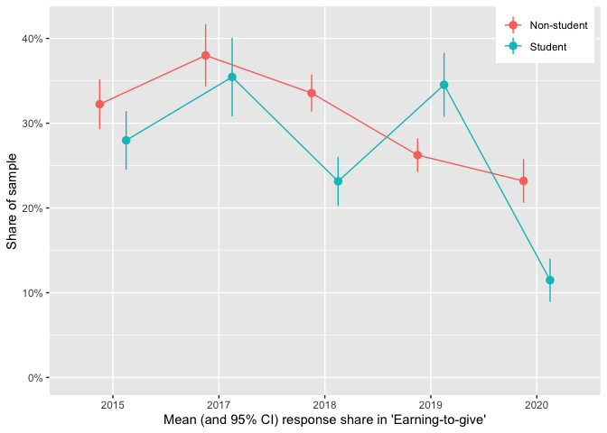
We expect non-students to be less sensitive to the changing wording of the survey question as they are more likely to be in a career path as their ‘current career.’ The decline in ETG is less dramatic among non-students (over 23% of non-student respondents still report ETG as their ‘current career’), but it nonetheless appears to be fairly strong and consistent from 2017-present.*
* We do not include 2014 in the above tables and plots because of very low response rates to the student status and EtG-relevant questions.
1.4 Donation totals: descriptives
Overall donations, totals by groups
Below, we present a histogram of positive reported 2019 donations by all respondents. Note that:
- the horizontal axis is on a logarithmic scale,
- 13.7% of the 2,056 total respondents reported donating zero, and
- 30.8% of the total respondents did not report their donation amount.
- As noted above, we will often simply refer to ‘donations’ rather than ‘reported donations,’ for brevity
eas_20$don_19_p1 <- as.numeric(eas_20$donation_2019_c+1)
#adapting from EA survey 2019 Rscript_analysis.md
donation_2019_c <- eas_20$donation_2019_c
require(scales)
don_breaks <- c(50, 100, 200, 300, 500, 1000, 2500, 5000, 10000, 25000, 50000, 100000, 250000, 500000, 1000000, 2500000)
eas_20 %<>%
rowwise() %>%
mutate(donation_2019_c_50 = max(donation_2019_c, 50)) %>%
ungroup
(
donhist_19 <- eas_20 %>%
hist_plot_lscale(eas_20$donation_2019_c_50, breaks = don_breaks) +
geom_vline_mean(donation_2019_c) +
geom_vline_med(donation_2019_c) +
geom_vline_90(donation_2019_c) +
labs(title="Histogram of 2019 Donations", x="2019 $ Donations (bottom-coded at 50)", y = "Number of respondents")
)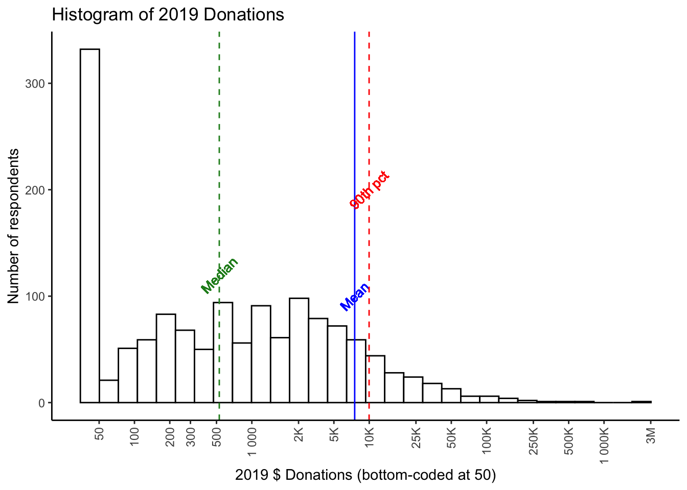
# Todo (medium importance): Overlay a display of 'overall percentage shares' ... so we know where the 80th and 90th percentile are, etc.In 2019 we reported:
a donation of 1000 USD per year … would place one in the top half of EA donors (specifically, the 55th percentile), whereas being in the top 10% of donors would require donating 11,000 USD and the top 1% 110,000 USD.
The results for 2020 (for 2019 donations) are comparable; the median donation (of those reporting) is 528 USD, a donation of $1000 puts you in the 59.5th percentile. Being in the top 10% requires donating 9,972 and being in the top 1% means donating 89,560 USD.
As in previous years, the mean far exceeds the median, (and falls close to the 90th percentile!); a very small number of very large donations dwarf the size of most others. We illustrate this in the ‘treemap’ plot below, which divides the total reported contributions into groups by size-of-contribution.
#p_load(treemapify)
geom_treemap_opts <- list(geom_treemap(alpha = 0.7),
geom_treemap_text(fontface = "italic", colour = "white", place = "centre",
grow = TRUE, min.size = 1 ),
theme(legend.position = "none",
plot.title = element_text(hjust = 0.5))
)
(
don_share_by_size <- eas_20 %>% select(donation_2019_c, donation_2019_c_split) %>%
group_by(donation_2019_c_split) %>%
summarise(total_don = sum(donation_2019_c, na.rm=TRUE)) %>%
mutate(don_share = round(total_don/sum(total_don)*100)) %>%
filter(!is.na(donation_2019_c_split)) %>%
ggplot(aes(area = total_don, fill= donation_2019_c_split,
# Include percentage of total donation
label = paste(donation_2019_c_split, paste0(don_share, "%"), sep = "\n"))) +
geom_treemap_opts +
ggtitle("Share of total 2019 donation amount, by donation size")
)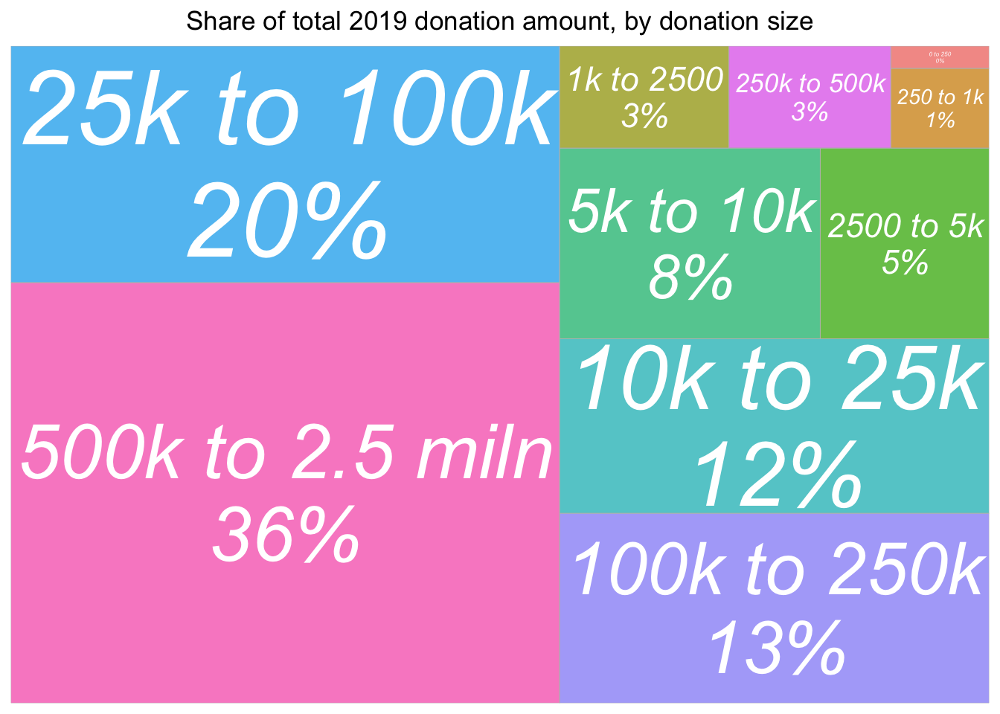
Over a third of total reported contributions reported for 2019 come from contributions over 500,000 USD, with another 20% coming from contributions between 25k and 100k. Contributions of under 2500 USD represent less than 5% of the total.
Next we consider ‘which career paths are driving total donation totals?’; mapping the share of total 2019 donations similarly, accompanied by a table of their overall shares of respondents, for comparison.*
* This figure excludes 486 participants who provided no response to the career question, 0.236 of the sample. These participants reported a total of $$2,766,310 in donations which makes up 25.9% of the total reported donations for 2019.
#library(treemapify)
(
don_by_career <- eas_20 %>% select(career_, donation_2019_c) %>%
group_by(career_) %>%
filter(!is.na(career_)) %>%
summarise(total_don = sum(donation_2019_c, na.rm=TRUE),
n = n()) %>%
mutate(don_share = round(total_don/sum(total_don)*100),
freq = n/sum(!is.na(eas_20$career_))
) %>%
ggplot(aes(area = total_don , fill=freq,
# Include percentage of total donation
label = paste(career_,
paste0(don_share, "%"),
paste0("(Pop:", round(freq*100) , "%)"),
sep = "\n"))) +
geom_treemap_opts +
# theme(legend.position = "bottom") + #todo -- add title to legend explaining that it's the survey pop; get better colors for this
scale_fill_continuous(name = "Frequency",
label = scales::percent, trans = "reverse") +
labs(title= "Share of 2019 donations by career path", subtitle = "(Share of survey population in parentheses; darker = larger share)")
)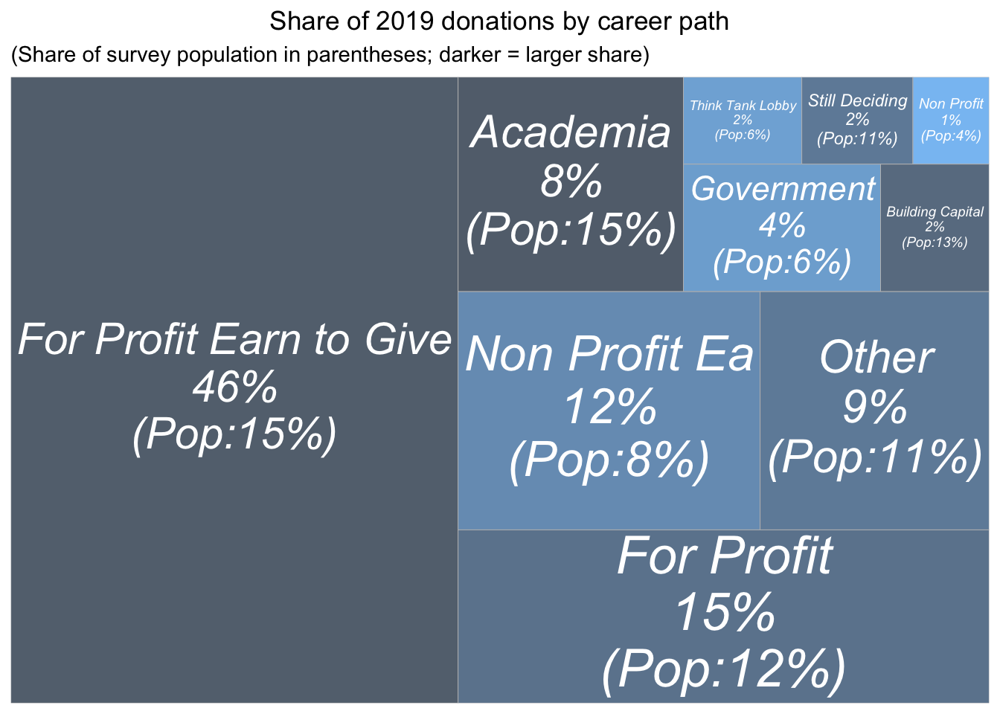
career_tab <- eas_20 %>%
mutate(Career = na_if(career_, "na")) %>%
filter(!is.na(Career)) %>%
tabyl_ow_plus(Career, caption="Shares in each career path",
title_case = TRUE)
#Todo: the right column needs to be x100 or say 'share' instead of 'percent'
Those reporting ‘for profit-earning to give’ career paths represent the largest share, nearly half of the total donations, despite making up only about 15% of the sample (of those answering this question). Those with ‘for profit’ careers who do not say they are earning to give donate about 15% of the total, roughly in proportion to their 12% share of the sample. However all of these differences may reflect differences in income and wealth levels, as well as differences in underlying characteristics of people who choose different career paths.
Direct work does not seem to be obviously coming at the expense of donations. Those pursuing careers working at EA-affiliated non-profits account for a somewhat higher share of donations (12%) than their (8%) share of the sample. (However, we do not know how much these particular EAs would have given had they chosen a different career.)
Obviously, income levels are different between these career paths. We put this in perspective in the plot below.
grp_sum <- function(df, xvar, yvar, groupvar) {
df %>%
dplyr::select({{xvar}}, {{yvar}}, {{groupvar}}) %>%
group_by({{groupvar}}) %>%
drop_na({{xvar}}, {{yvar}}, {{groupvar}}) %>%
summarise(
mn_y = mean({{yvar}}),
mn_x = mean({{xvar}}),
med_y = median({{yvar}}),
med_x = median({{xvar}}),
se_y = sd({{yvar}}, na.rm=TRUE)/sqrt(length({{yvar}})),
se_x = sd({{xvar}}, na.rm=TRUE)/sqrt(length({{xvar}}))
) %>%
group_by({{groupvar}}) %>%
# Calculate confidence intervals
mutate(
lower = max(0, mn_y - 1.96*se_y),
upper = mn_y + 1.96*se_y
)
}
plot_grp <- function(df, groupvar, labsize=3) {
df %>%
ggplot(aes(x=mn_x, y=mn_y, label = {{groupvar}})) +
geom_point() +
#add median here
# geom_line(color = "red", data = income_pred, aes(x = income_k_c, y = )) +
geom_abline(intercept = 0, slope = 0.1, colour="violetred1") +
geom_smooth(method=lm, alpha=0.7) +
geom_errorbar(aes(ymin = lower,
ymax = upper), alpha=0.7) +
scale_y_continuous( oob = scales::squish) +
scale_x_continuous( oob = scales::squish) +
ggrepel::geom_text_repel(size = labsize, angle = 90)
}(
don_inc_status_plot <- eas_20 %>%
mutate(Career = na_if(career_, "na")) %>%
filter(!is.na(Career)) %>%
grp_sum(income_c_imp, donation_2019_c, Career) %>%
plot_grp(Career, labsize=2.5) +
xlab("Mean income in USD (imputed if 0/missing)") +
ylab("Mean donations, CIs") +
scale_y_continuous(limits=c(-10000, 30000), oob = scales::squish)
)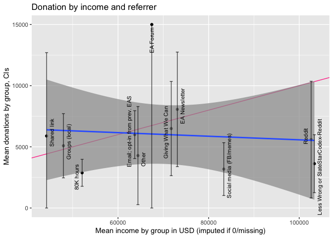 The plot above depicts mean income and mean donations by ‘career group,’ with 95% CI’s for the latter. We superimpose a ‘line of best fit’ (blue, with smoothed 95% intervals for this rough fit) and a ‘10% of income donation’ line (red). Unsurprisingly, for-profit ‘not-EtG’ are below the fitted line, and ‘for-profit EtG’ above this line, although 95% CIs are fairly wide. We also note that amng people in Non-profit careers, there are similar average incomes whether or not the nonprofit is EA-aligned, but the Non-profit EA people seem to donate somewhat more (although the CI’s do overlap.)
Next, we present reported donation amounts by income groupings (imputing income where missing or 0).*
* However, the figure does remove observations where income as well one of either country or student status is missing, thus income cannot be simply imputed from these.
#p_load(treemapify)
(
don_share_by_income <- eas_20 %>%
select(donation_2019_c, income_c_imp_k, income_c_imp_split) %>%
filter(!is.na(income_c_imp_k)) %>%
group_by(income_c_imp_split) %>%
summarise(total_don = sum(donation_2019_c, na.rm=TRUE),
n = n()) %>%
mutate(don_share = round(total_don/sum(total_don)*100),
freq = n/sum(!is.na(eas_20$income_c_imp_split))) %>%
ggplot(aes(area = total_don, fill= freq,
# Include percentage of total donation
label = paste(income_c_imp_split,
paste0(don_share, "%"),
paste0("(Pop:", (round(freq*100, 1)) , "%)"),
sep = "\n"))) +
geom_treemap_opts +
scale_fill_continuous(name = "Frequency",
label = scales::percent, trans = "reverse") +
labs(title= "Share of 2019 donations by income groups", subtitle = "(Share of survey population in parentheses; darker = larger share)")
)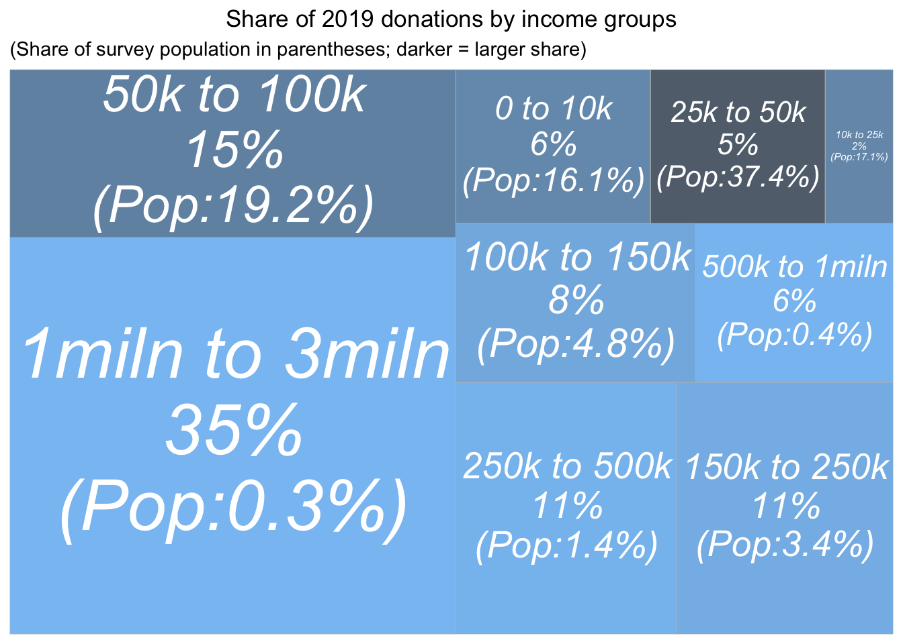
earn_tab <- eas_20 %>%
tabyl_ow_plus(income_c_imp_split)Compare the above graph to the ‘donations by donations size’ graph.
The largest earners (the 6 people earning 1 million USD or more) represent 35% of the donations (cf the largest donors represent 36% of the donations). However, the second-highest earners, the 8 people earning between 500k and 1 million USD represent only 6% of the donations (cf 20% from the second-highest donation group). In fact, the second largest share of total 2020 donations come from the second-largest (in population) income-group in our sample, the 395 people earning between 50K and 100K USD.
Finally, we report donation totals by country.
First for 2019 donations alone:
#p_load(treemapify)
(
don_share_country <- eas_20 %>% select(donation_2019_c, country_big) %>%
group_by(country_big) %>%
summarise(total_don = sum(donation_2019_c, na.rm=TRUE),
n = n()) %>%
mutate(don_share = round(total_don/sum(total_don)*100),
freq = n/sum(!is.na(eas_20$country))) %>%
ungroup() %>%
filter(don_share != 0 & !is.na(country_big)) %>%
ggplot(aes(area = total_don, fill= freq,
# Include percentage of total donation
label = paste(country_big,
paste0(don_share, "%"),
paste0("(Pop:", op(round(freq*100, 0)) , "%)"),
sep = "\n"))) +
geom_treemap_opts +
#scale_fill_continuous(name = "Frequency", label = scales::percent, trans = "reverse") +
scale_fill_continuous(name = "Frequency",
label = scales::percent, trans = "reverse") +
labs(title= "Share of 2019 donations by country", subtitle = "(Share of survey population in parentheses; darker = larger share)")
)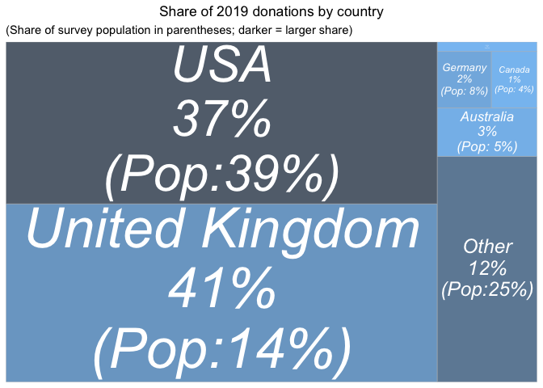
#; darker = larger shareNext, pooling across all years of the EA survey (without any weighting or adjustment):
(
don_share_country_all_years <- eas_all %>% select(donation_usd, country, year) %>%
filter(!is.na(country)) %>%
group_by(country) %>%
summarise(total_don = sum(donation_usd, na.rm=TRUE),
n = n()) %>%
mutate(don_share = round(total_don/sum(total_don)*100),
freq = n/sum(!is.na(eas_all$country))) %>%
filter(don_share > 0.1) %>%
mutate(country = snakecase::to_title_case(country)) %>%
ggplot(aes(area = total_don, fill= freq,
# Include percentage of total donation
label = paste(country,
paste0(don_share, "%"),
paste0("(Pop:", op(round(freq*100, 0)) , "%)"),
sep = "\n"))) +
geom_treemap_opts +
scale_fill_continuous(name = "Frequency",
label = scales::percent, trans = "reverse") +
theme(legend.position = "none",
plot.title = element_text(hjust = 0.5)) +
labs(title= "Share of total (all years) donation amounts by country", subtitle = "(Share of survey population in parentheses; darker = larger share)")
)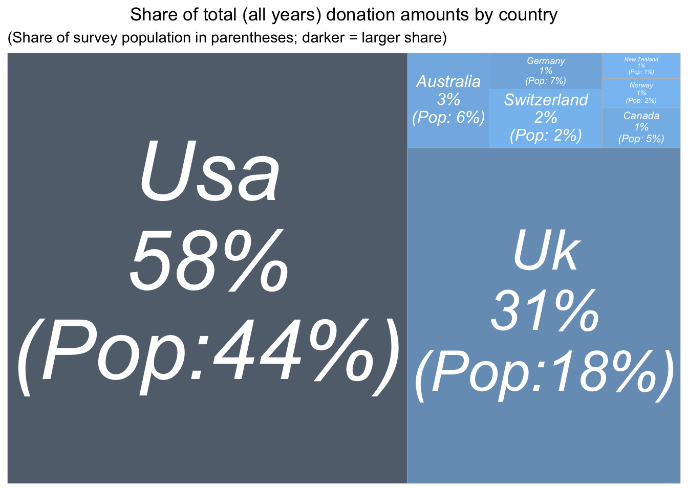
#TODO - @oska -- UK and USA in all-caps aboveWe also report this as a table:
#TODO - @oska -- capitalization below
#TODO - @oska -- sort by shares below
(
country_tab <- eas_all %>%
group_by(country_big) %>%
mutate(
year_2020 = case_when(
year==2020 ~ "2019 don.",
TRUE ~ "pre-2019 don."
),
`Country` = country_big,
) %>%
tabyl(`Country`, year_2020) %>%
adorn_percentages("col") %>%
.kable(digits=2, caption="Share of total amounts donated by country; larger countries only", label=TRUE) %>%
.kable_styling()
)| Country | 2019 don. | pre-2019 don. |
|---|---|---|
| australia | 0.04 | 0.04 |
| canada | 0.03 | 0.03 |
| czech republic | 0.02 | 0.00 |
| france | 0.02 | 0.00 |
| germany | 0.06 | 0.05 |
| netherlands | 0.02 | 0.01 |
| new zealand | 0.02 | 0.01 |
| norway | 0.02 | 0.01 |
| Other | 0.11 | 0.05 |
| sweden | 0.01 | 0.01 |
| switzerland | 0.02 | 0.01 |
| uk | 0.11 | 0.12 |
| usa | 0.30 | 0.28 |
| NA | 0.22 | 0.36 |
and we give a year-by-year animation:
#d_anim <- "Y"
#library(gganimate)
if (exists("d_anim")) {
if (d_anim == "Y") {
animated_dons_country <- eas_all %>% select(year, donation_usd, country_big) %>%
group_by(year, country_big) %>%
filter(year>2014) %>%
summarise(total_don = sum(donation_usd, na.rm=TRUE)) %>%
mutate(don_share = round(total_don/sum(total_don)*100)) %>%
ggplot(aes(area = total_don, fill= country_big,
# Include percentage of total donation
label = paste(country_big, paste0(don_share, "%"), sep = "\n"))) +
geom_treemap_opts +
ggtitle("Share of total 2019 reported donation amounts by country")
anim <- animated_dons_country + transition_states(year,
state_length = 3) +
ggtitle("Share of total {closest_state} reported donation amounts by country")
anim
}
}
#Todo (medium importance): sloIn 2019, the largest summed donation amount came from
the UK (about 11% of the sample but 41% of the donations)
and the USA (30% of the sample and 37% of the donations).
Across all years, the USA represents the largest amount of donations, with the UK a close second, again, with the latter especially ‘punching far above its weight.’ This may even be understated, if UK donors claim the matching ‘Gift Aid’ but do not report it as part of their donation.*
* In the UK the government’s ‘Gift Aid’ policy supplements all reported donations made by UK taxpayers by an additional 25%.
Again, these raw difference may reflect differences in income and life circumstances among survey respondents from different countries, and there may also be driven by a few large outlying donations.
We have shown ‘where the donations were in 2019’ (and across years) but we should be careful in making general and specific conclusions from this about (e.g.) national differences in inherent generosity. We return to presenting a ‘controlled descriptive picture’ in our modeling work.
Employment and student status
We present income and donation statistics for those “statuses” with more than 50 respondents in the forest plot below (a full table of statistics for each group can be found in the bookdown appendix).*
* In stratifying donation and income statistics by employment/student status we exclude those who gave no information on this question (or who answered that they prefer not to answer). (These nonresponses make up 20.4% of the sample).
se <- function(x) sqrt(var(x)/length(x))
sumstatvec <- c("{median}", "{p10}-{p90}", "{mean} [{se}] ({sd})")doninclabs <- list(income_k_c ~ "Income in $1000 USD",
donation_2019_c ~ "2019 donation (in USD)",
donation_2020_c ~ "2020 planned donation")don_inc_by_student <-
eas_20 %>%
group_by(status_) %>%
mutate(
status_ = as.character(status_),
large_group = case_when(
n()<50 ~ "Other",
TRUE ~ status_)
) %>%
ungroup() %>%
dplyr::select(income_k_c, donation_2019_c, donation_2020_c, large_group) %>%
tbl_summary(by = large_group,
type = c(all_continuous()) ~ "continuous2",
statistic = list(all_continuous() ~ sumstatvec),
label = doninclabs,
missing = c("no") ) %>%
bold_labels() %>%
add_n() %>%
add_overall()
#TODO: High -- fix the column labels
#todo (low) -- we use this several times and it's a good format; let's functionalise it
#Todo (medium): Bootstrapping the SE of the median would be nice, see, e.g., https://clayford.github.io/dwir/dwr_12_generating_data.htmlIn the graphs below, the blue line is a simple linear best-fit of these points, and the red line represents a 10% donation rate.
library(ggrepel)
#
# 1.summarize donation and income (mean and 95pct CI for each) by status_
# 2. plot median (and mean) donation by income for each group (income lowest to highest)
# 3. fit a line/curve of donation by income for each group (do for ) -- replace with the regression line based on the population not the groups
# 4. Add error bars (for donations, not income) -- hard to do for median, though
#TODO -- High Priority: Make this nice in the ways discussed (@oska it seems you have already started this)
# why are the error bars not surrounding the point?
# make it pretty (use your judgment), fix labels, add median colored dot,
(
don_inc_status_plot <- eas_20 %>%
grp_sum(income_c_imp, donation_2019_c, status_) %>%
plot_grp(status_, labsize=2.5) +
xlab("Mean income in USD (imputed if 0/missing)") +
ylab("Mean donations, CIs") +
scale_y_continuous(limits=c(-10000, 30000), oob = scales::squish)
)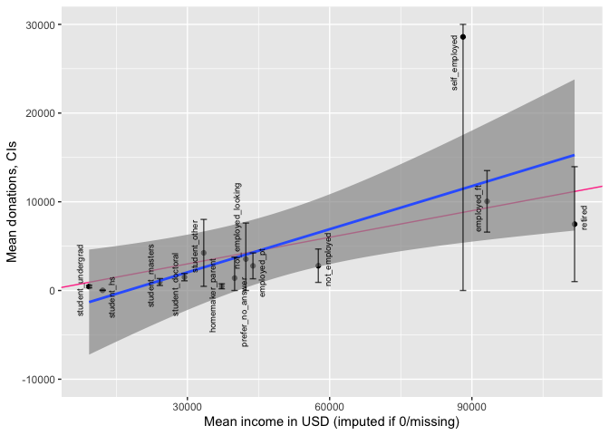
# Todo (low): Plot regression line for full pop
# Todo: HIGH -- get this to look nicer, label it better, add better axis breaks (every 5k for donation, every 20k for income)
#Todo (Medium) -- add plots for the medians
#TodoDonations generally track income by this aggregation, with some groups possibly ‘under-performing’ or ‘over-performing’; we return to this in our descriptive modeling.*
*Note that thus is reporting means and not medians. The ‘self-employed’ group clearly reflects outliers, and it’s upper CI is truncated at 30000 to save space.
Donations by country
Donations and income by country
We report similar income and donation statistics for all countries with more than 50 respondents:
(
don_income_by_ctry <-
eas_20 %>%
dplyr::select(income_k_c, donation_2019_c, donation_2020_c, country_big) %>%
tbl_summary( by = country_big,
sort = all_categorical() ~ "frequency", #reverse this ordering or maybe reverse sort by average income
type = c(all_continuous()) ~ "continuous2",
statistic = list(all_continuous() ~ sumstatvec),
label = doninclabs,
missing = c("no")
) %>%
bold_labels() %>%
add_n() %>%
add_overall()
)| Characteristic | N | Overall, N = 1,6071 | Australia, N = 82 | Canada, N = 59 | France, N = 51 | Germany, N = 123 | Netherlands, N = 51 | Other, N = 402 | United Kingdom, N = 218 | USA, N = 621 |
|---|---|---|---|---|---|---|---|---|---|---|
| Income in $1000 USD | 1,384 | |||||||||
| Median | 33 | 36 | 27 | 13 | 17 | 15 | 22 | 36 | 50 | |
| 10%-90% | 1-130 | 7-109 | 3-86 | 0-42 | 2-70 | 0-64 | 0-83 | 3-82 | 2-192 | |
| Mean [se] (SD) | 60 [4] (136) | 49 [5] (46) | 41 [6] (42) | 18 [3] (17) | 28 [3] (29) | 31 [6] (38) | 37 [3] (44) | 69 [17] (243) | 85 [6] (146) | |
| 2019 donation (in USD) | 1,397 | |||||||||
| Median | 533 | 872 | 231 | 178 | 355 | 237 | 327 | 660 | 1,000 | |
| 10%-90% | 0-9,577 | 0-7,271 | 0-6,948 | 0-3,551 | 0-4,971 | 0-2,367 | 0-6,450 | 0-6,600 | 0-16,180 | |
| Mean [se] (SD) | 7,348 [1,956] (73,113) | 3,647 [971] (8,411) | 2,753 [930] (6,769) | 1,178 [283] (1,919) | 1,582 [273] (2,850) | 925 [226] (1,536) | 4,069 [1,777] (31,444) | 21,019 [12,693] (182,619) | 7,211 [864] (20,215) | |
| 2020 planned donation | 1,377 | |||||||||
| Median | 1,000 | 1,636 | 761 | 473 | 947 | 395 | 592 | 1,320 | 2,000 | |
| 10%-90% | 0-12,020 | 11-12,360 | 0-8,676 | 0-4,660 | 17-5,823 | 0-4,438 | 0-7,000 | 0-7,867 | 0-21,000 | |
| Mean [se] (SD) | 9,831 [2,001] (74,249) | 4,852 [964] (8,404) | 2,909 [844] (6,142) | 2,026 [514] (3,450) | 2,216 [360] (3,692) | 1,358 [280] (1,901) | 3,515 [604] (10,654) | 24,930 [11,970] (170,546) | 12,033 [2,345] (54,382) | |
|
1
c("Median", "10%-90%", "Mean [se] (SD)")
|
||||||||||
#todo (medium?): make a stem-leaf thing here ...
#todo (High): add *medians* to the above # don_inc_status_plot <- eas_20 %>%
# dplyr::select(status_, donation_2019_c, income_k_c) %>%
# group_by(status_) %>%
# drop_na(status_, donation_2019_c, income_k_c) %>%
# summarise(across(c(donation_2019_c, income_k_c),
# list(mean=mean,
# median=median,
# se = ~sd(.x)/sqrt(length(.x))))) %>%
# group_by(status_) %>%
p_load(ggimage)
country_codes <- tibble(country = c("Australia", "Canada", "France", "Germany", "Netherlands", "Other", "United Kingdom", "USA"),
code = c("ac", "ca", "fr", "de", "nl", "yt", "gb", "us"))
(
don_inc_country_plot <- eas_20 %>%
grp_sum(income_c_imp, donation_2019_c, country_big) %>%
left_join(., country_codes, by = c("country_big" = "country")) %>%
plot_grp(country_big) +
xlab("Mean income in USD (imputed if 0/missing)") +
ylab("Mean donations, CIs") +
scale_y_continuous(limits=c(-3000, 30000), oob = scales::squish)
)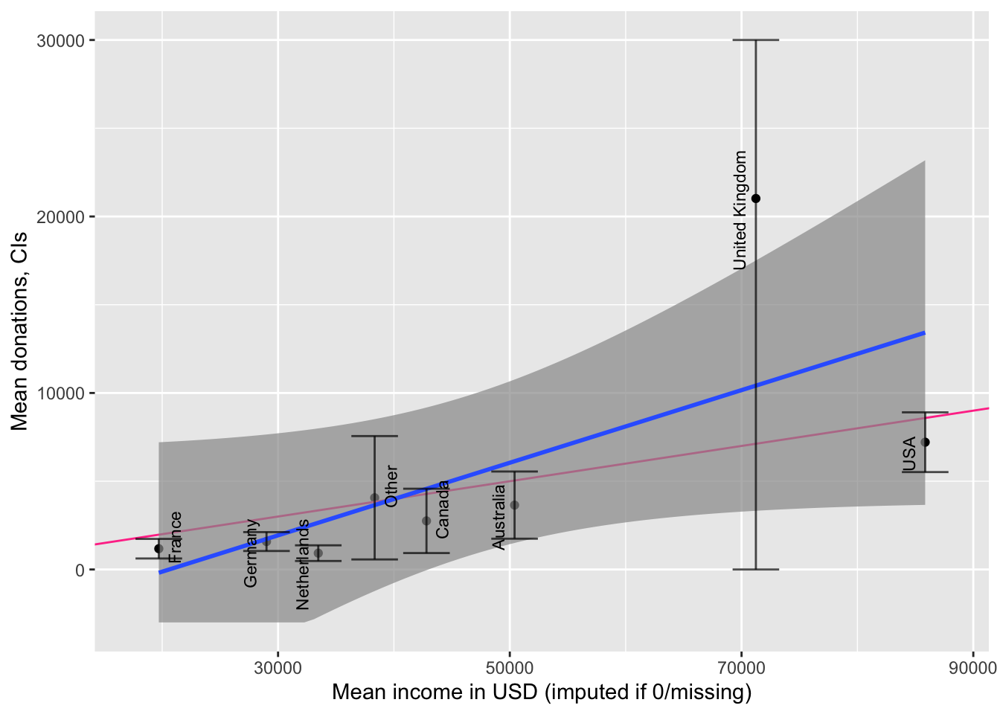
#+ggimage::geom_flag()Above, we plot donations and income by country of residence for the countries with the largest number of EA respondents. We fit a simple best-fit (least-squares) line in blue, and add a red line depicting a 10% donation rate. Again, donations generally track income, with some under and over-performers (see later modeling). The UK clearly contains some notable donation outliers, leading to very large confidence intervals for the UK mean (truncated above at 30000 USD).
plot_box_pt_viol <- function(df, yvar, groupvar, notch=TRUE) {
df %>%
dplyr::select({{yvar}}, {{groupvar}}) %>%
ggplot() +
aes({{groupvar}}, {{yvar}}) +
geom_point(size = 0.30, colour = "grey", position = position_jitter(seed = 42, width = 0.3, height = 0.01)) +
geom_boxplot(alpha=0.7, notch=notch, color="black") +
geom_violin(alpha=0.4, color = "pink") +
scatter_theme +
scale_y_log10()
}
(
don_by_country_viol_20 <- eas_20 %>%
plot_box_pt_viol(donation_2019_c, country_big, notch=TRUE) +
labs(title = "Donation amounts by country (2019)")
)
(
don_by_country_viol_all <- eas_all %>%
plot_box_pt_viol(donation_usd, where_live_cat, notch=TRUE) +
labs(title = "Donation amounts by country grouping (2013-2019)")
)
(
don_by_yr_viol_all <- eas_all %>%
mutate(year=as.factor(year)) %>%
plot_box_pt_viol(donation_usd, where_live_cat, year) +
ggplot() +
labs(title = "Donation amounts by year")
)Donations, age and years in EA
Next, we consider how donations may increase or decrease with ‘time-in-EA’ (i.e., ‘tenure’). As discussed in other posts and bookdown chapters, this may be reflecting differences in who stays in EA (and continues responding to the survey) as much as it reflects how people themselves change from year to year.
Below, we plot donations by tenure, breaking this down by age groups.
(
don_by_tenure_facet_age <-
eas_all %>%
filter(year==2020) %>%
filter(!is.na(age_ranges)) %>%
ggplot() +
aes(x = tenure, y = donation_usd_min50) +
geom_point(size = 0.15, colour = "#0c4c8a", position = position_jitter(seed = 42, width = 0.1, height = 0.001)) +
geom_smooth(span = 0.75) +
scatter_theme +
facet_grid(vars(), vars(age_ranges), scales = "free") +
labs(title = "2019 donation by time in EA",
subtitle = "Faceted by Age ranges") +
labs(x = get_label(eas_20$tenure)) +
scale_y_don
) %>%
ggplotlyDonations appear positively associated with tenure for nearly all age groups, with perhaps some flattening out after 5 or so years, for some age groups. Donations also appear positively associated with age for each level of tenure. We return to this in our descriptive (and causally-suggestive) models.
Donation as share of income by tenure, ‘faceted’ by age groupings:
(
donshare_by_tenure_facet_age <-
eas_20 %>%
filter(!is.na(age_approx_ranges)) %>%
ggplot() +
aes(x = tenure, y = don_share_inc_19_imp) +
geom_point(size = 0.15, colour = "#0c4c8a", position = position_jitter(seed = 42, width = 0.1, height = 0.001)) +
geom_smooth(span = 0.75) +
scatter_theme +
facet_grid(vars(), vars(age_approx_ranges), scales = "free") +
labs(title = "2019 donation as share of (imputed) income by time in EA",
subtitle = "Faceted by Age ranges") +
labs(x = get_label(eas_20$tenure)) +
ylim(0, 0.3)
) %>%
ggplotly* This also holds when we look within groups of ‘referrers’ (which link took a respondent to the survey.) We report a graph on this in the online appendix as a robustness check. This suggests that the association with tenure is not entirely driven by differences in the composition of those referred to the survey.
By referrer
Next, we consider how donations vary by ‘which referrer’ (link) took an individual to the EA survey.
Again, the blue line gives linear fit (for group means), and the red line the slope for donating 10% of income.
(
don_inc_referrer_plot <- eas_20 %>%
grp_sum(income_c_imp, donation_2019_c, referrer_cat) %>%
plot_grp(referrer_cat) +
scale_y_continuous(limits=c(0, 15000), oob = scales::squish) +
xlab("Mean income by group in USD (imputed if 0/missing)") +
ylab("Mean donations by group, CIs") +
ggtitle("Donation by income and referrer")
)# (Todo?) I wonder if we should get rid of the blue line and gray line for this … or replace it with one from an individual-based regressionAt the referrer level we see no strong association of income and donation, however, these confidence intervals are very wide. While 80000 Hours and social media appear to be ‘under-performers,’ for most groups of referrers the confidence intervals are too wide to make very strong inferences.
1.5 Donation and income trends in EA
We are interested in understanding whether EAs have been donating more or less in recent years; both as individuals and in total. We can consider the amounts reported donated in each year of the EA survey (EAS). However, even if we are interested in the total, it is not clear whether it is more meaningful to consider the total reported in each EAS, or the ‘average reported per respondent,’ or something else. This depends on whether or not the increase/decrease in survey response reflects an increase/decrease in actual EA population.
- If the EAS response rates (and the response rates to the donation question in particular) vary year-to-year in proportion to the total size of the EA population representative, we may want to simply focus on the totals, which should move in proportion to the true totals.*
* As discussed in other posts and the online bookdown supplement, the EAS may also not be representative of the EA population cross-sectionally, i.e., it may over or under-represent certain demographic or interest-oriented subpopulations. Still, if this unrepresentativeness is ‘constant from year to year,’ the total reported donations in each year will at least provide a reliable measure of how the donations of this (somewhat nonrepresentative) weighted average is changing from year to year. Note that the issue of cross-sectional representativeness (and changes in this) is equally relevant to questions of ‘average donations’ as it is to questions of ‘total donations.’
On the other hand, suppose the number of responses to the EAS fluctuates from year to year not in proportion to the size of EA, but its composition is representative of the EA movement as a whole. In this case it may be more reliable to report mean or median donations of EAS respondents, and combine this with extrapolations and ‘guesstimates’ based on separate estimates of changes in the size of EA (themselves in informed by data including the EA survey).
To the extent that the EAS response total is both fluctuating (independently of the size of EA) and nonrepresentative, we may be only able make statements about changes in donations among particular subgroups, and even then the within-subgroup composition may change.
Because of these limitations:
- we report both totals and averages below,
- we advise caution in interpreting the amounts and changes
- we return to this in a controlled model, which is also subject to similar limitations,
- we defer more detailed analysis of this question for future work.
The plot and tests below depict and consider the year-to-year changes in donations as reported in the EA surveys for each year.*
*We exclude the year 2014, because of the very low response rate to the donation question in this survey.
We first consider donation rates in each year for those who answer the donation question (reporting 0 or positive amounts). We give the share of positive responses, the mean, median, and 80th percentile donation, and the standard deviation for each year:
library(ggstatsplot)
library(pairwiseComparisons)
(
don_by_year_tab <- eas_all %>%
filter (year>=2015) %>%
sumtab(donation_usd, year, caption="Donations by year", digits=c(0, 0, 2, 0, 0, 0,0))
)| year | N | share > 0 | Mean | Median | P80 | Std.dev. |
|---|---|---|---|---|---|---|
| 2015 | 1171 | 0.76 | 5775 | 333 | 3759 | (39271.5) |
| 2017 | 1033 | 0.84 | 9554 | 662 | 5840 | (75299.69) |
| 2018 | 1891 | 0.85 | 9761 | 740 | 5201 | (137731.17) |
| 2019 | 1708 | 0.82 | 9353 | 684 | 5000 | (87496.44) |
| 2020 | 1423 | 0.80 | 7516 | 528 | 4347 | (72810.66) |
The above only considers people who did answer donation questions. At an extreme we could consider all non-responses as reflect people who made (little or) no donations, for a lower bound on on donation rates. As a compromise measure, probably a tighter lower bound, we might assume that people willing to report their incomes are generally willing to answer financial questions. Thus if they do not report their donations it seems more reasonable to suspect that they did not donate in a big way. We thusconsider the subset of the above who reported their income, considering similar statistics as above for a modified donation variable, coded as ‘0’ where the donation was not reported.
(
don0_by_year_tab <- eas_all %>%
filter(!is.na(income_c) & year>2014) %>%
#rowwise() %>%
#mutate(donation_usd_0 = if_else(is.na(donation_usd), 0, donation_usd)) %>%
#ungroup() %>%
sumtab(donation_usd_0, year, caption="Donations by year for those reporting income (missings coded as 0)", digits=c(0, 0, 2, 0, 0, 0, -1, 0))
)| year | N | share > 0 | Mean | Median | P80 | Std.dev. |
|---|---|---|---|---|---|---|
| 2015 | 1033 | 0.69 | 4746 | 250 | 3094 | (35095.05) |
| 2017 | 1012 | 0.82 | 8956 | 615 | 5153 | (75126.5) |
| 2018 | 1837 | 0.83 | 9950 | 740 | 5201 | (139733.49) |
| 2019 | 1686 | 0.82 | 9426 | 684 | 5000 | (88061.45) |
| 2020 | 1409 | 0.80 | 7452 | 528 | 4098 | (73109.73) |
#todo same for GWWC people (member_gwwc needs reconciling)
#todo -- include a 'total donations row'. maybe plot/graph this stuff;Next, we present a combined scatterplot, violin plot, and stem and leaf plot, depicting the densities of donation amounts in each year. We present this first with level outcomes (but log scales) and then for the ‘log (donation+1)’ outcome.
(
don_by_year_viol_test <- eas_all %>%
#select(donation_usd_min50, year) %>%
#select(donation_usd, year) %>%
mutate(year = year-1) %>%
filter(year>2014) %>%
ggbetweenstats(y = donation_usd,
x = year,
ylab = "Donations (USD)",
# plot.type = "violin", # type of plot
type="parametric",
conf.level = 0.95,
# pairwise.display = "significant",
#p.adjust.method = "hol",
#results.subtitle = "false",
title = "Donations by year, 2016-2020"
) +
theme(legend.position="none") +
ylim(50, NA) +
scale_y_continuous(trans = "pseudo_log",
breaks = breaks,
labels = scales::dollar_format())
)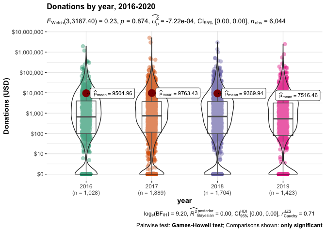
(
don_by_year_viol_test_ldon <- eas_all %>%
#select(donation_usd_min50, year) %>%
#select(donation_usd, year) %>%
mutate(year = year-1,
ldon1 = log(donation_usd+1)) %>%
filter(year>2014) %>%
ggbetweenstats(y = ldon1,
x = year,
ylab = "Log (Donations +1)",
# plot.type = "violin", # type of plot
type="parametric",
conf.level = 0.95,
# pairwise.display = "significant",
#p.adjust.method = "hol",
#results.subtitle = "false",
title = "(Log) donations by donation year, 2016-2019"
) +
theme(legend.position="none")
)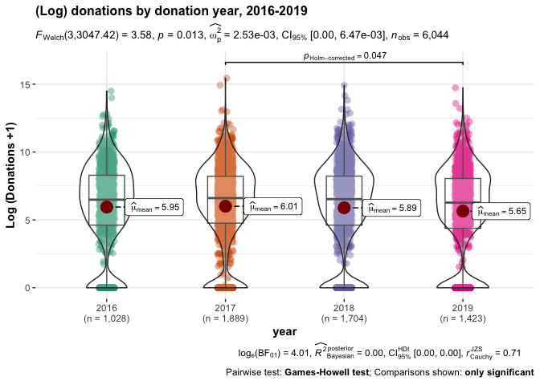
# + geom_signif(comparisons = list(c("2018", "2019"), c("2014", "2019")), step_increase = 0.05, test = "wilcox.test")
#%>% ggplotly()
#Below: replaced this with 'wilcox, the nonparametric test' ... but note that is on top of the tests given by the ggbetweenstats command
#+ geom_signif(comparisons = list(c("2018", "2019"), c("2017", "2019"), c("2013", "2019")), step_increase = 0.1, test = "wilcox.test")While the linear plots and tests of donation amounts suggest no substantial or significant differences in overall donations between these years, the log specification does suggest some year-to-year differences, with (log) 2019 donations being significantly lower than 2017 donations, even after accounting for multiple comparisons. We return to this, to some extent, in our descriptive modeling.*
*While this may merit further investigation, the differences in response composition across years make statistical inference challenging, and we thus do not make this our main focus. Cross-year differences could be inflated or masked by these changes.
1.6 Which charities (causes and categories) are EAs donating to?
As noted in the introduction, only a small share of respondents report where they are donating. We group this into several categories summarized below, reporting for only those 429 respondents who indicated at least one category of donations.
#TODO - HIGH: add better cause labels to this, visualise it in a way that conveys the aggregate shares of donations counts and amounts
#created near the top of this file
don_stats| Variable | N Responses | N positive | Share positive | Mean | Sd | Median | 90th pct |
|---|---|---|---|---|---|---|---|
| Global health + development | 429 | 266 | 0.62 | 3972 | 21405 | 154 | 6018 |
| Animal welfare | 429 | 117 | 0.27 | 1504 | 11025 | 0 | 965 |
| EA meta and organization | 429 | 74 | 0.17 | 771 | 7107 | 0 | 262 |
| Long term & AI | 429 | 78 | 0.18 | 975 | 9964 | 0 | 346 |
| Other | 429 | 47 | 0.11 | 874 | 12864 | 0 | 25 |
As in previous years, ‘Global health and development’ is the largest category, both in terms of number of reported donations, and in terms of mean (and median, and 90th percentile) donations (we give the mean including zeroes, for those who reported any specific category of donation).
Below, we depict the amounts and density of donations for each category, with the vertical axis on a logarithmic scale. The width of the violin plot depicts the smoothed density. In the box, the horizontal lines represent medians for each, lower and upper margins of the box 25th and 75th percentiles, “whisker” lines extends from the box to to the largest (smallest) value no further than 1.5 \(\times\) the inter-quartile range, and large dots represent outlying points beyond the edge of the whiskers.
##TODO --
#sort by reverse frequency of donations to a cause
#TODO: bottom code and change the scale on this, time permitted
(
don_by_cause_viol <- eas_20 %>%
filter(num_named_dons>0) %>%
select(where_don_vars, action_gwwc_f) %>%
gather(cause, don, -action_gwwc_f) %>%
ggplot() +
aes(cause, don) +
geom_violin() +
geom_boxplot() +
ylab("Donation amount") +
geom_point(size = 0.30, colour = "#0c4c8a", position = position_jitter(seed = 42, width = 0.3, height = 0.01)) +
scatter_theme +
scale_y_log10(labels = scales::label_number_si(prefix = "$"),
n.breaks = 10) +
scale_x_discrete(labels = function(x) str_wrap(all_char_labels, width = 10)) +
labs(title = "Donation amounts by category: see description above")
)
#Todo (Low to medium) ... @oska: if it's easy-ish, maybe gganimate this one across years?
#@David: Kinda difficult to do this as the variables in where_don_vars don't seem to align with eas_all
#@oska -- it is there, in variables like `donate_[charity]_year` but it would require considerable data cleaning work. Will ask/see if it's worth it.
We can also check whether donations to each cause (incidence and amounts) vary by whether the person (ever) took a GWWC pledge. Below, we present scatterplots + violin + box plots for donation (USD amounts) to each category, split by GWWC pledge status.
#TODO -- High Priority (@oska): clean up the below to be more readable, add the mean and a CI for the mean
(
don_by_cause_viol_gwwc <- eas_20 %>%
filter(num_named_dons>0 & !is.na(action_gwwc_f)) %>%
select(where_don_vars, action_gwwc_f) %>%
gather(cause, don, -action_gwwc_f) %>%
ggplot() +
aes(cause, don, color=action_gwwc_f) +
scale_color_discrete(name="GWWC pledge",
labels=c("No", "Yes")) +
geom_violin() +
geom_boxplot(notch=TRUE) +
geom_point(size = 0.30, colour = "#0c4c8a", position = position_jitter(seed = 42, width = 0.3, height = 0.01)) +
scatter_theme +
scale_y_log10() +
scale_x_discrete(labels = function(x) str_wrap(all_char_labels, width = 10))
)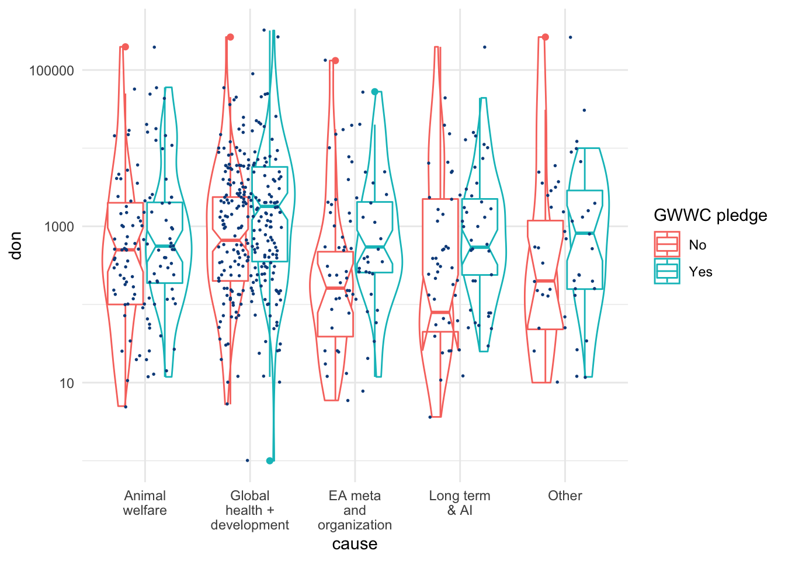
The details of these plots are similar to the previous plot (“Donation amounts by category…,” see description above). However, here the lower and upper margins of the (now ‘notched’) box present an estimate of 95% confidence interval for medians (for those reporting at least one category of donations and reporting GWWC status). We see that these mainly overlap, but perhaps less so for “EA meta and organization,” which GWWC pledgers seem to give more to.
Below, we tabulate donations to each cause, for each of these groups. The final column in each table presents a statistical test for significant differences in means each donation category by GWWC status.
don_stats_by_gwwc| Variable | N Responses | Share positive | Mean | Median | N Responses | Share positive | Mean | Median | Test |
|---|---|---|---|---|---|---|---|---|---|
| GWWC Pledge | No | Yes | |||||||
| Global health + development | 241 | 0.59 | 2833 | 1144 | 187 | 0.66 | 5450 | 1855 | F=1.573<sup></sup> |
| Animal welfare | 241 | 0.22 | 1480 | 867 | 187 | 0.34 | 1531 | 495 | F=0.002<sup></sup> |
| EA meta and organization | 241 | 0.12 | 696 | 553 | 187 | 0.24 | 872 | 336 | F=0.064<sup></sup> |
| Long term & AI | 241 | 0.13 | 1145 | 830 | 187 | 0.25 | 762 | 275 | F=0.155<sup></sup> |
| Other | 241 | 0.06 | 1289 | 1103 | 187 | 0.17 | 344 | 97 | F=0.567<sup></sup> |
Next, as above, but for donation incidence (i.e., for ‘whether someone reports a donation in a particular cause category’):
ddon_stats_by_gwwc| Variable | N Responses | Donated to… ? | N Responses | Donated to… ? | Test |
|---|---|---|---|---|---|
| GWWC Pledge | No | Yes | |||
| Global health + development | 241 | 187 | X2=2.399<sup></sup> | ||
| … No | 100 | 41% | 63 | 34% | |
| … Yes | 141 | 59% | 124 | 66% | |
| Animal welfare | 241 | 187 | X2=7.897<sup>***</sup> | ||
| … No | 189 | 78% | 123 | 66% | |
| … Yes | 52 | 22% | 64 | 34% | |
| EA meta and organization | 241 | 187 | X2=8.283<sup>***</sup> | ||
| … No | 211 | 88% | 143 | 76% | |
| … Yes | 30 | 12% | 44 | 24% | |
| Long term & AI | 241 | 187 | X2=9.831<sup>***</sup> | ||
| … No | 210 | 87% | 140 | 75% | |
| … Yes | 31 | 13% | 47 | 25% | |
| Other | 241 | 187 | X2=11.681<sup>***</sup> | ||
| … No | 226 | 94% | 155 | 83% | |
| … Yes | 15 | 6% | 32 | 17% |
Here, the differences are substantial, and in some cases, statistically significant.
# #TODO -- High Priority (@oska): -- the below is a mess... we want both the frequency table and test for each of these ... but how to do it. I feel like I've done this before. maybe the function in rstuff `fisherme` would help?
# TODO (high-medium): Once we get it to work, do similar plots and tests for different 'which cause' comparisons ...
fisher_cats <- eas_20 %>% filter(num_named_dons>0) %>%
dplyr::select(all_of(where_don_vars)) %>%
lapply(janitor::fisher.test, y = eas_20$action_gwwc_f[eas_20$num_named_dons>0], simulate.p.value=TRUE)As suggested in the two tables above, among those who report a charity category, those who took the GWWC pledge tend to give as much or more on average to each category (other than perhaps Long Term & AI), although none of these individual differences meet conventional statistical significance in simple F-tests (note that these tests are fairly low-powered due to small sample sizes). GWWC pledgers are more likely to have donated to each of these categories, and this difference is statistically significant in standard chi-sq tests for all categories except ‘Global Health and Development.’ This can be seen seen in the \(\chi^2\) tests in the “Donated to category” table, as well as in uncorrected Fisher’s exact tests: \(p=\) 0.0935 for ‘Global Health and Development,’ \(p<0.01\) for all other categories.
1.7 Donations: plans and aspirations versus actual (reported) donations
#filtering and shaping functions
f_don_plan_by_year <- function(df=eas_all) {
#adjusting for comparing planned and actual donation for same year in question (but not always for 'same individuals')
{df} %>%
select(year, donation_usd, donation_plan_usd) %>%
gather(donation_type, value, -year) %>%
mutate(year = if_else(donation_type == "donation_plan_usd", year, year-1)) %>%
mutate(year = fct_rev(as.factor(year)),
donation_type = fct_recode(donation_type,
"Planned Donation" = "donation_plan_usd",
"Donation" = "donation_usd")) %>%
filter(year %in% c(2016, 2017, 2018, 2019, 2020))
}
f_don_18_20 <- function(df=eas_all) {
#this is for comparing to 'planned donation' (next year)
df %>%
dplyr::filter(year %in% c("2018", "2019","2020")) %>%
group_by(year) %>%
select(year, donation_usd, donation_plan_usd) %>%
gather(donation_type, value, -year)
}
f_next_d_don <- function(df=eas_all) {
#same as f_don_18_20, but instead of gather it constructs a differenced variable `next_d_don`
df %>%
dplyr::filter(year %in% c("2018", "2019","2020")) %>%
select(year, donation_usd, donation_plan_usd) %>%
transmute(next_d_don = donation_plan_usd - donation_usd)
}#Construct key tibbles to use in comparing planned and actual for 2019
demographics <- c('age', 'gender', 'country', 'employ_status')
# Filtering for those present in both datasets
planned_actual_2019 <- eas_all %>%
filter(year %in% c(2019, 2020) & !is.na(ea_id)) %>%
select(ea_id, donation_usd, donation_plan_usd, year) %>%
distinct() %>%
group_by(ea_id) %>% filter(n() == 2) %>% # Filter for those appearing in both years
pivot_wider(names_from = "year",
values_from = c("donation_usd", "donation_plan_usd")) %>%
# Remove unnecessary columns
select(-donation_plan_usd_2020, -donation_usd_2019) %>%
# drop_na() %>% # Ensure that each participant had planned donation from 2019 and actual donation from 2020 # TODO - fix, this is dropping everything
rename(donation_2019 = donation_usd_2020,
planned_donation_2019 = donation_plan_usd_2019) %>%
# Add demographic information
left_join(., select(eas_20_cy, all_of(demographics), ea_id, action_gwwc, start_date, end_date, income_c), by = "ea_id")
#Convert to long format for ggplot
planned_actual_2019_l <- planned_actual_2019 %>%
group_by(ea_id) %>%
gather(donation_type, value, donation_2019, planned_donation_2019)## helper functions
f_19_hyp <- function(df) { #2019 data for donation difference
df %>%
filter(donation_2019>0 & planned_donation_2019>0) %>% #positive don in each year
transmute(don_diff = donation_2019 - planned_donation_2019) #only the difference is used; this adds an 'attribute' to this object
}#test_rep_don_diff_mn_19
#point hypothesis of 0 mean (+attribute)
#1000 replications of the relevant 'data'
#test_rep_don_diff_med_19: as above but for median
#test_rep_next_d_don_mn_18_20
#for actual vs *next* year's plan (means)
#test_rep_next_d_don_med_18_20 ... (medians)
#### Linked tests: New Purr testing framework #####
# ...Alternate between testing mean and median = 0 ####
mean_zero_hyp <- list(null = "point", mu = 0)
med_zero_hyp <- list(null = "point", med = 0)
hyps <- list(mean_zero_hyp, med_zero_hyp)
# ...Stats to calculate #####
stat_mean <- list(list(stat = "mean"))
stat_median <- list(list(stat = "median"))
bs_1000 <- list(reps = 1000, type = "bootstrap")
#dataframes for testing 'current less next donation' and 'actual less planned donation'
df_next_don <- eas_all %>% f_next_d_don
df_don_diff <- planned_actual_2019 %>% f_19_hyp
n <- 4 # Total number of tests ... mean and median for each dataframe (better to softcode this?)
responses <- c( rep("don_diff", n/2), rep("next_d_don", n/2))
p_value_directions <- rep("two_sided", n)
# ... Functionalize ####
dfs <- list( rep(list(df_don_diff), n/2),
rep(list(df_next_don), n/2))
linked_df_labels <- c(rep("2019-20 linked responses", 2),
rep("2018-2020 all responses", 2))
linked_test_var_type <- c(rep("Actual vs Planned", 2), rep("'Next year' vs Current", 2))linked_tests_df <- tibble(df = do.call(c, dfs), # Dataframes (needs tidying)
# Stats to calculate
stat = rep(c(stat_mean, stat_median), n/2),
# Hypotheses to test
hypothesis = rep(hyps, n/2),
# Samples to generate
gen = rep(list(bs_1000), n),
# Outcome variables
response = responses,
# Direction for p-value calculation
p_val_dir = rep("two_sided", n))
# .... actually run tests and collect pvalues etc ####
linked_tests_df <- linked_tests_df %>%
mutate(results = pmap(., test_hypothesis))
#test_hypothesis was defined in `hypothesis_test.R`; it runs the steps in the Infer testing package with options selected based on the content of the arguments.
linked_tests_results <- extract_hyp_results(linked_tests_df) %>% #extract and label key results for reporting and plotting
mutate(data_label = linked_df_labels,
data_type = linked_test_var_type)# ... make a tibble of the relevant dataframes and 'test formula elements' ####
unlinked_tests_df <- tibble(df = do.call(c, unlinked_data),
formula = rep(list(unlinked_formula), n),
hypothesis = rep(hyp_unlinked, n),
gen = rep(list(perm_200), n),
stat = c(rep(d_order_diff_means, n-1),
d_order_next_diff_means),
p_val_dir = rep("two_sided", n))# Column labels
rename_test_results <- c("Statistic" = "stat",
"Null type" = "null",
"Null value" = "null_value",
"Point estimate" = "point_estimate",
"CI Lower" = "lower_ci",
"CI Upper" = "upper_ci",
"P-value" = "p_value",
"Sample" = "data_label")
# This can be used for plotting
full_test_results <- dplyr::bind_rows(linked_tests_results, unlinked_diff_in_means_results, unlinked_diff_in_medians_results) %>%
select(-c(order)) %>%
mutate(across(c(stat, null, p_val_dir), ~ snakecase::to_sentence_case(.x)))
# This forms the basis for tables/displaying stats
full_test_results_clean <- full_test_results %>%
select(-c(reps, type, formula, p_val_dir, response)) %>%
rename(!!rename_test_results) %>%
mutate(Statistic = str_replace_all(Statistic, c("means" = "Mean",
"medians" = "Median",
"Diff" = "Difference")))#making tables
#For linked tests:
current_next_test_results_clean <- full_test_results_clean %>%
filter(data_type == "'Next year' vs Current") %>%
select(-c(data_type, null_dist))
planned_v_actual_test_results_clean <- full_test_results_clean %>%
filter(data_type == "Actual vs Planned") %>%
select(-c(data_type, null_dist))
planned_v_actual_test_table <- planned_v_actual_test_results_clean %>%
select(-c(`Null value`, `Null type`, `Sample`)) %>%
kable(caption = "Actual minus planned donations for 2019, linked participants (2019-20)",
digits=c(0,0,0,3)) %>%
kable_styling()
current_next_test_table <- current_next_test_results_clean %>%
select(-c(`Null value`, `Null type`, `Sample`)) %>%
kable(digits=c(0,0,0,0,3), caption = "Planned minus last year's donation, 2018-20, all participants who report donations") %>%
kable_styling()#making tables for UNLINKED tests:
planned_actual_unlinked_results_table <- full_test_results_clean %>%
arrange(match(Sample,
c("Full sample (2018-19 donation years)", "Involved before 2019 (2018-19 don)", "GwwC only (2018-19 don)", "'Matched individuals'"))) %>%
filter(`Null type` == "Independence" & data_type == "Actual - Planned"
) %>%
select(-c(data_type, null_dist, `Null value`, `Null type`)) %>%
select(Sample, Statistic, everything()) %>%
kable(caption = "Actual versus Planned donation distributions: permutation tests",
digits=c(0,0,0,0,0,3)) %>%
kable_styling()
next_current_unlinked_results_table <- full_test_results_clean %>%
filter(`Null type` == "Independence" & data_type == "'Next year' - 'this year'"
) %>%
select(-c(data_type, null_dist, `Null value`, `Null type`)) %>%
select(Sample, Statistic, everything()) %>%
kable(caption = "'Next year (plan)' - 'this year' donation distributions: permutation tests",
digits=c(1,1,1,3)) %>%
kable_styling()Do people meet or exceed the amount they intended or planned to donate for the next year? What factors relate to this? Our surveys provide some evidence.
In recent surveys, we have asked “In [current year] how much do you currently plan to donate?” We also ask “in [previous year], roughly how much money did you donate?”
The EA surveys have been released at various points in the year:
In 2017, the survey was released in April; thus the ‘plan’ was reported only about 1/3 of the way through the year (or slightly later, depending on response time).
In 2018, the survey was released in May.
In 2019, it was released in August, about 3/4 of the way throughout the year.
Thus, for each of these years, the year-to-year comparison may tell us something about whether people lived up to their plans. This could be particularly relevant for the 2017 and 2018 surveys, but also relevant for 2019-20, particularly if donations tend to be clustered at years’ end (e.g., Christmas giving, Giving Tuesday in November).*
* This clustering seems to hold true for giving in the USA overall. E.g., Charity Navigator (citing the ‘Digital giving index’) states that 31% of annual giving occurred in the month of December.
In our 2019 post we wrote:
We also asked respondents how much they planned to donate in 2019… The median planned donation for 2019 was 1,074.98 USD among all EAs, and 3,000 USD among full-time employed non-student EAs.
Below, we compare this 2019 report of planned-2019 donation to reports from the 2020 EAS of actual 2019 donations. We report this for several different groupings below, as well as for other pairings of surveys.
2019 Planned vs. actual: Individuals present in both surveys
We first consider those 440 respondents who can be matched across the 2019 and 2020 surveys (through an anonymized email).
The plots below cover only respondents who appear in both samples and provide planned and actual donation values. These individuals make up 22.9% of the total respondents that appear in the 2020 sample and 15% of the total respondents across 2019 and 2020.*
* These EAs, who happened to respond to the survey in both years and give a matchable email, may not be typical EAs; we discuss this further below
# Create plots for planned and actual donations matched across 2019
scales_point_density_min50 <- list(limits = c(50, 500000), trans = scales::pseudo_log_trans(base=10),
breaks = breaks,
labels = scales::dollar_format())
planned_actual_2019_density <- planned_actual_2019_l %>%
rowwise() %>%
mutate(value = max(value, 50)) %>%
ungroup() %>%
ggplot() + geom_density(aes(x = value, fill = donation_type), alpha = 0.5) +
do.call(scale_x_continuous, scales_point_density_min50) +
scale_y_continuous(breaks = density_breaks,
expand = c(0,0)) +
ggtitle("Actual vs Planned 2019 donations", subtitle = "Donations bottom-coded at $50; subset: those who can be matched across surveys)") +
theme(legend.position = "bottom",
legend.margin=margin(t = -0.6, unit='cm')) + # Shift legend position up
xlab("") + ylab("Density") +
scale_fill_discrete(name = "",
labels = to_title_case(unique(planned_actual_2019_l$donation_type)))
# Define same parameters for x and y axis
scales_point_density <- list(limits = c(0, max_lim), trans = scales::pseudo_log_trans(base=10),
breaks = breaks,
labels = scales::dollar_format())
planned_actual_2019_pointdensity <- planned_actual_2019 %>%
# ggplot(aes(y = donation_2019, x = planned_donation_2019)) +
rowwise() %>%
mutate(planned_donation_2019 = max(planned_donation_2019, 50),
donation_2019 = max(donation_2019, 50)) %>%
ungroup() %>%
ggplot(aes(y = donation_2019, x = planned_donation_2019)) +
geom_pointdensity() +
geom_abline(slope = 1,
intercept=0,
linetype = "dotted") +
geom_smooth() +
do.call(scale_x_continuous, scales_point_density_min50) +
do.call(scale_y_continuous, scales_point_density_min50) +
scale_color_viridis_c("Neighbours") +
#scale_size_continuous("Income", labels = scales::label_number_si()) +
ylab("Actual 2019 Donation (bottom-coded @ $50)") +
xlab("Planned 2019 donation (bottom-coded @ $50)") +
ggtitle("Planned & actual donations 2019 (cross-survey matches)")
#@oska I added a geom_smooth. If you can get it to work with the income-size and legends looking good, let's put that back (TODO)
#We can also trim the right horizontal axis perhaps (maybe that can be set more generally above?)Below, we plot planned and actual 2019 donations for these respondents.*
* As the distribution of values is highly negatively skewed, we present this on a logarithmic scale, with values from 0-50 USD ‘bottom-coded’ as 50 USD.
planned_actual_2019_density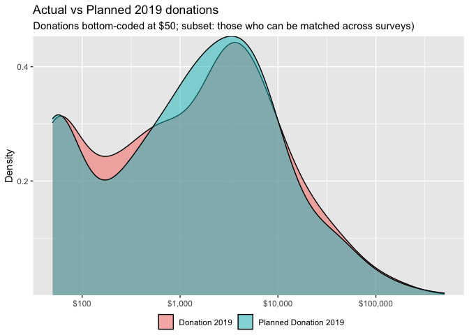
Reassuringly, these distributions largely overlap. We separate the above graph by whether the individual made a GWWC pledge:
(
planned_actual_gwwc <- planned_actual_2019_l %>%
rowwise() %>%
mutate(value = max(value, 50)) %>%
ungroup() %>%
filter(!is.na(action_gwwc)) %>%
mutate(action_gwwc = as.factor( if_else(action_gwwc == 1, "GWWC Pledge", "No GWWC Pledge") ) )%>%
# mutate(value = value + 1) %>%
ggplot() + geom_density(aes(x = value, fill = donation_type), alpha = 0.5)
+ scale_x_log10(labels = scales::label_number_si(prefix = "$"))
+ ggtitle("Actual vs Planned 2019 donations by 'made GWWC pledge'", subtitle="Linked individuals, log scale") +
xlab("Donation value, bottom-coded at $50") +
ylab("Density") + facet_grid(action_gwwc ~ . ) +
scale_fill_discrete(name = "",
labels = to_title_case(unique(planned_actual_2019_l$donation_type)))
)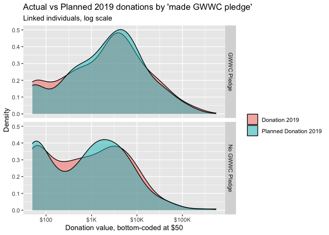
#TODO (\@oska) -- maybe do this specifically for a year in which there is a large gap in timing -- perhaps 2018 is the best as it was <ay (1/2 the year) and we think it's a reliable data year
#TODO: Med-high -- test for difference in planned and actual (a 'shift') and ideally test for a difference in difference between GWWC and non-GWWCThe above graphs do not suggest large differences in these distributions.*
However, ‘visual inspection’ risks reading patterns into noise, and vice-versa; this speaks for formal statistical testing. In future modeling we may also wish to consider whether this could also reflect ‘regression to the mean’; those who report planning an unusually high (low) amount may tend to actually donate a more typical amount, i.e., a lower (higher) amount.
We ran a series of simulation-based ‘permutation tests’ to consider compare the medians and means of the distributions of planned and actual donations for these linked individuals. Results are included in the table “Actual minus planned donations for 2019, linked participants (2019-20)” in the section Planned vs. actual: All respondents. These tests are inconclusive (not statistically significant, with wide confidence intervals),
However, note that we are currently considering these distributions rather than the individual differences for linked individuals’; we present the latter in the next subsection.
Donations versus plans (same individuals, linked)
While the graphs and figures above help us understand whether the distribution of planned and actual gifts differ, it does not tell us whether any individual’s donation meets or exceeds his or her plan. As we are considering individuals present in both surveys, we can connect their donation responses across years.
The graph below shows the distribution over the difference in planned and actual 2019 donations for those matched across the years. Here a negative value corresponds to an actual donation being lower than planned.
#TODO [Medium-High] -- incorporate it in so it will work for split plots, for 'same year', etc.
m_dd <- planned_actual_2019 %>%
transmute(don_diff = donation_2019 - planned_donation_2019) %>%
ungroup() %>%
dplyr::summarize(mn_dd=mean(don_diff, na.rm=TRUE),
med_dd = median(don_diff, na.rm=TRUE)
)
(
actual_planned_2019 <- planned_actual_2019 %>%
mutate(don_diff = donation_2019 - planned_donation_2019) %>%
ggplot(aes(x = don_diff)) +
geom_density(alpha=0.5,
fill="blue") +
scale_x_continuous(trans = pseudo_log_trans(base=10),
breaks = c((-1)*breaks*2, breaks*2),
labels = label_number_si(prefix = "$")) +
geom_vline(xintercept=m_dd$mn_dd, size=1.5, color="green") + # this code is lame, we can improve it
geom_vline(xintercept=m_dd$med_dd, size=1.5, color="red") + # this code is lame, we can improve it
geom_vline(xintercept=0) +
# coord_flip() +
labs(title = "2019 donations: actual minus planned",
caption = "Red line: Median, Green line: Mean" ) +
xlab("Actual - planned for same year") +
ylab("")
)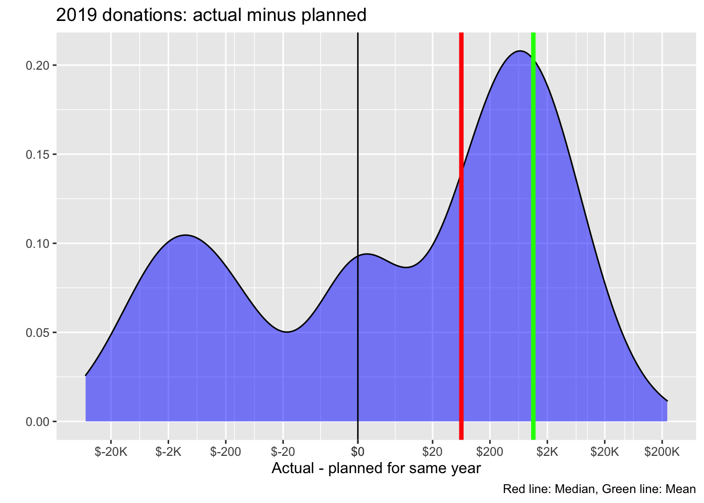
# TODO: keep improving this guyPlanned and actual donations are highly correlated (\(\rho =\) 0.948).
While substantial shares report substantially less or more than their plan, this more or less balances out; with some tendency towards donating more than planned. In fact, the mean difference between donation and plan is 1,141 USD in excess of plan (the green line), while the median of the differences is 63.5 USD.
Considering that the zeroes might have been quick and uncareful mis-responses, we repeat the same plot for those who report positive planned and actual donations in the consecutive years, and we also compare these for GWWC pledgers versus non-pledgers:
(
actual_planned_2019 <- planned_actual_2019 %>%
mutate(don_diff = donation_2019 - planned_donation_2019) %>%
ggplot(aes(x = don_diff)) +
geom_density(alpha=0.5,
fill="blue") +
scale_x_continuous(trans = pseudo_log_trans(base=10),
breaks = c((-1)*breaks*2, breaks*2),
labels = label_number_si(prefix = "$")) +
geom_vline(xintercept=m_dd$mn_dd, size=1.5, color="green") + # this code is lame, we can improve it
geom_vline(xintercept=m_dd$med_dd, size=1.5, color="red") + # this code is lame, we can improve it
geom_vline(xintercept=0) +
# coord_flip() +
labs(title = "2019 donations: actual minus planned",
caption = "Red line: Median, Green line: Mean" ) +
xlab("Actual - planned for same year") +
ylab("")
)
(
actual_planned_2019_no_0_bygwwc <- planned_actual_2019 %>%
filter(!is.na(action_gwwc)) %>%
filter(donation_2019>0 & planned_donation_2019>0) %>%
mutate(don_diff = donation_2019 - planned_donation_2019 )
%>%
ggplot(aes(x = don_diff, y = as.factor(action_gwwc), fill = factor(stat(quantile)))) +
stat_density_ridges(
geom = "density_ridges_gradient",
calc_ecdf = TRUE,
quantiles = 4, quantile_lines = TRUE
) +
scale_fill_viridis_d(name = "Quartiles") +
scale_x_continuous(trans = pseudo_log_trans(base=10),
breaks = c((-1)*breaks*2, breaks*2),
labels = label_number_si(prefix = "$")) +
geom_vline(xintercept=0) +
ggtitle("2019 donations (no zeroes): actual minus planned, by GWWC-pledge") +
xlab("") +
ylab("")
)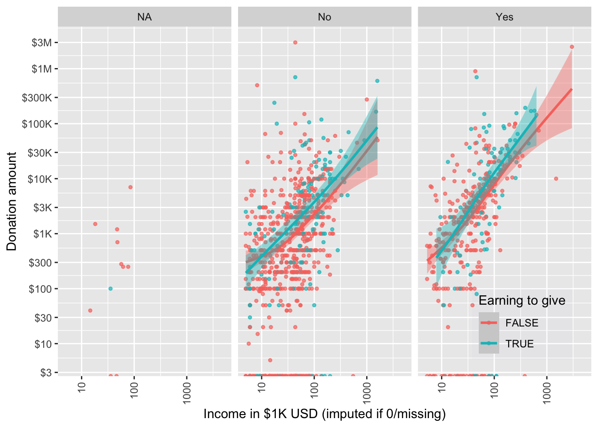
The results are similar – substantial shares outperformed their plans, and substantial shares underperformed, but the positives seem to outweigh the negatives. For both GWWC and non-GWWC pledgers the median donation exceeds the plan (by around 200 USD).
We do not see striking differences between the GWWC pledgers and non-pledgers by this measure.*
* Although the plot loosely suggests that the distribution for GWWC pledgers is shifted slightly to the right as for non-pledgers, the shift appears small. We do not pursue further testing here for several reasons. 1. There are many other differences between these groups. 2. The cross-survey tracked sample is a small share of the total sample. 3. As seen earlier, the base distribution of the levels of donations (planned or actual) differs between GWWC and non-GWWC; thus there is no single measure of ‘which group comes closer to their plan on average.’
We next present a scatterplot of planned versus actual donations for 2019, for those who can be matched across surveys. In the figure below, the brightness of a color indicates the density of respondents (number of ‘neighbors’) with a particular combination of planned and actual donations, and the width of the dots indicates the level of income.
planned_actual_2019_pointdensity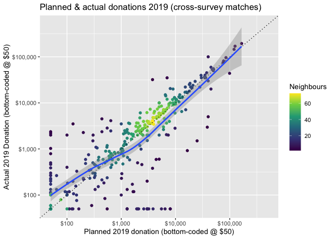
Overall, the plot is more or less centered around the 45 degree line of ‘plans=actual.’ There are noticeable departures in each direction, but these seem to balance out. Thus, we might loosely conclude that ‘on average 440 individuals who can be matched across years tend to donate an amount close to what they planned.’ However, there may nonetheless be important differences, so we test further.
We perform a Wilcoxon signed-rank test (paired data) to compare planned versus actual donations for these individuals; this test is depicted along with the ‘violin’ density plots below. The dashed lines show an individual’s donation connected to her plan.
(
matched_dons_wilcoxon <- planned_actual_2019_l %>%
mutate(donation_type = to_title_case(donation_type)) %>%
ggstatsplot::ggwithinstats(
x = donation_type,
y = value,
type = "nonparametric",
paired = TRUE) +
do.call(scale_y_continuous, scales) +
xlab("") + ylab("") +
scale_fill_discrete(name = "")
)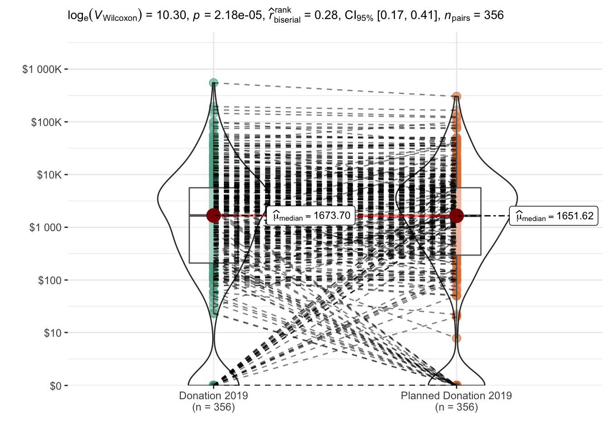
w_signed_test_planned_actual <- wilcox.test(x = planned_actual_2019$donation_2019, y = planned_actual_2019$planned_donation_2019,
alternative = c("greater"),
mu = 0, paired = TRUE, exact = NULL, correct = TRUE,
conf.int = TRUE, conf.level = 0.95,
tol.root = 1e-4, digits.rank = Inf)
#a Wilcoxon signed rank test of the null that the distribution of ... x - y (in the paired two sample case) is symmetric about mu is performed.
#Here the CI estimates 'the median of the difference between a sample from x and a sample from y.'The nonparametric tests reported above find a statistically significant difference: actual donations tend to exceed planned donations in this sample, and this difference is unlikely to be due to chance. The ‘pseudo-median’ of this difference is estimated as 278 USD with 95% lower CI bound 159. The “matched-pairs rank-biserial correlation” is also bounded between about 0.17 and 0.41, suggesting that “actual donation exceeds planned donation” is more likely than “planned exceeds actual” (in the population that this is drawn from).
The results are similar if we focus on the subset of these who report a donation in both years (see bookdown robustness appendix).
planned_actual_2019_no_0 <- planned_actual_2019 %>%
filter(donation_2019>0 & planned_donation_2019>0)
w_signed_test_planned_actual_no0s <- wilcox.test(x = planned_actual_2019$donation_2019, y = planned_actual_2019$planned_donation_2019,
alternative = c("greater"),
mu = 0, paired = TRUE, exact = NULL, correct = TRUE,
conf.int = TRUE, conf.level = 0.95,
tol.root = 1e-4, digits.rank = Inf)
#a Wilcoxon signed rank test of the null that the distribution of ... x - y (in the paired two sample case) is symmetric about mu is performed.
#Here the CI estimates 'the median of the difference between a sample from x and a sample from y.'We also present simulation-based tests for whether the mean and median of the individual ‘actual minus planned’ donations exceeds or falls below zero. These are given in the table below.
planned_v_actual_test_table| Statistic | Point estimate | CI Lower | CI Upper | P-value |
|---|---|---|---|---|
| Mean | 1591 | -332 | 3513.524 | 0 |
| Median | 141 | 26 | 255.495 | 0 |
linked_ddmn <- linked_tests_results %>% filter(response=="don_diff" & stat=="mean")
linked_ddmed <- linked_tests_results %>% filter(response=="don_diff" & stat=="median")The mean of ‘actual minus planned’ donations is 1,591 USD, with simulation-based (bootstrapped) confidence intervals [-332, 3,514], with corresponding p-value 0.158. For the median of this difference we have point estimate 140.67 USD, with simulation-based (bootstrapped) confidence intervals [25.8, 255], with corresponding p-value 0.08. Thus, the evidence points towards ‘actual donations exceeding planned donations for those EAs who can be linked across 2019-20.’ However, (unlike in the Wilcoxon signed-rank tests) the differences are not strongly statistically significant in these simulation-based tests.
Planned vs. actual: All respondents (across relevant years)
Those who responded to both 2019 and 2020 surveys (and left emails both times) might tend to be the more engaged EAs. In particular, having fulfilled one’s planned donation might make one more likely to want to complete the follow-up survey, and perhaps more keen to provide one’s donation data in particular. This suggest the above figures may be biased towards more ‘fulfilled plans.’
Thus, we next overlay the planned and actual donations for all respondents across both surveys. Here we compare the ‘amounts planned for the year of a survey’ to the ‘amounts reported for the previous year, in the following year’s survey.’ We do this separately for each available year.
While this offers us a larger sample, and may be less vulnerable to the bias just-mentioned, it brings up other sample selection issues, and these comparisons should also be treated with some caution (discussion in fold).
Indeed, ‘2019 respondents who entered a planned donation amount’ (call these ‘2019-planners’) may not be precisely representative of the population of interest. Still, we might at least seek an ‘internally-valid’ measure of the ‘distribution of actual 2019 donations for the 2019-planners,’ and compare their actual to their planned 2019 donations. This will still be imperfect: the composition of the 2019 and 2020 respondents may differ, as discussed elsewhere.
Thus, the distribution of ‘reported 2019 donations for those who completed the survey in 2020’ (call these ‘2020-reporters’) may be different from the distribution of the actual 2019 donations made by 2019-planners. The direction and nature of this bias is unclear; we might get some hints at this by comparing the reported donations in 2018 and 2019 respectively by 2019-reporters and 2020-reporters. If the distribution of donations changes little from year to year, we might worry less about this bias. We defer this for future work.
Below, we also report these measures for those who joined EA only before 2019 (plausibly a more stable group).scales_set <- list(scale_y_discrete(expand = c(0,0)),
scale_x_continuous(limits = c(50, max_lim),
trans = scales::pseudo_log_trans(base=10),
breaks = breaks,
expand = c(0,0),
labels = scales::dollar_format())
)
ridge_bottom_opts <- list(
theme(legend.position = "bottom",
legend.margin=margin(t = -0.6, unit='cm')),
ylab(""),
scale_fill_discrete(""))
(
dons_planned_across_all <- eas_all %>%
f_don_plan_by_year %>%
ggplot(aes(x = value, y = as.factor(year), fill = donation_type)) +
geom_density_ridges(alpha=.6,
color = "black",
quantile_fun = median,
quantile_lines = TRUE,
rel_min_height = 0.005) +
# geom_vline_med(x) +
scales_set +
ridge_bottom_opts +
xlab("") +
guides(fill = guide_legend(override.aes = list(linetype = 0))) +
labs(title= "Density of planned and actual donations for each year", subtitle = "Vertical lines: medians for the year and donation type",
caption = "Donations bottom-coded at $50")
)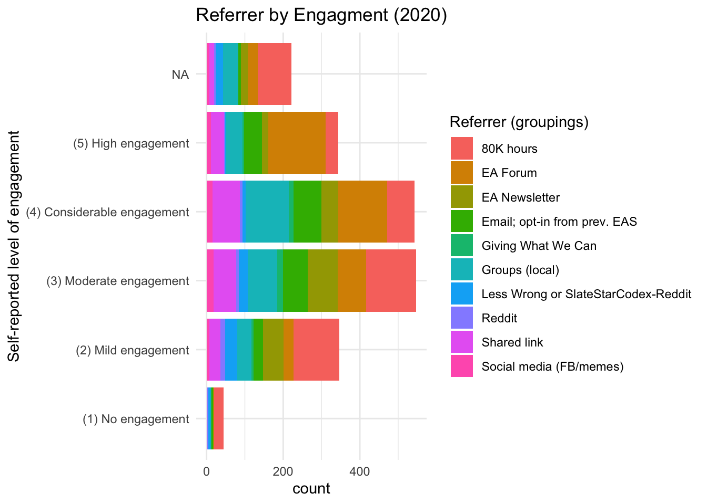
For 2019 (2020 survey ‘actual’ and 2019 survey ‘planned’) and 2018 (2019 survey ‘actual’ and 2018 survey ‘planned’), the histograms of planned and actual donations line up approximately (although planned donations tend to be a bit higher). However, for 2017 (2018 survey ‘actual’ and 2017 survey ‘planned’), the planned donation distribution appears far lower. This seems likely to result from a different response and a different composition between the 2017 and 2018 responses.*
There was a increase in the sample size and the response rate to the donation questions from 2017 to 2018 below. We report this in the bookdown ‘robustness’ appendix.
Note that the number of EA survey respondents also declined in 2020, from 2,513 to 2,056. If the EA survey tends to select only the more engaged EAs, this would suggest that the extent 2019 donations under-performed plans may be even higher.
(Thus we will not include 2017 in our “planned versus actual” comparisons.)
As noted, for the remaining relevant donation years (2018 and 2019) the median donation is somewhat lower than the median planned donation, suggesting under-performance relative to plans. We investigate this further below.
Over 2018-19, how does the distributions of planned versus actual donations differ?*
In spite of the caveats above, we consider and test whether the distribution of planned donations for a year exceeds or falls short of actual donations, pooling the 2018-2019 and 2019-2020 data (to consider donations vs plans in 2018 and 2019).
We do this separately both
overall, and
excluding those who joined EA only before 2019 (plausibly a more stable group).
#TODO -- medium-high priority: some depiction of quantiles/cutoffs within each smoothed histogram (for all the ones below, even the faceted ones). See, e.g., https://stackoverflow.com/questions/57563692/combining-facet-wrap-and-95-area-of-density-plots-using-ggplot2/57566951#57566951
dons_plan_hist_opts <- function(df) {
df %>%
ggplot(aes(x = value, fill = donation_type)) +
geom_density(alpha=.35) +
scales_set +
#geom_vline_med(x) +
ridge_bottom_opts +
xlab("")
}
#crappy workaround here:
x <- eas_all %>%
filter(year %in% c(2018, 2019, 2020)) %>% f_don_plan_by_year
xo <- eas_all %>% filter(year_involved<2019) %>% filter(year %in% c(2018, 2019, 2020)) %>% f_don_plan_by_year
x_med_don <- median(x$value[x$donation_type== "Donation"], na.rm=TRUE)
x_med_don_plan <- median(x$value[x$donation_type== "Planned Donation"], na.rm=TRUE)
xo_med_don <- median(x$value[xo$donation_type== "Donation"], na.rm=TRUE)
xo_med_don_plan <- median(xo$value[x$donation_type== "Planned Donation"], na.rm=TRUE)
dons_planned_18_20 <- eas_all %>%
filter(year %in% c(2018, 2019, 2020)) %>%
f_don_plan_by_year %>%
rowwise() %>%
mutate(value = max(value, 50)) %>%
ungroup() %>%
dons_plan_hist_opts +
geom_vline(xintercept=x_med_don, size=.5, color="green") +
geom_vline(xintercept=x_med_don_plan, size=.75, color="pink") +
ggtitle("2018-19")
dons_planned_18_20_no_new <- eas_all %>%
filter(year_involved<2019) %>%
filter(year %in% c(2018, 2019, 2020)) %>%
f_don_plan_by_year %>%
dons_plan_hist_opts +
geom_vline(xintercept=xo_med_don, size=.5, color="green") +
geom_vline(xintercept=xo_med_don_plan, size=.75, color="pink") +
ggtitle("2018-19")
(
dons_planned_18_20_arr_new <- ggarrange(dons_planned_18_20, dons_planned_18_20_no_new,
ncol = 2, nrow=1,
labels=c("All", "Involved pre-2019"),
label.x=0.0,
label.y=0.85,
legend="bottom",
common.legend=TRUE ) +
labs(title= "Density of planned and actual donations, split by year-invo", subtitle = "Vertical lines: medians for the group and donation type",
caption = "Donations bottom-coded at $50")
)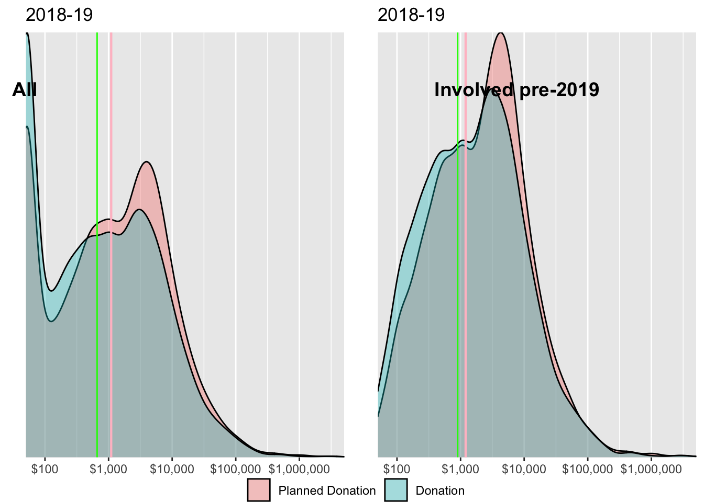
#todo (@oska) -- finish this; separate aligned plots for
# - is it doing what I think? I think we want to use 2020 for the sums in 'actual' but not in 'planned'
# - align the above, fix labels
# - report some more stats within each as 'bars' or shading (geom lines could also be good)
# - stat tests for eachAgain, for both groups (where the survey entries are linked) the planned donation distribution appears to be somewhat higher than the actual distribution, although the difference is not dramatic.
We present the results of simulation-based permutation tests below. (Explanation in fold).
We use permutation tests for testing whether the median (and mean) of planned donations exceeded/fell short of the mean for actual donations, but using the data from different years’ surveys (without connected individuals).
The null hypothesis (for 2019 donations) is that:
‘there is no difference in the median donation, in our survey sample, between actual 2019 donations (reported in 2020) and planned 2019 donations (reported in 2019).’
Suppose we maintain the hypothesis that
‘individuals appeared in the 2019 survey versus the 2020 survey ‘as if randomly drawn’’,
and we consider that under the null hypothesis “the distribution of planned and actual donations is identical” (this may be a stronger assumption than needed).
The permutation procedure repeatedly simulates a distribution of planned and actual donations that is consistent with this null, by using our original donation amount data and randomly re-assigning each observation to either ‘planned’ or ‘actual.’ For each ‘simulated null distribution’ we can then compute the targeted statistic (difference between mean/median donation between the two groups). We can plot this ‘simulated nll distribution of differences’ and consider ‘how often do we observe a difference as extreme as the ’point estimate’ from our actual data’? This yields the p-values reported below.
The confidence intervals for the differences come from simply using the 95% interval range from the simulated distribution, shifted to be centered around our point estimate.
The figure below presents the simulated null distribution of differences in medians arising from this procedure, for the full sample (2018-19 donation years).
Graph to to be incorporated … like this one
{kind=link}
The red line gives the point estimate of ‘differences in median between planned and actual’ from our data. The grey bins present the ‘(simulated) distribution of differences between planned and actual, under the null hypothesis that planned and actual are drawn from the same distribution.’
The ‘pink areas’ depict the area of the simulated null distribution that is ‘more extreme’ than our point estimate; this iis the area represented by the ‘p-value’ of a two-tailed hypothesis test.
Finally the turquoise should represent a 95% CI for the actual median; essentially this comes from a simulated distribution under the hypothesis that the true difference between the medians is exactly equal to our point estimate.
Note that this turquoise region just crosses the 0, again confirming that we ‘just barely cannot reject the null,’ but that a Bayesian analysis would probably put a lot of probability mass on fairly substantial differences.
In the table below we summarize the results of this test for means and medians, and for four distinct subsamples.
planned_actual_unlinked_results_table| Sample | Statistic | Point estimate | CI Lower | CI Upper | P-value |
|---|---|---|---|---|---|
| Full sample (2018-19 donation years) | Difference in Mean | -2352 | -6995 | 2292 | 0.318 |
| Full sample (2018-19 donation years) | Difference in Median | -458 | -609 | -308 | 0.000 |
| Involved before 2019 (2018-19 don) | Difference in Mean | -1293 | -6783 | 4197 | 0.664 |
| Involved before 2019 (2018-19 don) | Difference in Median | -188 | -372 | -4 | 0.004 |
| GwwC only (2018-19 don) | Difference in Mean | -238 | -10970 | 10495 | 0.954 |
| GwwC only (2018-19 don) | Difference in Median | -1031 | -1467 | -594 | 0.000 |
| ‘Matched individuals’ | Difference in Mean | 1452 | -2656 | 5559 | 0.514 |
| ‘Matched individuals’ | Difference in Median | 91 | -795 | 976 | 0.838 |
# report on
#test_rep_mean_don_19_20
#test_rep_med_don_19_20
#test_rep_mean_don_19_20_gwwc
#test_rep_med_don_19_20_gwwc
#test_rep_mean_don_19_20_nonew
#test_rep_med_don_19_20_nonewFor the full sample, for the subset who have been in EA since before 2019, and for GWWC pledgers, both the mean and median donations fall short of the planned donations. Overall, the difference in medians is bounded between about 300 and 600 USD. Each of these differences (for the medians) are strongly statistically significant. Perhaps because of the large outliers, the differences in means are much more widely bounded, and thus this comparison is largely uninformative.
This contrasts with our results for individuals that can be matched across 2019 and 2020 surveys, for whom actual donations tend to exceed the reported plans in the prior year.* As noted earlier, this contrast might be because people who have met or exceeded their donation plans are more likely to respond to surveys in subsequent years, and report donations in each.
*As discussed earlier, for the ‘matched individuals’ (those who can be linked from 2019 and 2020 surveys) the mean and median of the distribution of actual donations exceeds that of planned, but these differences are not statistical significant in the permutation tests. However, for the matched individuals, these differences are positive and significant (or close to significant) in tests that take advantage of the linked nature of this data and look at the individual differences themselves.
Given these contrasting findings, further work might be warranted. If donations do tend to underperform plans, we might look for patterns of underperformance that might suggest ways of improving this.
1.8 Donations versus next year’s plans
As noted, we can only match a subset of individuals across years. However, in each of the years where it was asked, most respondents who answered the retrospective donation question also answered the ‘planned for this year’ question. We can see how these tend to relate; we may particularly consider whether 2020 donations are expected to be higher or lower than 2019, in light of the pandemic (cf the Giving Tuesday report suggesting growth in overall US charitable giving in 2020). Below we overlay the distribution of ‘last year’s donations’ and ‘planned current year’ donations for 2018-2020 surveys.
next_don_lab <- c(donation_usd = "Don: Last year", donation_plan_usd = "Don: This year (plan)")
(
dons_v_next_18_20 <- eas_all %>%
f_don_18_20 %>% ggplot(aes(x = value, y = as.factor(year), fill = donation_type)) +
geom_density_ridges(alpha=.6,
color = "black",
quantile_fun = median,
quantile_lines = TRUE) +
# geom_vline_med(x) +
scales_set +
ridge_bottom_opts +
guides(fill = guide_legend(override.aes = list(linetype = 0))) +
labs(title= "Density of last year vs current year planned donations", subtitle = "Vertical lines: medians for the year and type of report") +
scale_color_brewer(labels=next_don_lab) +
scale_fill_brewer(labels=next_don_lab) +
xlab("") +
theme(legend.title=element_blank()) +
guides(fill = guide_legend(reverse = TRUE))
)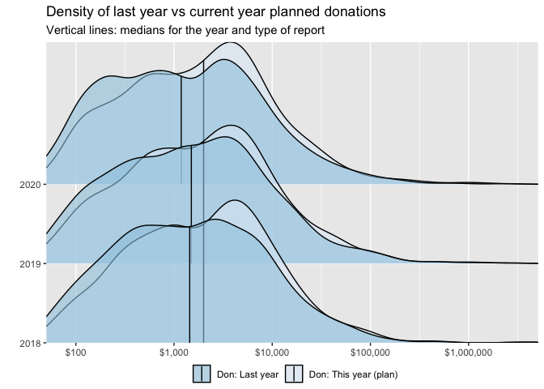
#dons_plan_hist_opts +
# facet_wrap(~factor(year, levels=c('2018','2019','2020')), nrow=3, ncol = 1)
#)
# Todo - medium: It's still not clear what is going on from year to year... maybe try animated?
# Todo -- medium/high: get bars or color separation for quantiles (probability mass) within each histogram
#p_load("")
#devtools::install_github('thomasp85/gganimate')
#devtools::install_github('thomasp85/transformr')
#dons_v_next_18_20_anim <- dons_v_next_18_20 + transition_states(year, state_length = 3) + ggtitle("Donations and plans: {closest_state}")In each year, the median of planned donations exceeds that of actual donations. The distribution of each of these appears fairly constant across years, with no obvious substantial drop for 2020.
Next we plot this in two dimensions: for each individual we plot their planned current year’s donation against their reported donation for the year prior to the survey.
current_planned_eas <- eas_all %>%
select(ea_id, donation_usd, donation_plan_usd, year) %>%
# Add demographic information -- cut because it was crap
#left_join(., select(eas_20_cy, all_of(demographics), ea_id, action_gwwc, start_date, end_date, income_c), by = "ea_id") %>% #remove likely duplicate entries (do that elsewhere too?) ; this also removes entries from years without any responses to these I guess
distinct()(
current_planned_pointdensity <- current_planned_eas %>%
# ggplot(aes(y = donation_2019, x = planned_donation_2019)) +
filter(year>=2018) %>%
rowwise() %>%
mutate(donation_usd = max(50, donation_usd),
donation_plan_usd = max(50, donation_plan_usd)) %>%
ungroup() %>%
ggplot(aes(x = donation_usd, y = donation_plan_usd)) +
geom_pointdensity() +
geom_smooth() +
do.call(scale_x_continuous, scales_point_density_min50) +
do.call(scale_y_continuous, scales_point_density_min50) +
scale_color_viridis_c("Neighbours") +
#scale_size_continuous("Income", labels = scales::label_number_si()) +
ylab("Planned (next year's) Donation") +
xlab("Actual (this year's) donation") +
labs(title= "Last year's donation vs this year's (planned) donation",
subtitle = "2018-2020; donations 'bottom-coded' at 50 USD")
)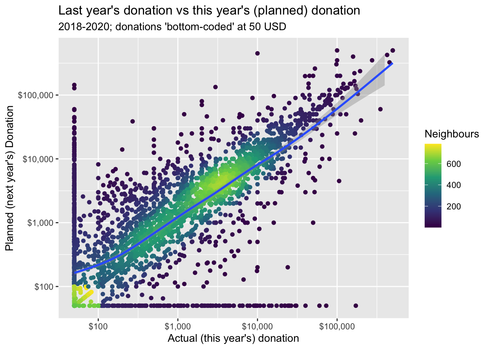
#TODO: --medium importance -- facet or animate this across years'The graph’s implications are not obvious. There is a large mass exactly along the 45 degree line, where the donation amount planned for the current year equals the amount reported for last year. There seems to be some substantial mass where planned donations exceed actual donations (above the 45 degree line), the smoothed curve is largely positioned at or below this line, perhaps because of the very small and zero entries for planned donations.
We repeat the above plot but only for those who report positive values for both ‘the previous year’ and for ‘planned for this year’:
(
current_planned_pointdensity_no0 <- current_planned_eas %>%
# ggplot(aes(y = donation_2019, x = planned_donation_2019)) +
filter(donation_usd >0 & donation_plan_usd>0) %>%
filter(year>=2018) %>%
rowwise() %>%
mutate(donation_usd = max(50, donation_usd),
donation_plan_usd = max(50, donation_plan_usd)) %>%
ungroup() %>%
ggplot(aes(x = donation_usd, y = donation_plan_usd)) +
geom_pointdensity() +
geom_smooth() +
do.call(scale_x_continuous, scales_point_density_min50) +
do.call(scale_y_continuous, scales_point_density_min50) +
scale_color_viridis_c("Neighbours") +
#scale_size_continuous("Income", labels = scales::label_number_si()) +
ylab("Planned (next year's) Donation") +
xlab("Actual (this year's) donation") +
labs(title= "Last year's vs this year's (planned) donation", subtitle = "For EAs reporting a positive amount for each",
caption="2018-20, donations 'bottom-coded' at 50 USD" )
)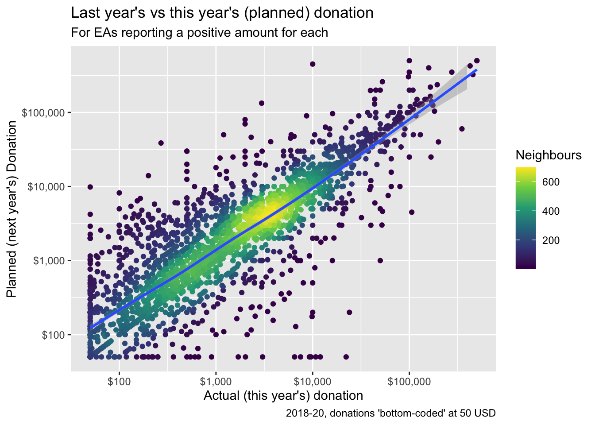
#TODO: --medium importance -- facet or animate this across years'As in previous sections, we conduct replication-based tests. Here we can separately consider both (i) the (unpaired) differences in the medians and means of distributions and (ii) the medians and means of the differences themselves.
First, considering the differences in these distributions:
next_current_unlinked_results_table| Sample | Statistic | Point estimate | CI Lower | CI Upper | P-value |
|---|---|---|---|---|---|
| 2018-2020, all responses | Difference in Mean | 1631.5 | -2564.883 | 5827.9 | 0.5 |
| 2018-2020, all responses | Difference in Median | 440.0 | 305.447 | 574.6 | 0.0 |
The mean of the discussion of next-years’ planned donations is higher than current, but we cannot statistically reject equality. However, the median is statistically significantly higher (by 440 USD point estimate).
Next, considering the differences by individual:
current_next_test_table| Statistic | Point estimate | CI Lower | CI Upper | P-value |
|---|---|---|---|---|
| Mean | 1451 | 323 | 2578 | 0.004 |
| Median | 0 | 0 | 0 | 1.000 |
The median difference is clearly 0 – the great middle mass of participants report the same donation planned for the current year as for the previous one, and this is the case in all resampling simulations. However, the mean difference is strongly and significantly positive: if we consider the magnitude of the differences, people tend to report a greater planned donation for this year than they reported last year. However, this does not necessarily indicate over-optimism and underperformance: it is possible that the individuals responding to individual survey in this period in fact did and do increase their donations from year to year.
1.9 Model of EA donation behavior
Modeling ‘questions’ and approaches:
As discussed in other posts and linked material, we broadly imagine three categories of modeling:
Descriptive (‘what relates to donation behavior’),
Predictive (‘what will people with particular characteristics donate in the future’), and
Causal (‘what factors actually determine the amount donated’; so if we changed these factors, donations would change). (See discussion in the fold.)
- Descriptive modeling: Essentially, offering a “dimension reduction” of the data, presenting ‘which features relate to donation behavior?’
- Predictive modeling: Training a model to produce the best out-of-sample (or out-of-time) fit for current (or future) donations based on individual characteristics. This model should not include ‘leaks,’ i.e., it should excluding individual characteristics and outcomes that occur after the time we would be ‘doing the prediction.’
- Causal: Consider identification of ‘causal paths,’ i.e., ‘what actually determines amounts donated.’
However causal inference requires strong assumptions and/or exogenous and random shifts in potential determinants of donation behavior. We don’t have any obvious candidates for this in the current setting. At best, we can interpret our descriptive and predictive models as suggestive of causal relationships.
We may care about causality
because we see potential to intervene and boost those variables that cause greater giving, and/or because
a better understanding of what actually drives donation behavior may yield additional insights, helping us understand the world better.
However, we see little potential for very credible and convincing causal inference here.*
* Consider factors of potential interest, including those we could influence as a movement (e.g., ‘recommended career paths’) and those of fundamental interest (perhaps income, age or initial cause prioritization). Simply looking at differences in donation by these measures will not tell us their actual impact on donation; nor will a ‘controlled regression’: each of these are likely to be related to, and influenced by (observable and) unobserved components which may also drive donations.
E.g., suppose people who first went to an elite university tended to donate more. This would not this mean that attending an elite university causes greater donations. Individuals who attend elite university may have greater exposure to EA charitable appeals, or greater (unobserved wealth) or lifetime income, which may independently cause greater giving. Even age cannot be given an obvious causal interpretation, given our sample selection; e.g., in any sample we look at the older people will tend to have joined EA at a younger age, and people may have been driven to join at a younger age because they were more altruistic, or because they had a stronger EA peer network, etc.
As we have no experimental or quasi-experimental variation in the factors of interest, we thus first focus on description (and less so, prediction), while informally considering ‘plausible causation.’ We discuss (and implement) this in the next section.
As mentioned in the introduction, being able to predict donations could be useful for several reasons. Thus, we follow our descriptive models with “predictive models”, with different goals and approaches, including elements of machine learning (see further discussion below).
1.9.1 Descriptive (and causally-suggestive) models
The results of a regression analysis are again suggestive … that those with higher incomes and GWWC members tend to donate more than those with lower incomes or who are students. …
In this year’s post we begin with a set of pre-specified models aimed at describing and providing suggestive inference about causal factors driving donations.**
**In our descriptive modeling we do not remove ‘insignificant’ features from the model (as in stepwise regression), nor do we shrink the coefficients towards zero (as in Ridge and Lasso models). Under the assumptions classical linear model and its simple extensions the coefficients we present here would be unbiased or consistent. (However, we admit that the strong assumptions of this model, particularly those embodying exogeneity, are likely to fail in important ways in the current non-experimental setting.)
We retain those features of most direct interest (such as ‘how introduced to EA’) and/or theoretical importance (such as income),** ‘controls’ (especially time-in-EA and survey-year) that might allow us to better interpret the features of interest.
** Classical economic theory suggests that most goods are ‘normal,’ with the amount consumed increasing in income. Empirical evidence supports this for charitable giving; recent work suggests that share of income is relatively constant across the income distribution, implying that wealthier people give more in absolute terms.
As discussed in other posts ‘how people were introduced to EA’ has changed over the years. We also expect those who have been involved in EA for a longer period of time to be more engaged, and perhaps donate more (possibly due to differential attrition). Thus, it seems reasonable that in tracking the association between donation and introducer, we might want to ‘control for’ (difference out or hold constant) the differences in ‘time-in-EA’ between these groups. Still, we admit that these specifications are not based on an explicit causal model or identification strategy.
Choosing features and modeling targets
As discussed above, we construct several ‘feature sets’:
- “Key demographics, student status, and geography,” used in all models
- “Career/Economics”: (Income, employment status, top-6 university)*
- “Pledges/commitments:” Whether ever taken a ‘Giving What We Can Pledge,’ whether ‘Earning to Give’
- “Controls” for age, time-in-EA, and survey-year (used in all models)**
* “Top-6 university” refers to whether the individual lists any of the six universities (Oxford, Stanford, Harvard, CalTech, MIT, Cambridge) appearing in the top-10 of all of USNWR, QS, and THE rankings. However, university was not asked in the 2018 survey; we will check whether this has an impact on the coefficient for year 2018.
** We refer to the latter as “controls” because they aid our interpretation of other features of interest, as noted above. However, these are also of independent interest.
We focus on three key outcomes:
- Amount donated (converted to US dollars)***
***Here we focus on the average of last-year’s and next year’s donation for each individual, where both are present, and otherwise we use whichever one is present. In the presence of recall and reporting error, we expect this will improve the reliability of our estimates. The plots and figures above also suggest that planned and actual donations are closely related. We report a set of related results for the simpler donation outcome in the robustness appendix.
- Donation as a share of income****
**** Where income is missing or where income was reported as 0 we impute it based on student status and country.
- Whether donated more than 1000 USD
# Define vector for renaming terms in regression output
#"new_names'" moved to `build/labeling_eas.R'#TODO - medium -- try to move all this to build side
#We impute variables where missing and normalizing all variables to be mean-zero and to be on the same scale.
diqr <- function(x) {
(x - mean(x, na.rm=TRUE))/IQR(x, na.rm=TRUE)
}
gtmed <- function(x) {
x*(x>med(x))
}
#TODO -- HIGH importance -- why 43 missing values for donation_usd?
eas_all_s <- eas_all %>%
filter(!is.na(don_av2_yr) & year_f %in% c("2018", "2019", "2020")) %>%
mutate(
#(re) code scaling and 2-part splits for the modeling sample (2018-20, reporting donations)
age_d2sd = arm::rescale(age), #Todo (automate this with `mutate(across)` thing)
age_if_older = gtmed(age),
ln_age_if_older = gtmed(ln_age),
ln_years_involved_post_med = gtmed(ln_years_involved),
years_involved_d2sd = arm::rescale(year - as.numeric(year_involved)),
years_inv_d2sd_post_med = gtmed(years_involved_d2sd),
income_c_imp_diqr = diqr(income_c_imp),
age_d2sd_post_med = arm::rescale(age_if_older),
income_c_imp_diqr_if_richer = gtmed(income_c_imp_diqr),
ln_income_c_imp_if_richer= gtmed(ln_income_c_imp)
) %>%
rowwise() %>%
mutate(don_share_inc_imp = min(don_share_inc_imp, 1)) %>% #recode about 84 values so the range is between 0-1 for frac. logit to work
ungroup() %>%
dplyr::select(all_of(c(num_out, bin_out, controls, key_demog, feat_income_employ, feat_gwwc_etg, robust_controls)),
income_c, income_c_imp, income_c_imp_diqr, income_c_imp_diqr_if_richer, first_hear_ea_lump, years_involved, age,
contains("d2sd"), contains("iqr")) %>% #I have added first_hear_ea_lump back even though we don't use it here because we want to use it in ML; I hope it doesn't mess anything up
# years_involved included to put in sumstats
labelled::set_variable_labels(.labels = as.list(key_eas_all_labels), .strict=FALSE)
#eas_all_s_rl <- eas_all_s %>%
#filter_all(any_vars(is.na(.), negate = TRUE)) %>% #(Alt: drop all rows with any missings)
#mutate(
#re-leveling should now be done on build side only because it removes labels
#Hopefully everything above preserves levels
#where_live_cat = relevel(where_live_cat, ref="USA"),
#city_cat = relevel(city_cat, ref="Other"),
#year_f = relevel(as.factor(year_f), ref="2017"),
#student_cat = relevel(student_cat, ref="Non-student"),
#not_male_cat = relevel(not_male_cat, ref="Male")
# race_cat = relevel(race_cat, ref="Just white")
#) %>%
#gdata::drop.levels() #drops unused factor levels
#Recode missing as 0 for all dummies, as a 'NA category' for categoricals
#also for normalized variables; i.e., set missings to the mean
eas_all_s_rl <- eas_all_s %>%
mutate(across(matches("d_|not_just_white"), missing_to_zero))
eas_all_s_rl_imp <- eas_all_s_rl %>%
mutate(across(matches("d2sd|diqr"), missing_to_zero)) %>%
labelled::set_variable_labels(.labels = as.list(key_eas_all_labels), .strict=FALSE)
#TODO: (future) -- check for sensitivity to this imputation vs dropping these obs
# Write imp dataset to csv and RDS for ML/predictive modeling in donation_pred.R etc.
saveRDS(eas_all_s_rl_imp, file = here("data","edited_data","eas_all_s_rl_imp.Rdata"))
eas_all_s_rl_imp %>% write_csv(here("data", "edited_data/eas_all_s_rl_imp.csv"))count_uniq <- eas_all_s_rl %>% #counts of unique values for each feature in each year
grp_uniq(year_f)
recover_cols <- count_uniq %>% #any columns *without* unique features in each year?
select_if(~ any(.==1))%>%
names()We report summary statistics on a selection of these features and target outcomes below, limited to the subset who report a zero or positive previous or current-year donation (as in our modeling).
#don_inc_career_tab
(
don_inc_career_tab <- eas_all_s_rl_imp %>%
filter(!is.na(don_av2_yr)) %>%
mutate(`Earn-to-give` = as.factor(d_career_etg),
`GwwC` = as.factor(d_gwwc_ever_0)) %>%
ungroup() %>%
filter(year_f %in% c("2018", "2019", "2020")) %>%
dplyr::select(starts_with("don"), starts_with("d_don"), starts_with("inc"), -income_c_imp_diqr,
d_pt_employment, d_not_employed,
`Earn-to-give`, `GwwC`) %>%
dplyr::select(-starts_with("l_"), -d_don_10pct, -ends_with("d2sd"),
-matches("_if_|_post_")) %>%
.summ(title = "Donations, income, career, 2018-2020, (subset: reporting 0+ donation)",
digits = c(0,0,1,1,2,1),
labels=TRUE,
logical.labels = c("No", "Yes"),
factor.counts = FALSE)
)| Variable | N Responses | N positive | Mean | Sd | Median | 90th pct |
|---|---|---|---|---|---|---|
| Donation (USD) | 5022 | 4162 | 8986.4 | 106045.3 | 660 | 10064 |
| Don. ‘avg’ | 5065 | 4533 | 9627.6 | 103905.9 | 1000 | 12000 |
| Don./Income (imp) | 5022 | 4162 | 0.1 | 0.2 | 0.03 | 0.2 |
| Don. plan (USD) | 4876 | 4206 | 10617.9 | 107663.9 | 1100 | 13000 |
| Don. > 1k USD | 5022 | |||||
| … FALSE | 54% | |||||
| … TRUE | 46% | |||||
| Income (not imp.) | 4893 | 4523 | 83013.1 | 1314092.7 | 33916.78 | 130000 |
| Income (imp.) | 5065 | 5065 | 83299.1 | 1291531.2 | 35506.2 | 130000 |
| Employed PT | 5065 | 474 | 0.1 | 0.3 | 0 | 0 |
| Not Employed | 5065 | 261 | 0.1 | 0.2 | 0 | 0 |
| Earn-to-give | 5065 | |||||
| … 0 | 70% | |||||
| … 1 | 30% | |||||
| GWWC (ever) | 5065 | |||||
| … No/NA | 66% | |||||
| … Yes | 34% |
Above, we report donations, income, career, and GWWC pledge rates. Note that the ‘Don. ’avg.’‘, the average of the current year and planned donation, is close, but slightly above the ’Donation’ variable, and has somewhat more positive values. Note also that income imputation (where missing or stated as 0) recodes about 10% of these values, and leads to a fairly similar average income figure. Note that, perhaps unsurprisingly, the rates of self-reported ‘earning-to-give’ careers and ‘having ever made a Giving What We Can pledge’ is higher among those in this sample (those who report a donation), than in the overall EAS sample.
#TODO for future posts/time permitting: split by 'whether reported donation', test for differences
(
demog_etc_tab <- eas_all_s_rl_imp %>% ungroup() %>%
filter(year_f %in% c("2018", "2019", "2020")) %>%
droplevels() %>%
filter(!is.na(don_av2_yr)) %>%
dplyr::select(-contains("don"), -starts_with("d_don"), -starts_with("inc"), -starts_with("ln_"), -d_don_10pct, -ln_income_c_imp, -matches("d2sd|_if_|_post_")) %>%
select(-d_pt_employment, -d_not_employed, -d_career_etg, -d_gwwc_ever_0, -first_hear_ea_lump, -year_f, -years_involved, -age) %>%
select(everything()) %>%
labelled::set_variable_labels(.labels = as.list(key_eas_all_labels), .strict=FALSE) %>%
sumtable(
labels = TRUE, #uses assigned in Hmisc or sjlabelled
simple.kable = TRUE, title = "Demography etc., 2018-2020 (subset: reporting 0+ donation)",
digits = 1,
factor.counts = FALSE
)
)| Variable | N | Percent |
|---|---|---|
| Gender | 5065 | |
| … Male | 69% | |
| … Not-male | 28% | |
| … Gender: No response | 3% | |
| Student | 5065 | |
| … Non-student | 67% | |
| … Student | 33% | |
| … Student: No response | 0% | |
| Race/ethnicity | 5065 | |
| … Just white | 80% | |
| … Not just white | 18% | |
| … Race: No response | 2% | |
| Where live | 5065 | |
| … USA | 40% | |
| … Can/Aus/NZ | 13% | |
| … Country: No response | 7% | |
| … EEA not Anglo | 21% | |
| … Other | 3% | |
| … UK/IR | 16% | |
| City | 5065 | |
| … Other | 39% | |
| … City: No response | 18% | |
| … Named big city | 43% | |
| Top-6 Uni. | 5065 | |
| … No | 46% | |
| … NA | 47% | |
| … Yes | 7% |
(
year_etc_tab <- eas_all_s_rl_imp %>% ungroup() %>%
filter(year_f %in% c("2018", "2019", "2020")) %>%
droplevels() %>%
filter(!is.na(don_av2_yr)) %>%
dplyr::select(year_f, years_involved, age) %>%
labelled::set_variable_labels(.labels = as.list(key_eas_all_labels), .strict=FALSE) %>%
sumtable(
labels = TRUE, #uses assigned in Hmisc or sjlabelled
simple.kable = TRUE, title = "Year, years-involved, age; 2018-2020 (subset: reporting 0+ donation)",
digits = 1,
factor.counts = FALSE
)
)| Variable | N | Mean | Std. Dev. | Min | Pctl. 25 | Pctl. 75 | Max |
|---|---|---|---|---|---|---|---|
| Year of survey | 5065 | ||||||
| … 2018 | 38% | ||||||
| … 2019 | 34% | ||||||
| … 2020 | 28% | ||||||
| Years in EA | 4877 | 3.7 | 2.4 | 0.5 | 1.5 | 5.5 | 11.5 |
| age | 4215 | 30.1 | 9.8 | 4 | 24 | 33 | 102 |
As the table above suggests, we are modeling EA survey years 2018-2020 only, with roughly equal shares of each year (although somewhat fewer in each subsequent year). The largest (or plurality) demographic groups (as in the sample overall, see other posts) are male, non-students, of ‘white’ ethnicity, and from the US. At least 43% come from one of cities named in the EA survey (over 50% of those responding), and 13% (where we have data) have some education at a ‘top-6’ global university.
We focus on the following modeling specifications: *
* We report log-linear models in the robustness appendix.
- Proportional-effects ‘Quasi-Poisson’ model for ‘amount donated’ outcomes (allowing the expected donation to be an exponential function of the features). **
**We focus on the ‘average of planned and actual, where present, otherwise the non-missing value.’ Although this outcome variable is continuous (and this cannot strictly follow a Poisson distribution, the quasi-poisson model is still able to obtain consistent parameter estimates, provided that the conditional mean is correctly specified (Silva and Tenreyro 2006).
Fractional logit (Papke and Wooldridge (2008)) ‘donation as a share of income’
Logit regression for the binary ‘donated over 1000 USD’ outcome
Constructing models
# Define models (For LINEAR models ... used only in appendix, but some of these are reused in other models)
#-----------------------------------------------------
feat_list = list(
#better to make this a 'named list'? (TODO -- @oska would that improve the code?)
c(key_demog, feat_income_employ, controls),
c(key_demog, feat_income_employ, controls, robust_controls),
# c(key_demog, feat_income_employ, feat_fh, controls, robust_controls), #robust controls here because 'first heard' is likely entangled with tenure and age
c(key_demog, feat_income_employ, feat_gwwc_etg, controls) )
feat_list_n = list(
#better to make this a 'named list'? (TODO -- @oska would that improve the code?)
c(key_demog_n, feat_income_employ_n, controls_n),
c(key_demog_n, feat_income_employ_n, controls_n, robust_controls_n),
c(key_demog_n, feat_income_employ_n, feat_gwwc_etg, controls_n) )
feat_names = c("Baseline", "Robust controls", "Base + EtG & GWWC")
rhs_vars_list <- rep(feat_list, length(targets_short))
#rhs_vars_list_iqr <- rep(feat_list_iqr, length(targets_short))
outcome_vars_list <- rep(as.list(targets_short), each=length(feat_list))
dfs <- rep(list(eas_all_s_rl_imp), length(outcome_vars_list))## Create dataframe for modeling
linear_models <- make_model_df(rhs_vars_list, outcome_vars_list, dfs)
# Fit linear models
linear_models <- linear_models %>%
mutate(
lm_fit = fit_models(
linear_models, "formulas", "dfs", fun = fit_lm)
)
#warning `using type = "numeric" with a factor response will be ignored‘-’ not meaningful for factor`
# @DR: Why are these models being fit on binary outcomes? DR, @OM: It is fit on all the outcomes including the binary ones, no? However, we haven't reported it yet. Anyways, I think there is still a norm of considering 'linear probability models' in Economics, and arguments on its behalf, at least as a robustness check.
# Extract coefficients, fitted and residuals
model_feat_names <- rep(c(feat_names), times= length(targets_short))
model_oc_names <- rep(c(targets_short_names), each= length(feat_names))
model_names <- paste(model_oc_names, model_feat_names, sep = ": ")linear_models <- linear_models %>%
mutate(lm_coefficients = map(lm_fit,
extract_coefficients,
replacement_names = new_names,
robust_SE = TRUE),
#TODO -fix -- Medium importance (as linear is just for robustness checks...) error/warning: `'^’ not meaningful for factors`
lm_resids = map(lm_fit, residuals),
lm_fitted = map(lm_fit, fitted))
#note: in modeling_df, lm_fit and qp_fit are the 'model output' objects
# `lm_resids` are a list of vectors of residuals from each linear model
# `lm_fitted` are a list of vectors of predicted outcomes from each linear model
# Error: Problem with `mutate()` column `lm_coefficients`.
## ℹ `lm_coefficients = map(...)`.
## x only 0's may be mixed with negative subscripts#trying out some simple models just as a place to test what is going on
test_qp <- eas_all_s_rl_imp %>%
glm(don_av2_yr ~ ln_income_c_imp + ln_age + not_male_cat + student_cat + race_cat + where_live_cat + city_cat + d_pt_employment + d_not_employed + d_top6_uni + ln_years_involved + year_f, family=quasipoisson, data =.)
test_fl <- eas_all_s_rl_imp %>% glm(don_share_inc_imp ~ ln_income_c_imp + ln_age + not_male_cat + student_cat + race_cat +
where_live_cat + city_cat + d_pt_employment +
d_not_employed + d_top6_uni + ln_years_involved + year_f, family = quasibinomial('logit'), data = .)
test_logit <- eas_all_s_rl_imp %>% glm(d_don_1k ~ age_d2sd + not_male_cat + student_cat + race_cat +
where_live_cat + city_cat + income_c_imp_diqr + d_pt_employment +
d_not_employed + d_top6_uni + years_involved_d2sd + year_f,
family = binomial, data = .)qp_targets_short <- c("don_av2_yr")
qp_outcome_vars <- rep(as.list(qp_targets_short), each=length(feat_list)) # List of outcome variables for quasi-poisson
qp_rhs_vars <- rep(feat_list, length(qp_targets_short)) # List of independent variables
qp_dfs <- rep(list(eas_all_s_rl_imp), length(qp_outcome_vars)) # List of dataframes to fit models to
qp_models <- make_model_df(qp_rhs_vars, qp_outcome_vars, qp_dfs) # Create dataframe for models
# Add model names
feat_group_names <- c("1. Baseline", "2. Robust controls",
"3. Base + ETG + GWWC")
qp_model_names <- feat_group_names
qp_models <- qp_models %>%
mutate(model_name = rep(qp_model_names, length(qp_targets_short)))
# Fit quasi-poisson models
qp_models <- qp_models %>%
mutate(
qp_fit = fit_models(
qp_models, "formulas", "dfs", fun = fit_glm)
)
# Extract coefficients
## Takes a little while, consider parallels package?
qp_models_noexp <- qp_models %>%
mutate(qp_coefficients = map(qp_fit,
extract_coefficients,
replacement_names = new_names,
exponentiate = FALSE,
robust_SE = TRUE),
qp_resids = map(qp_fit, residuals),
qp_fitted = map(qp_fit, fitted))
qp_models <- qp_models %>%
mutate(qp_coefficients = map(qp_fit,
extract_coefficients,
replacement_names = new_names,
exponentiate = TRUE,
robust_SE = TRUE),
qp_resids = map(qp_fit, residuals),
qp_fitted = map(qp_fit, fitted))#Note: redone/redoing - fractional logit instead of Quasi-poisson with offset
#Discussion:
fl_targets_short <- c("don_share_inc_imp")
fl_outcome_vars <- rep(as.list(fl_targets_short), each=length(feat_list)) # List of outcome variables for quasi-poisson
fl_rhs_vars <- rep(feat_list, length(fl_targets_short)) # List of independent variables
fl_dfs <- rep(list(eas_all_s_rl_imp), length(fl_outcome_vars)) # List of dataframes to fit models to
#----------
# Function to remove a particular string from a list
#remove_str_list (moved to rstuff functions)
# Create dataframe for models
fl_models <- make_model_df(fl_rhs_vars, fl_outcome_vars, fl_dfs)
fl_models <- fl_models %>% mutate(model_name = rep(feat_group_names, length(fl_targets_short)))# Fit fractional logit models
fl_models <- fl_models %>%
mutate(
fl_fit = fit_models(
fl_models, "formulas", "dfs", fun = fit_glm,
family = quasibinomial('logit'))
)
# Extract coefficients
## Takes a little while, consider parallels package?
fl_models_noexp <- fl_models %>%
mutate(fl_coefficients = map(fl_fit,
extract_coefficients,
replacement_names = new_names,
exponentiate = FALSE,
robust_SE = TRUE),
fl_resids = map(fl_fit, residuals),
fl_fitted = map(fl_fit, fitted))
fl_models_noexp_nonrobust <- fl_models %>%
mutate(fl_coefficients = map(fl_fit,
extract_coefficients,
replacement_names = new_names,
exponentiate = FALSE,
robust_SE = FALSE),
fl_resids = map(fl_fit, residuals),
fl_fitted = map(fl_fit, fitted))
fl_models <- fl_models %>%
mutate(fl_coefficients = map(fl_fit,
extract_coefficients,
replacement_names = new_names,
exponentiate = TRUE,
robust_SE = TRUE),
fl_resids = map(fl_fit, residuals),
fl_fitted = map(fl_fit, fitted))Models (Tables and plots of results; years 2018-20 combined)
We put together forest plots of (normalized) coefficients from the distinct set of models outlined above, where these can be compared on the same scales. Specifically, we consider,
- for each of the three key outcomes (‘amount donated (averaged),’ ‘donation as a share of income,’ ‘donated over 1000 USD’),
- models with three specific sets of features, yielding nine models in total (plus robustness checks in the appendix).
The feature sets, which we will refer to in the forest plots below, are:
lab_list_to_text <- function(df) {
df %>%
var_label %>% unname %>% unlist() %>% paste(collapse = ', ')
}1. “Base” (baseline model)
Demographics: Log age, Gender, Student, Race/ethnicity, Where live, City
Career-related: Log Income (imp.), Employed PT, Not Employed, Top-6 Uni.
Controls: Years in EA (log), Year of survey
Where “imp” denotes that income is imputed where missing, “log” notes that the natural log was taken (allowing a proportional ‘elasticity’ relationship).
Note that for the Logit models we use standardizations instead of logged continuous variables.*
* We divide age and tenure by two sample standard deviations for each, following Gelman (2008). This allows the coefficients of continuous features like income to be compared to those for binary features like “whether employed.” We divide income by the sample inter-quartile range (56,125 USD). As the distribution appears highly skewed, normalizing income by 2sd would yield extremely large and hard-to-interpret coefficients.
2. “Robust controls”: Including all of the features in Base as well as a second term for each of “Years in EA (log), Log age, Log Income (imp.)” that takes a positive value only where these exceed their respective sample medians, and is otherwise set to zero. These represent ‘adjustment terms’ allowing us to see whether and how time-in-EA, age, and income may have a different relationship with donations at higher values of each of these.*
* This simple ‘two part’ specification is partially related to the DataColada discussion here.
3. “Base + ETG + GWWC”: Including all of the features in Base as well as the binary variables “GWWC (ever), EtG,” i.e., whether reported ever having taken the Giving What We Can Pledge, and whether they report their career as ‘earning-to-give.’
Note that we report models with each of the three feature sets in each of the forest plots below. However, each forest plot reports on a single outcome and a single ‘theme,’ e.g., focusing reporting just the coefficients on demographics from across each of the above three model feature sets (with some repeated coefficients across plots).
These themes are
- Demographics (including age and time-in-EA)*
- Employment/career, GWWC, EtG, Income**
- “Non-response” to particular questions (in the appendix)***
However, it is important to remember that the reported estimates in each forest plot come from models that ‘control for’ other features (as reported).
Note that we exclude the ‘two-part’ coefficients (in the ‘Robust controls’ models) from the forest plots. We present the coefficients on ‘Age, Time in EA, Income, and nonlinear adjustments for each of these’ in a separate set of tables.*
* In the ‘Robust controls’ model there are two coefficients for each of age, income and ‘time in EA’ for below-median values, and a second one representing the adjustment to this coefficient for above-median values of each of these. We leave these coefficients out of the forest plots to avoid confusion, reporting them in tables under “Age, time-in-EA, Income, year; possible nonlinearity” instead.
** We use the natural log of income in our models of donation amounts and ‘donation/income’ outcome. Here the (untransformed) coefficients have an elasticity interpretation — percent increase in donations (or donation share) for a given percentage increase in income. As this scale is not comparable to our other coefficients, we do not report it in these forest plots. We report this in tables under “Age, time-in-EA, Income; possible nonlinearity” instead.
*** To avoid clutter we present the results for nonresponse feature set in a bookdown appendix table only.
# Create variable groupings for displaying coefficients
## Can't think of a tidier way to do this...
### Check that this extracts all necessary
demog_coefs <- c("Age", "Where live:", "Student", "city", "Gender:", "white", "race")
emp_gw_etg_coefs <- c("top-6 uni", "employ", "etg", "gwwc")
#fh_coefs <- c("hear")
nr_coefs <- c("response", "NA")
nonlin_coefs <- c("income", "age", "year") #coefficients of interest not (always) reported elsewhere, allowing us to consider nonlinearity
# Filter the coefficients returned from using broom::tidy
## Keep only those specified in character vector keep
extract_coefs <- function(df, keep, term_col = term,
ignore.case = TRUE,
exclude = NULL){
# Add assertion statements in/doc string
if (ignore.case == TRUE){
keep <- tolower(keep)
}
keep <- paste(keep, collapse="|")
coef_df <- df %>% filter(str_detect(tolower({{term_col}}), keep))
if (!is.null(exclude)){
exclude <- paste(exclude, collapse="|")
coef_df <- coef_df %>% filter(!str_detect(tolower({{term_col}}), exclude))
}
return(coef_df)
}# Extract coefficients for each feature set, for making forest plots (and tables)
# forms <- list("qp", "fl", "logit")
#--> pmap (todo @oska)
qp_coefs <- qp_models %>%
select(qp_coefficients, model_name, outcome) %>%
tidyr::unnest(., cols = c(qp_coefficients))
qp_coefs_noexp <- qp_models_noexp %>%
select(qp_coefficients, model_name, outcome) %>%
tidyr::unnest(., cols = c(qp_coefficients))
fl_coefs <- fl_models %>%
select(fl_coefficients, model_name, outcome) %>%
tidyr::unnest(., cols = c(fl_coefficients))
fl_coefs_noexp <- fl_models_noexp %>%
select(fl_coefficients, model_name, outcome) %>%
tidyr::unnest(., cols = c(fl_coefficients))
fl_coefs_noexp_nonrobust <- fl_models_noexp_nonrobust %>% select(fl_coefficients, model_name, outcome) %>%
tidyr::unnest(., cols = c(fl_coefficients))
logit_coefs <- logit_models %>%
select(logit_coefficients, model_name, outcome) %>%
tidyr::unnest(., cols = c(logit_coefficients))
# feature_sets <- list("demog", "inc_emp_gw_etg", "fh", "nr")
#--> pmap2 feature_sets, forms (todo @oska) .. or maybe map across forms but not feature sets here, as we need bespoke exclusions
exclude_demog_coefs <- c("response","older", "post_med", "ln_" )
exclude_inc_coefs <- c("response", "if above", "older", "na")
#exclude_fh_coefs <- c("response", "if above", "older") #will prob need to add coefs for all the small fh categories if we put these all in
demog_coefs_qp <- extract_coefs(qp_coefs, demog_coefs, exclude = c(exclude_demog_coefs))
emp_gw_etg_coefs_qp <- extract_coefs(qp_coefs, emp_gw_etg_coefs, exclude = exclude_inc_coefs)
nr_coefs_qp <- extract_coefs(qp_coefs, nr_coefs)
nonlin_coefs_qp <- extract_coefs(qp_coefs, nonlin_coefs)
nonlin_coefs_qp_noexp <- extract_coefs(qp_coefs_noexp, nonlin_coefs)
nonlin_coefs_qp_combo <- bind_rows(nonlin_coefs_qp_noexp %>% filter(str_detect(term, "Year of")==FALSE), nonlin_coefs_qp %>% filter(str_detect(term, "Year of")==TRUE))
demog_coefs_fl <- extract_coefs(fl_coefs, demog_coefs, exclude = exclude_demog_coefs)
emp_gw_etg_coefs_fl <- extract_coefs(fl_coefs, emp_gw_etg_coefs, exclude = exclude_inc_coefs)
#TODO: doublecheck the income coefficients:
nr_coefs_fl <- extract_coefs(fl_coefs, nr_coefs)
nonlin_coefs_fl <- extract_coefs(fl_coefs, nonlin_coefs)
nonlin_coefs_fl_noexp <- extract_coefs(fl_coefs_noexp, nonlin_coefs)
nonlin_coefs_fl_noexp_nonrobust <- extract_coefs(fl_coefs_noexp_nonrobust, nonlin_coefs)
nonlin_coefs_fl_combo <- bind_rows(nonlin_coefs_fl_noexp %>% filter(str_detect(term, "Year of")==FALSE), nonlin_coefs_fl %>% filter(str_detect(term, "Year of")==TRUE))
demog_coefs_logit <- extract_coefs(logit_coefs, demog_coefs, exclude = exclude_demog_coefs)
emp_gw_etg_coefs_logit <- extract_coefs(logit_coefs, c("income", emp_gw_etg_coefs), exclude = exclude_inc_coefs)
nr_coefs_logit <- extract_coefs(logit_coefs, nr_coefs)
nonlin_coefs_logit <- extract_coefs(logit_coefs, nonlin_coefs)group_fp_do <- function(df, groups=model_name, xlims=c(NA,NA), vl=1){
df %>%
grouped_forest_plot(., groups = {{groups}}, vline = {{vl}}) +
coord_cartesian(xlim = {{xlims}}) +
scale_colour_discrete(name = "",
labels = function(x) str_wrap(x, width = 15)) +
theme_bw() +
theme(legend.position = "bottom") +
guides(fill=guide_legend(nrow=2,byrow=TRUE))
}
#TODO: Add to caption at bottom, automate, specify the exact models (or at least explain the control variables)
# Legend on top or bottom?
# Todo -- gray line in background
# add more grid lines
fp_qp_subtitle <- "Quasi-poisson: relative rates, 95% CIs (Robust SEs); colors = models"
fp_logit_subtitle <- "Logit model, proportional effects, 95% CIs; colors = models"
fp_fl_subtitle <- "Frac. Logit model, prop. effects, 95% CIs; colors = models"
fp_caption = str_wrap("Results come from three distinct models, each with different sets of features. These models and their features are fully described in the main text. All confidence intervals are heteroskedasticity-robust (White, 1980).", 120)
#todo (@oska) purr::map these too
fp_demog_coefs_qp <- demog_coefs_qp %>%
group_fp_do(vl=1) +
labs(title= "'Donation amount', demog. coefficients",
subtitle = fp_logit_subtitle,
caption = fp_caption ) +
theme(plot.caption = element_text(size = 8, hjust = 0))
fp_demog_coefs_fl <- demog_coefs_fl %>%
group_fp_do(vl=1) +
labs(title= "'Donation/income', demog. coefficients, 2018-20", subtitle = fp_fl_subtitle, caption = fp_caption) #TODO -- get me my ticks for 0.25, 0.5 etc
fp_demog_coefs_logit <- demog_coefs_logit %>%
group_fp_do(vl=1) +
labs(title= "'Donated $1000+', demog. coef., 2018-20", subtitle = fp_logit_subtitle, caption = fp_caption)
#todo (@oska) purr::map these too
fp_emp_gw_etg_coefs_qp <- emp_gw_etg_coefs_qp %>%
filter(!(str_detect(model_name, "Robust") & str_detect(term, "Income"))) %>% #Don't show income in models with nonlinear income terms
group_fp_do(vl=1) +
labs(title= "'Donation amount', career-related coefs, 2018-20", subtitle = fp_qp_subtitle,
caption = fp_caption)
#TODO -- NA STILL HERE!
fp_emp_gw_etg_coefs_fl <- emp_gw_etg_coefs_fl %>%
filter(!(str_detect(model_name, "Robust") & str_detect(term, "Income"))) %>%
group_fp_do(vl=1) +
labs(title= "'Donation as share of income', proportional model, career-related coefs", subtitle = fp_qp_subtitle, caption = fp_caption)
fp_emp_gw_etg_coefs_logit <- emp_gw_etg_coefs_logit %>%
filter(!(str_detect(model_name, "Robust") & str_detect(term, "Income"))) %>%
filter(!(str_detect(term, "NA"))) %>%
group_fp_do(vl=1, xlims=c(0,NA)) +
labs(title= "'Donated $1000+', Logit model, career-related coefs", subtitle = fp_logit_subtitle,
caption = c(fp_caption)
)
###
##TODO -- get NA out of here!Model theme: Demographics
Below, we plot the estimates and (heteroskedasticity-robust, ) 95% confidence intervals for key demographic coefficients for each of the three models. Again, we want to emphasize that each these are from models which also ‘control’ for a wide set of characteristics (e.g., income, age, and time-in-EA), as cataloged above.
We first present the results from our Quasi-Poisson model of donation amount (expressed as the average of current and planned donation in a year, or whichever is noted). This model allows effects to be “proportional,” as described and interpreted below.*
fp_demog_coefs_qp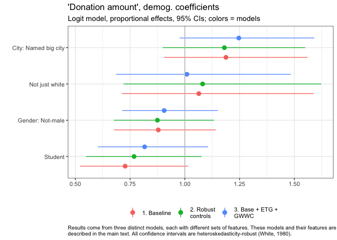
* The exponentiated coefficients presented here can be interpreted as ‘in considering average donations for each group, by what amount should we multiply this if we look at an individual with the variable ’switched on’ versus switched off’, all else equal’? For continuous variables, it expresses ’how much do we multiply this if we increase our the variable by one (normalized) measure?
In the figure above, the vertical bar at “1” represents the coefficient of “no difference in donation between these groups, all else equal.” As all of the 95% confidence intervals cross this line (for City, just barely), we cannot rule out ‘no difference’ by conventional frequentist null-hypothesis testing.
Still, the evidence suggests that (all else equal), individuals from big cities named in the EA survey donate substantially more.*
* We did not run a Bayesian analysis here. However, in our experience such approaches, under a flat prior belief, put most of the posterior probability mass within similar ranges as do the frequentist confidence intervals. This would suggest we could be fairly confident that (e.g.) those from big EA cities tend to donate more, all else equal. However, further, explicit Bayesian analysis might be merited.
Point estimates imply they donate about 18-19% more on average (considering our baseline model and our model with robust controls), or about 25% more on average, when we also adjust for earning-to-give and GWWC status.**
** However, GWWC and EtG can be seen as very closely related to the outcome we are looking for; thus, even in a descriptive sense, this coefficient is hard to interpret in model 3.
Ethnicity seems to have very little relationship to donation here, or at least we have little evidence to suggest a relationship. The coefficients on “Not just white” are close to zero, with wide 95% confidence intervals.
The gender coefficients weakly suggest that women and nonbinary people donate somewhat less, all else equal. Students seem to donate substantially less, perhaps only 70-80% as much as nonstudents. Still, in a conventional sense (95% confidence interval), we cannot rule out that any of these differences observed in our sample are due to chance, and that in fact, the differences in the relevant population are zero, or in the opposite direction. (Also, see caveats in other post about potential non-representativeness, recall bias and measurement error, etc.)
fp_demog_coefs_fl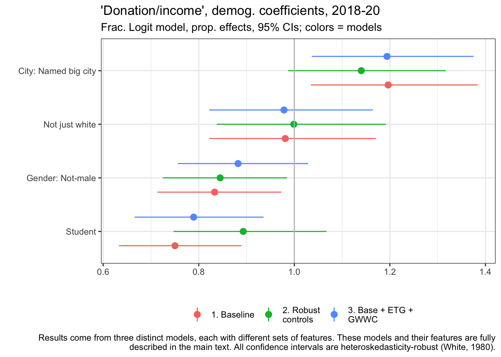
Above we plot the estimates, for the same features, for our (Fractional Logit) models of the ‘share of income donated’ (where income is imputed where 0 or missing, as explained above).*
* Here, we topcode the (relatively few) responses that report donations in excess of income to have a value of 1 (donated 100% of income.)
As in all of these plots, these are from models containing the three broad sets of features outlined above, including (the log of) reported income; thus we do not impose an exact proportional relationship between income and donations.
We find generally similar results as in the models of donation amounts, but with more 95% confidence intervals that exclude 0, suggesting ‘statistically significant’ differences.
rpct <- function(x){ (round(x, 3) -1)*100}EAs living in named cities donate a substantially higher share of their income, all else equal – roughly 19.6% more in our baseline model. Note – this doesn’t mean they donate 20 more percentage points of their income; the share of the income they donate, on average, is 20% larger.*
* E.g., if a group of non-big-city-people donated 10% of their income on average, we might expect a comparable big-city group of people to donate 12% of their income on average.
Again, we have little evidence that ethnicity is related to this outcome. Non-males seem to be donating a somewhat lower share of income, 83.3% as high a share in our baseline model. Students also seem to donate lower shares, 75% as high in our baseline model.
fp_demog_coefs_logit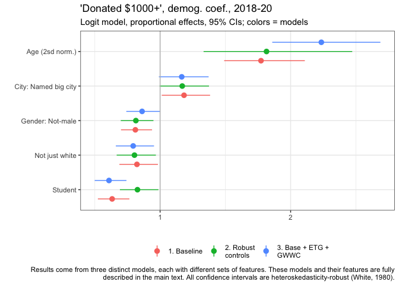
The final outcome variable is ‘whether an individual donated $1000 or more.’ Here we also present the normalized age coefficient (for the models of other outcomes present age in a later table, in elasticity terms). Age has a strong relationship with this outcome: a 2 standard deviation increase in age (about 19.6 years older) is associated with a near-doubling of the probability of donating 1000 USD or more in our model. (1.77 times as high in our baseline model.)
Again, in our baseline model…
EAs living in named big cities are more likely – roughly 17.8% more likely,
Non-males are about 80.9% as likely as males,
‘Not-just-white’ people about 82% as likely as white people,
and students 63.2% as likely as nonstudents…
…to donate at least 1000 dollars, all else equal.
As the graph shows, each of these results are similar across the three models.
Model theme: Employment/career, GwwC, EtG, (income)
Next we consider employment and career-related features.*
* We consider the relationship between income and donations and donations as a share of income in the next section. For these models we express income in natural logs, so the interpretation of the ‘raw coefficients’ are approximately income elasticities; these are not on the same scale as the standardized coefficients below.
fp_emp_gw_etg_coefs_qp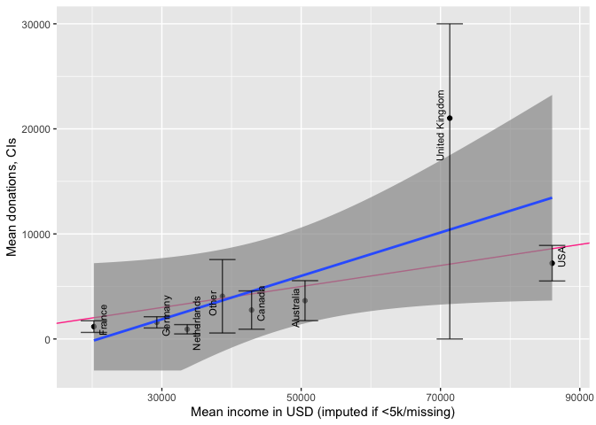
Unsurprisingly, those who report ever having taken the GWWC pledge, and those who report being in an Earning-to-Give career also report donating substantially more, all else equal. However, the magnitudes are strikingly large: they donate nearly twice as much, and over 50% more, respectively.
Those who attended global top-6 universities (defined above) also donate substantially more, about 35% more in our baseline model point estimate.
Those part-time-employed seem to donate somewhat more, all else equal, although confidence intervals are very wide. Those who are not employed tend to donate less.
fp_emp_gw_etg_coefs_fl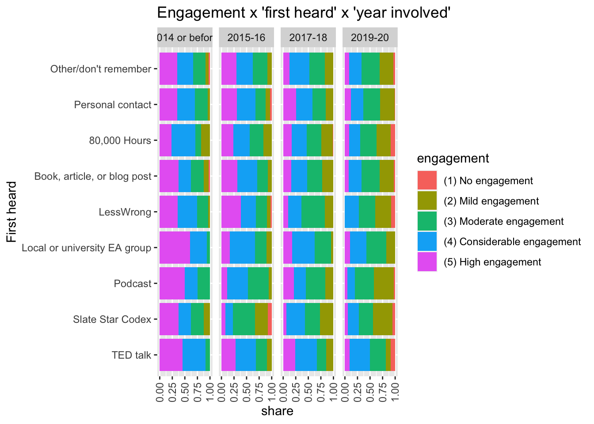
Similarly to above, those who report ever having taken the GWWC pledge, and those who report being in an Earning-to-Give career tend to donate a much larger share of income than the rest, all else equal. Specifically, over twice as large a share for GWWC, and over 50% more for EtG.
We see similar patterns as above for top-6 university and for those who are not employed. However the results for part-time employer contrast to the previous plot. While the part-time employed tend to donate somewhat more overall, they tend to donate a lower share of their income than the base group (the full-time employed), all else equal. (Again, recall that this already controls for income and other factors.)
fp_emp_gw_etg_coefs_logit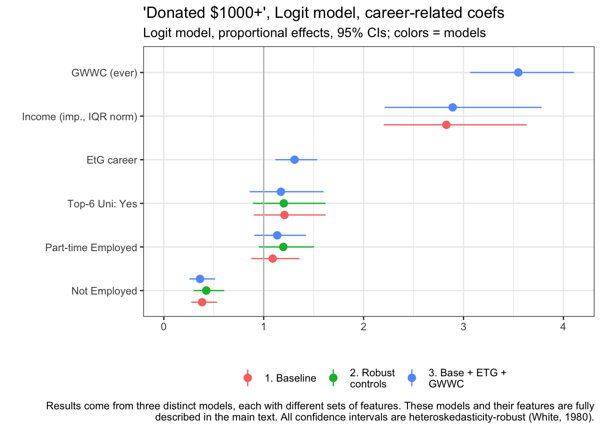
We see similar patterns for our logit models of “whether donated at least 1000 USD,” with some notable exceptions. Similarly, GWWC pledgers are much more likely to donate at least this amount. EtG people show a less dramatic difference, only being about 30.9% more likely than the base group, all else equal.
Here (for models without the 2-part controls) we also present the relationship to income (hidden in other models, presented later). Unsurprisingly, income has a strong positive association with the probability of donating 1k or more: An income that is 56125 USD greater (the 25-75 ‘interquartile range’) is associated with a 2.83 times greater probability of this.
Those from top-6 universities and the part-time employed appear slightly (but not ‘significantly’) more likely to donate 1k or more, all else equal. The not-employed are substantially less likely to donate 1k or more.
Age, time-in-EA, Income, Year; possible nonlinearity
#Making table of *raw coefficients* for logged income variables here, as these have elasticity interpretations
nonlin_tables <- bind_rows(nonlin_coefs_qp_combo, nonlin_coefs_fl_combo, nonlin_coefs_logit) %>%
select(outcome, term, model_name, estimate, std.error, p.value, conf.low, conf.high) %>%
mutate(
term = str_replace_all(term, c("ln_" = "log ", "EApost_med" = "EA (post median)")),
term = str_replace_all(term, key_eas_all_labels),
term = str_replace_all(term, c("Involved" = "in")),
term = str_replace_all(term, c("years_inv_d2spost_med" = "Years in EA (2sd norm) post-median"))
) %>%
filter(!str_detect(model_name, "GWWC")) %>%
mutate(
outcome = str_replace_all(outcome, key_eas_all_labels
)
) %>%
arrange(term) %>%
group_by(outcome) %>%
group_split
nonlin_don_avg_tab <- nonlin_tables[[1]] %>% select(-outcome) %>%
.kable(caption = nonlin_tables[[1]][[1,"outcome"]],
col.names = NA, digits=3) %>%
.kable_styling("striped")
nonlin_don_gt1k_tab <- nonlin_tables[[2]] %>% select(-outcome) %>%
.kable(caption = nonlin_tables[[2]][[1,"outcome"]],
col.names = NA, digits=3) %>%
.kable_styling("striped")
nonlin_donshare_tab <- nonlin_tables[[3]] %>% select(-outcome) %>%
.kable(caption = nonlin_tables[[3]][[1,"outcome"]],
col.names = NA, digits=3) %>%
.kable_styling("striped")We next present the estimates, from six of the nine models (excluding models involving GWWC and earning-to-give), for the continuous-valued features (age, income, and years-in-EA) as well for the survey-year categorical feature. We present these for both the baseline and the ‘Robust control’ models, the latter allowing us to consider distinct patterns where values are above-median. We present these in tables rather than forest plots, as the interpretation is subtle.
We first consider the models amount donated, considering the proportional (Quasi-Poisson) model. Below, we do not exponentiate the coefficients on income, age, or years-in-EA, allowing these to be considered as elasticities (discussed below). The coefficient on the survey year dummies are exponentiated, and thus they have the ‘proportional change’ interpretation, as presented in previous plots.
nonlin_don_avg_tab| term | model_name | estimate | std.error | p.value | conf.low | conf.high |
|---|---|---|---|---|---|---|
| log age |
|
0.548 | 0.333 | 0.100 | -0.105 | 1.201 |
| log age |
|
0.398 | 0.397 | 0.316 | -0.381 | 1.177 |
| log Age (if age > med.) |
|
0.037 | 0.049 | 0.457 | -0.060 | 0.133 |
| Log income (imp.) |
|
0.943 | 0.094 | 0.000 | 0.758 | 1.128 |
| Log income (imp.) |
|
0.924 | 0.112 | 0.000 | 0.705 | 1.144 |
| Log Income (imp.) (if above med.) |
|
0.012 | 0.020 | 0.568 | -0.028 | 0.051 |
| log Years in EA |
|
0.630 | 0.100 | 0.000 | 0.434 | 0.827 |
| log Years in EA |
|
0.535 | 0.143 | 0.000 | 0.255 | 0.815 |
| log Years in EA (post median) |
|
0.070 | 0.116 | 0.547 | -0.158 | 0.298 |
| Year of survey: 2019 |
|
1.211 | 0.360 | 0.595 | 0.598 | 2.455 |
| Year of survey: 2019 |
|
1.188 | 0.354 | 0.627 | 0.593 | 2.380 |
| Year of survey: 2020 |
|
1.212 | 0.386 | 0.618 | 0.569 | 2.585 |
| Year of survey: 2020 |
|
1.180 | 0.385 | 0.668 | 0.555 | 2.507 |
In the Baseline model, we see that, unsurprisingly, donations clearly and strongly increase in income, all else equal; in the parlance of Economics, donation seems to be a ‘Normal good.’ The estimated income elasticity is 0.943, suggesting that, all else equal, on average, as income increases in our data by some share ‘X,’ donations increase by slightly less than this share. I.e. donations increase slightly less than proportionally with income, suggesting that donation are not a ‘luxury good’ in the strict Econ-1 sense. However, the upper confidence interval is still somewhat above 1 (and the usual caveats about sample selection, unobservable factors, and causality apply).
In model 2 we include an adjustment coefficient to allow nonlinearity, allowing the elasticity of donations in income to be distinct for income levels above the median. This coefficient is positive (very loosely suggesting that, for above-average levels of income, greater income leads to proportionally greater donations) but it is very small, and we cannot rule out zero difference. Arguably, the fact that even the upper confidence interval for this adjustment is rather small speaks against a very strong nonlinearity, and in favor of a ‘proportional donations’ model as a starting point.
Age has a positive relationship to donation; the baseline coefficient suggests that as age doubles, contributions increase by of 54.8% on average, all else equal. Model 2 suggests that this ‘age relationship’ is approximately proportional in this way, with only a small (and statistically insignificant) positive adjustment for ages above the median (age 28).
Time-in-EA is strongly related to donations, even ‘controlling for age, etc.’ (and vice versa). A doubling of years in EA is associated with a 63% greater donation. The nonlinear adjustment term is again fairly small and statistically insignificant.
Each of the ‘survey year difference’ estimates (for 2019 and 2020, with 2018 as the base year) are fairly close to 1 (representing ‘no difference’). However, 95% confidence intervals are rather wide, suggesting a lack of statistical power to discern a difference.*
* This suggests that we may have little power to discern whether (all else equal) there are strong differences between donations among respondents to each survey, all else equal. Still, our best guess might be something close to a zero difference, and we might reasonably put substantial probability that any differences are not extremely large. (Strictly speaking, we would need to estimate Bayesian credible intervals to make statements like this; we use the standard frequentist confidence intervals somewhat imprecisely.)
We next present the corresponding coefficients for our fractional logit models of ‘donations as a share of income.’
nonlin_donshare_tab| term | model_name | estimate | std.error | p.value | conf.low | conf.high |
|---|---|---|---|---|---|---|
| log age |
|
1.188 | 0.147 | 0.000 | 0.899 | 1.477 |
| log age |
|
1.097 | 0.200 | 0.000 | 0.704 | 1.490 |
| log Age (if age > med.) |
|
-0.008 | 0.027 | 0.777 | -0.060 | 0.045 |
| Log income (imp.) |
|
-0.343 | 0.037 | 0.000 | -0.415 | -0.271 |
| Log income (imp.) |
|
-0.479 | 0.043 | 0.000 | -0.563 | -0.395 |
| Log Income (imp.) (if above med.) |
|
0.073 | 0.010 | 0.000 | 0.053 | 0.092 |
| log Years in EA |
|
0.637 | 0.052 | 0.000 | 0.535 | 0.739 |
| log Years in EA |
|
0.677 | 0.091 | 0.000 | 0.498 | 0.856 |
| log Years in EA (post median) |
|
-0.030 | 0.061 | 0.618 | -0.149 | 0.089 |
| Year of survey: 2019 |
|
0.712 | 0.142 | 0.017 | 0.539 | 0.942 |
| Year of survey: 2019 |
|
0.743 | 0.140 | 0.034 | 0.565 | 0.978 |
| Year of survey: 2020 |
|
0.683 | 0.146 | 0.009 | 0.513 | 0.910 |
| Year of survey: 2020 |
|
0.713 | 0.146 | 0.020 | 0.536 | 0.948 |
The baseline models suggest that donation as a share of income is itself decreasing in income. Approximately, for every doubling of income, the share of income donated is seen to decrease by 34.3%, although model 2 suggests this decrease is attenuated at larger incomes.
Age is very strongly positively associated with ‘donation as a share of income,’ with a doubling of age approximately relating to a 119% increase in share of income donated (i.e., more than a doubling of this share, on average, all other observables held constant).*
* We want to emphasize each of these coefficients ‘hold other observable things constant.’ E.g., age has the mentioned very strong relationship to share of income donated—even holding time-in-EA constant and vice versa.
Years-in-EA also shows a very strong association to share of income donated, with a doubling of this ‘tenure’ approximately relating to a 63.7% increase in share of income donated.
The adjustment coefficients for each of these are small and fairly-tightly bounded, suggesting at most small differences in the above relationships for values of age and tenure above the medians.
In these models we do find some statistically significant associations between survey year and share-of-income donated, all else equal, with 2019 and 2020 generally having lower values than 2018. However, we do not want to read too much into this, given possible differences in survey response composition, as discussed in other posts.
Finally, we consider the models of ‘donated 1k or more’:
nonlin_don_gt1k_tab| term | model_name | estimate | std.error | p.value | conf.low | conf.high |
|---|---|---|---|---|---|---|
| Age (2sd norm.) |
|
1.772 | 0.088 | 0.000 | 1.490 | 2.106 |
| Age (2sd norm.) |
|
1.826 | 0.157 | 0.000 | 1.341 | 2.487 |
| Age if older (norm.) |
|
0.965 | 0.158 | 0.821 | 0.707 | 1.316 |
| Income (imp., IQR norm) |
|
2.828 | 0.128 | 0.000 | 2.202 | 3.633 |
| Income (imp., IQR norm) |
|
4.561 | 0.074 | 0.000 | 3.948 | 5.269 |
| Income (imp., IQR norm)_if_richer |
|
0.364 | 0.121 | 0.000 | 0.287 | 0.462 |
| Year of survey: 2019 |
|
0.719 | 0.138 | 0.016 | 0.549 | 0.941 |
| Year of survey: 2019 |
|
0.718 | 0.142 | 0.019 | 0.544 | 0.947 |
| Year of survey: 2020 |
|
0.607 | 0.144 | 0.001 | 0.458 | 0.804 |
| Year of survey: 2020 |
|
0.621 | 0.149 | 0.001 | 0.464 | 0.832 |
| Years in EA (2 sd norm.) |
|
2.452 | 0.077 | 0.000 | 2.108 | 2.851 |
| Years in EA (2 sd norm.) |
|
7.987 | 0.184 | 0.000 | 5.571 | 11.451 |
| Years in EA (2sd norm) post-median |
|
0.157 | 0.266 | 0.000 | 0.093 | 0.263 |
Here we present exponentiated coefficients, representing relative proportional rates of this outcome for the distinct groups.
Age is strongly positively associated with this outcome (as for the other donation outcomes), with a 2 sd difference in age (about 20.1) years associated with a near doubling of the probability of making a 1k donation. Unsurprisingly, income is also strongly associated with donating 1k or more.
The coefficients for the 2019 and (especially) 2020 EA survey year dummies are substantially below 1, suggesting donating 1k or more is becoming less prevalent among otherwise-similar individuals. However, as noted above, we are cautious about these ‘year coefficients’ because of potential changes in EA survey promotion and response that may not reflect actual changes in the EA population.
The ‘years in EA’ coefficients are also extremely strong. These suggest that a 2 sd increase in tenure in EA (4.89 years) is associated with a 2.45 times greater relative chance of donating 1k or more relative to the base group), all else equal.
1.9.2 Predictive models
We use elastic-net, decision-tree and random-forest ‘machine learning’ techniques, with validation, to derive a model that ‘predicts well.’*
We discuss what these models may or may not be useful for in the fold below.
* In previous-years’ posts we used a backwards-selection procedure. The approaches we are using in the current post are more common in modern applied statistics and data science (at least according to Andrew Gelman). The elastic net models ‘penalize’ the magnitude of (the square or level) coefficients in a way that improves out-of-sample prediction. The penalization parameters are ‘tuned’ on ‘cross-fold’ data, and these models are trained and tested on separate partitions of the data.
We focus on predicting the individual’s donation in a year, focusing on the same set of outcomes used in the previous section. For this model to be useful for an actual prediction problem going forward, it would need to rely on ‘ex-ante’ characteristic that were already observable at the time of a career/EtG/pledge decision.*
*An alternate project might try to predict future total EA donations in total in subsequent years and decades. This could embody both a prediction problem for individuals and uncertainties at the aggregate level. This is even further from what we are doing here, but seems worthwhile for future work, combining the EA survey with other measures and assessments.
These might include immutable demographics, career plans, and pledges previously taken, and consider year and trend effects.
Although we have these models in mind, this is not what we are doing here. We are not posing a specific ‘prediction problem’ per se. Instead we are using machine learning tools built for prediction problems to generate ‘data-driven insights’ about factors related to EA donation behavior. Here, we do not than directly specifying all of the included components of the model (features, interaction terms, etc.). Instead we provide a large set of possible ‘inputs’ and use ML techniques to train models that should predict well outside of the data they are trained on. These models should do a good job of accomplishing the task: ‘if you gave me a set of features of an EA, I should have a fairly accurate guess at what they will donate.’
The insights from these models should also be treated with caution. Again, they may not be deriving causal relationships. Furthermore, the parameters derived from model-fitting ML procedures are not in general unbiased or consistent, and it is difficult to derive proper confidence intervals for these parameters.
Still, the benefit of this exercise may be considered ‘the derivation of robust and predictive relationships in the data that are mainly driven by the data itself, rather than our preconcieved ideas.’ These models may also be useful building blocks towards future predictive work.In brief, the elastic net models involve linear models (log-linear in our case), i.e., ‘regressions,’ that carefully ‘penalize’ the (squared) magnitude of coefficients, in effect shrinking these towards zero. The penalties are specifically ‘tuned’ and ‘validated’ to maximize the predictive power of the model. As these are essentially regression approaches, we can report the sign and magnitude of the coefficients used in the ‘optimally tuned’ predictive model. (However, we should be careful about interpreting these parameters, and statistical inference is challenging. See e.g., Mullainathan and Spiess (2017) for a detailed discussion.)
The decision tree models take a different approach, attempting to discern optimal ways to split the data into conditional groups (e.g., ‘income over 20k’) and subgroups (e.g., ‘students versus nonstudents with income below 20k’), and finally making a prediction for each subgroup at the ‘bottom of the tree.’ The random forest approach extends the above to allow a sort of averaging across an ensemble of trees that are derived independently.
We fit these models/approaches, starting with a wide set of potential features, to explain each of the three main outcomes considered above. The features include (nearly) all of those considered above, as well as ‘where first heard of EA’ responses.* Below, we plot the seven most ‘important’ variables for predicting the log of donation amount (average of planned and actual, where available) according to the random forest and elastic net (‘regression’) models.*
* ‘Giving What we Can’ pledge was not included here, because this seems to be too close to the outcome of interest (i.e., it seems to be a very strong collider). We do not include the decision-tree model in this plot: while such models are useful for interpretation, they are relatively unstable.
# Need to see each of these variables for all models
tuning_folder <- here("analysis", "intermed_results", "donation_prediction", "tuning_results")
final_models <- here("analysis", "intermed_results", "donation_prediction", "final_models")
l_don_av_2yr_best_params <- readRDS(here(final_models, "l_don_av_2yr.Rdata"))
don_share_inc_imp_best_params <- readRDS(here(final_models, "don_share_inc_imp.Rdata"))
d_don_1k_best_params <- readRDS(here(final_models, "d_don_1k.Rdata"))recode_params <- function(df){
# Shortcut function to tidy up variable names in parameter df
df %>% dplyr::select(model, vi) %>%
tidyr::unnest(vi) %>%
mutate(model = str_replace_all(model,
c("preprocess_" = "", "_" = " ")),
Variable = str_replace_all(Variable, key_eas_all_labels),
Variable = str_replace_all(Variable,
c("_" = " ", "_Student" ="", "ln" = "log")),
Sign = if_else(is.na(Sign), "NA", Sign))
}
norm_vi <- function(df, slice_top = 7){
# Shortcut function for calculating normalized variable importance
# Not reproducible...
df %>% group_by(model) %>%
mutate(Norm = scale_var(Importance)) %>%
group_by(Variable) %>%
mutate(Total_Norm = sum(Norm)) %>%
group_by(model) %>%
slice_max(Total_Norm, n = slice_top) %>%
mutate(Variable = fct_reorder(Variable, Norm))
}
plot_vi <- function(df, shapes = shape_colours){
# Shortcut function for plotting normalized variable importance (output of norm_vi)
df %>% ggplot(aes(y = Variable, x = Norm, colour = model, shape = Sign)) +
scale_shape_manual(values = shapes) +
geom_point(size = 4, stroke = 4) +
xlab("Normalised feature importance") + ylab("")
}
#specific changing of variable and signs for the below.
mutate_labels_sign_snip <- function(df) {
df %>%
mutate(
Variable = str_replace_all(Variable,
c("First-heard EA"="Heard EA:",
"response" = "resp.",
"Gender Gender" = "Gender",
"Student Student" = "Student",
"X80000" = "80000")),
Sign = if_else(is.na(Sign), "NA", Sign)
)
}
# Set colors for shapes as a named vector
shape_colours <- c("NA" = 120, "NEG" = 95, "POS" = 43)# Tidy up parameters
l_don_av_2yr_best_params_recode <- l_don_av_2yr_best_params %>% recode_params
don_share_inc_imp_best_params_recode <- don_share_inc_imp_best_params %>% recode_params
d_don_1k_best_params_recode <- d_don_1k_best_params %>% recode_params# Starting to plot decision trees (early stages)
l_don_av_2yr_tree <- l_don_av_2yr_best_params %>%
mutate(
model = str_replace_all(
model, c("preprocess_" = "", "_" = " "))
) %>%
filter(str_detect(model, "decision tree")) %$%
parsnip::extract_fit_engine(fit[[1]])
library(rpart.plot)
rpart.plot::rpart.plot(l_don_av_2yr_tree, nn=TRUE, fallen.leaves = FALSE)#, fig.dim = c(10, 10)
(
iplot_l_don_av_2yr_best_params <-
l_don_av_2yr_best_params_recode %>%
filter(!stringr::str_detect(model, "tree")) %>%
norm_vi() %>%
mutate_labels_sign_snip %>%
slice_max(Total_Norm, n = 10) %>%
mutate(Variable = fct_reorder(Variable, Norm)) %>%
ggplot(aes(y = Variable, x = Norm, colour = model, shape = Sign)) +
scale_shape_manual(values = c(120, 95, 43)) +
geom_point(
position = position_jitter(seed = 42, width = 0.3, height = 0.2),
size = 4, stroke = 5) +
xlab("Normalised feature importance") +
ggtitle("Normalized importance scores: predicting log(don.)")
)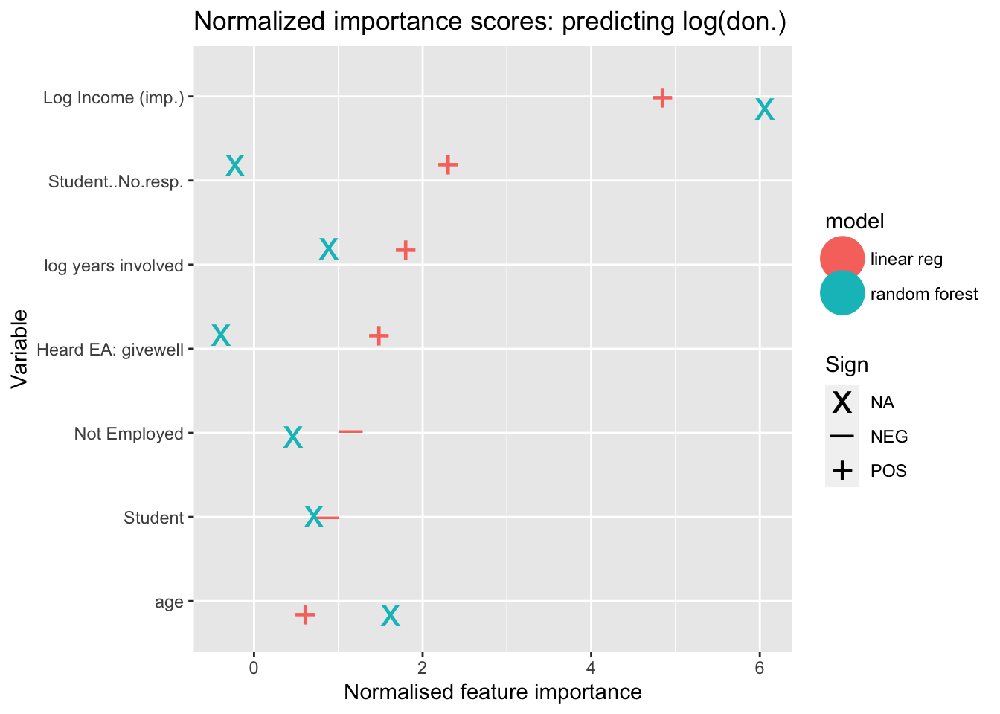
Above, we report the ‘importance scores’ for the ten most important features (‘variables’) for each approach to predicting log (average) donation.*
* Note that (as is common in machine learning modeling) all features have been normalized to be on the same scale; for continuous features we take the natural log of each, and divide each by two standard deviations of the logged feature, following Gelman (2008)
These importance scores are technically defined here. For the elastic net (“linear reg”) approach, we depict the coefficients’ signs with a “+” or “-”; for tree/forest-based modeling this is less straightforward.
Income is the most important predictor in for each model, by a wide margin. After this, the relative importances vary. Still, both put substantial importance on age, years involved, and student status (and to some extent ‘not employed’). Considering where one first-heard of EA, the linear model finds both ‘Unknown’ and GiveWell to be positively related and important, and Less Wrong negatively related to the predicted donation; the random forest model also finds the latter somewhat important.
We next focus specifically on the elastic-net regression-based model.
# TODO -- important -- what are the base groups here, especially for 'first-heard'? I thought in previous work we made "don't remember" the base group! This is important for interpreting the coefficient signs!
# Plot all coefficients for elastic net model
#TODO (DR @ OF -- plot the coefficients rather than the importance weights? (the latter are absolute value t-values anyways))
#TODO/check DR @ OF -- why is 'year of survey 2015' (and 2017) in here? those years should have been removed from the dataset; I think they have been, but still it somehow reports an importance score? -- OK I am removing '0' importance scores for now
(
enet_coefs_ldon <- l_don_av_2yr_best_params_recode %>%
filter(model == "linear reg" & Importance!=0) %>%
mutate_labels_sign_snip %>%
#mutate(Norm = scale_var(Importance)) %>%
mutate(Variable = fct_reorder(Variable, Importance)) %>%
ggplot(aes(y = Variable, x = Importance, shape = Sign)) +
scale_shape_manual(values = c(95, 43)) +
geom_point(size = 2, stroke = 4) +
xlab("Feature importance") +
ggtitle("Importance scores: predicting log(don.)")
)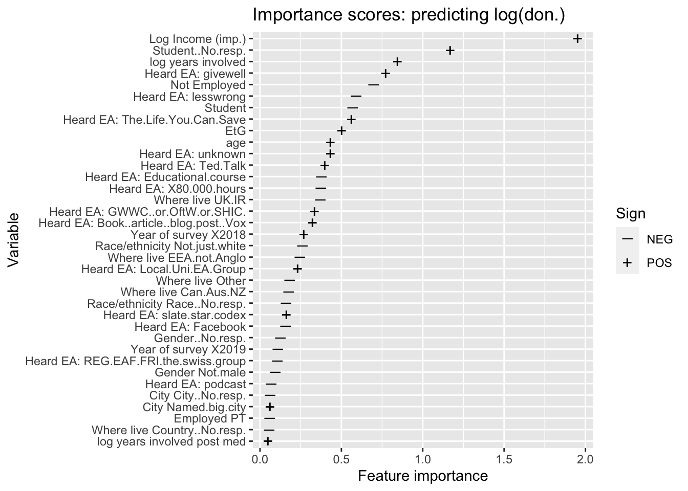
The graph above presents the overall ranking of importance scores within the elastic-net linear regression model, with symbols depicting whether these features take on a positive or negative sign. In addition to those mentioned above, substantial importance is assigned to other ‘first heard’ sources, e.g., GWWC and several related sources positively predict log donation, while 80000 Hours, Facebook, and Educational course negatively predict log donation.
Predictive model: Donated 1k USD or more
(
plot_don_1k_best_params <- d_don_1k_best_params_recode %>%
filter(!stringr::str_detect(model, "tree")) %>%
mutate_labels_sign_snip %>%
norm_vi() %>%
plot_vi() +
ggtitle("Importance scores: predicting donation > 1k USD ")
)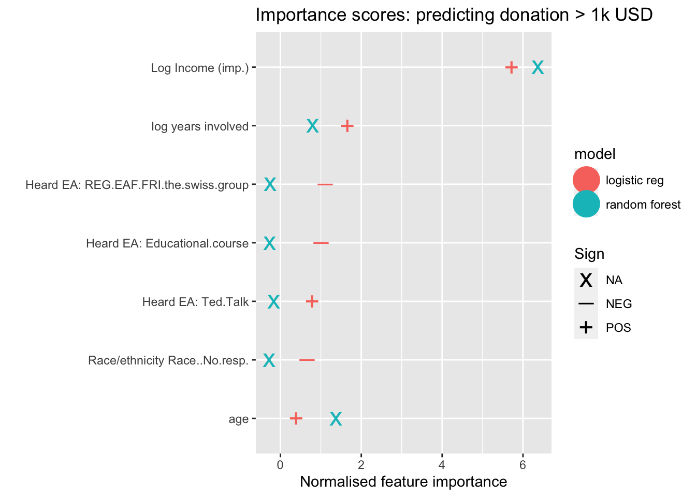
Both approaches deem (log) income to be the most important predictor of donating 1k USD or more. Both also consider (log) years involved and age to be substantially important. The logistic regression elastic-net model assigns importance to several of learning about EA. note that the sign for ‘REG, EAF, etc.’ is negative, in contrast to the positive sign assigned to this for the previous ‘donation share’ prediction.
Next, we plot the (nonzero) importance scores for all of the coefficients in the elastic-net logistic model of donating 1k or more.
(
plot_enet_coefs_don_1k <- d_don_1k_best_params_recode %>%
filter(model == "logistic reg" & Importance!=0) %>%
mutate_labels_sign_snip %>%
#mutate(Norm = scale_var(Importance)) %>%
mutate(Variable = fct_reorder(Variable, Importance)) %>%
ggplot(aes(y = Variable, x = Importance, shape = Sign)) +
scale_shape_manual(values = c(95, 43)) +
geom_point(size = 2, stroke = 4) +
xlab("Feature importance") +
ggtitle("Importance scores: predicting donation > 1000k USD")
)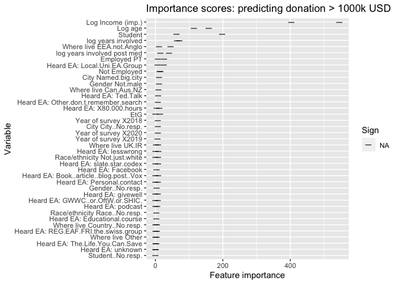
Predictive model: decision trees (plotted)
{kind=link}
rpart.plot::rpart.plot(l_don_av_2yr_tree, nn=TRUE, fallen.leaves = FALSE)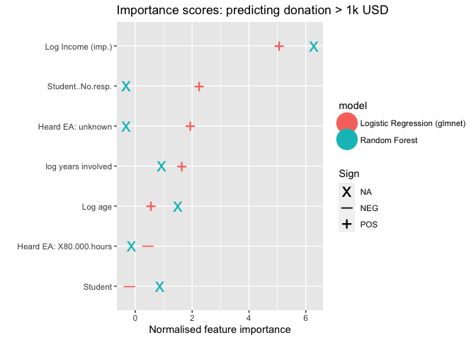
# Plotting of decision trees
# library(rpart.plot)
# rpart.plot(l_don_av_2yr_best_params\$fit[[1]])1.10 Appendix: Extra analysis and robustness checks
This appendix contains further and analysis and robustness checks, as mentioned or alluded to in the above ‘main text.’
Donations by engagement level
don_share_income_by_engage_sp
Donations and income by student/employment status
low, we tabulate income and donations, split by student and employment status.
don_inc_by_student| Characteristic | N | Overall, N = 1,6361 | employed_ft, N = 707 | employed_pt, N = 70 | not_employed_looking, N = 57 | Other, N = 120 | self_employed, N = 127 | student_doctoral, N = 119 | student_masters, N = 155 | student_undergrad, N = 281 |
|---|---|---|---|---|---|---|---|---|---|---|
| Income in $1000 USD | 1,400 | |||||||||
| Median | 33 | 60 | 33 | 15 | 24 | 42 | 26 | 12 | 4 | |
| 10%-90% | 1-130 | 14-182 | 6-70 | 1-92 | 0-107 | 10-126 | 6-55 | 0-56 | 0-17 | |
| Mean [se] (SD) | 61 [4] (138) | 93 [6] (144) | 43 [6] (48) | 37 [8] (54) | 52 [17] (160) | 87 [28] (290) | 28 [2] (18) | 22 [3] (34) | 8 [1] (9) | |
| 2019 donation (in USD) | 1,413 | |||||||||
| Median | 528 | 1,420 | 679 | 284 | 500 | 1,247 | 548 | 178 | 110 | |
| 10%-90% | 0-9,822 | 0-17,048 | 0-5,975 | 0-4,200 | 0-9,000 | 0-15,249 | 0-3,793 | 0-2,367 | 0-1,000 | |
| Mean [se] (SD) | 7,516 [1,944] (73,062) | 10,048 [1,769] (44,507) | 2,779 [743] (5,944) | 3,541 [2,072] (14,503) | 4,085 [1,158] (11,048) | 28,589 [22,709] (238,179) | 1,505 [209] (2,165) | 953 [199] (2,329) | 450 [77] (1,141) | |
| 2020 planned donation | 1,393 | |||||||||
| Median | 1,000 | 3,052 | 1,319 | 349 | 578 | 1,751 | 1,500 | 327 | 200 | |
| 10%-90% | 0-12,039 | 0-21,500 | 0-7,167 | 0-5,114 | 0-8,085 | 0-12,534 | 0-5,678 | 0-2,869 | 0-2,000 | |
| Mean [se] (SD) | 10,002 [1,993] (74,389) | 14,473 [2,895] (72,421) | 3,352 [789] (6,314) | 5,990 [4,166] (28,864) | 10,903 [5,619] (52,712) | 26,841 [19,090] (196,545) | 2,655 [480] (4,919) | 990 [163] (1,906) | 691 [93] (1,372) | |
|
1
c("Median", "10%-90%", "Mean [se] (SD)")
|
||||||||||
Additional: Donations and income by whether a Longtermist cause is top priority
We were asked to compare the donations of those who prioritize longtermist causes to the remainder of EAs. Below, we tabulate this by whether a respondent gives some longtermist cause as high a priority rating as any other cause.
#eas_20 %>% tabyl(lt_above_mn_priority)
#lt_4plus_priority = case_when(
(
don_income_by_priority <-
eas_20 %>%
dplyr::select(income_k_c, donation_2019_c, donation_2020_c, don_share_inc_19_imp, lt_top_priority) %>%
tbl_summary( by = lt_top_priority,
type = c(all_continuous()) ~ "continuous2",
statistic = list(all_continuous() ~ sumstatvec),
label = list(income_k_c ~ "Income in $1000 USD",
donation_2019_c ~ "2019 donation (in USD)",
donation_2020_c ~ "2020 planned donation",
don_share_inc_19_imp ~ "2019 donation as share of (imputed) income" ),
missing = c("no")
) %>%
bold_labels() %>%
add_n() %>%
add_overall()
)| Characteristic | N | Overall, N = 1,6161 | FALSE, N = 796 | TRUE, N = 820 |
|---|---|---|---|---|
| Income in $1000 USD | 1,361 | |||
| Median | 34 | 38 | 29 | |
| 10%-90% | 1-130 | 2-129 | 0-130 | |
| Mean [se] (SD) | 61 [4] (138) | 59 [4] (111) | 62 [6] (161) | |
| 2019 donation (in USD) | 1,374 | |||
| Median | 559 | 700 | 500 | |
| 10%-90% | 0-10,000 | 0-10,000 | 0-10,000 | |
| Mean [se] (SD) | 7,688 [1,998] (74,077) | 6,212 [1,289] (33,823) | 9,172 [3,794] (99,297) | |
| 2020 planned donation | 1,354 | |||
| Median | 1,053 | 1,320 | 939 | |
| 10%-90% | 0-12,759 | 0-12,049 | 0-12,796 | |
| Mean [se] (SD) | 10,186 [2,050] (75,431) | 9,446 [2,188] (57,095) | 10,935 [3,481] (90,311) | |
| 2019 donation as share of (imputed) income | 1,373 | |||
| Median | 0.02 | 0.03 | 0.02 | |
| 10%-90% | 0.00-0.15 | 0.00-0.15 | 0.00-0.14 | |
| Mean [se] (SD) | 0.13 [0.05] (1.82) | 0.09 [0.01] (0.33) | 0.16 [0.10] (2.55) | |
|
1
c("Median", "10%-90%", "Mean [se] (SD)")
|
||||
# Todo (medium): fix labeling and titles above
# Todo (High): add standard error and perhaps tests, perhaps Bayes factors
# Todo (Medium-high): visualization of donations by top-priority category (poverty, animals, LT, meta/other)don_inc_priority_plot <- eas_20 %>%
grp_sum(income_c_imp, donation_2019_c, XXX) %>%
plot_grp(country_big) +
xlab("Mean income in USD (imputed if 0/missing") +
ylab("Mean donations, CIs")The above presentation is meant to be broadly descriptive. Overall, it appears that those who prioritize long-term causes tend to donate a bit less at median but more at mean, and there is a lot of overlap between the two groups.
1.10.2 Planned donation by year, comparison tests
We report the amount people say they expect to donate in the current (survey) year below. Note the high share of missing values for 2017, and the substantially-larger sample in 2018. As noted above, this suggests that comparing the planned donations for 2018 (in EA survey 2018) to actual donations for 2018 (reported in 2019 EA survey) may not be informative.
(
plan_don_per_year <- eas_all %>%
filter(year>=2017) %>%
group_by(year) %>%
summarise("Number reported" = sum(!is.na(donation_plan_usd)), N = n(),
"Number missing" = sum(is.na(donation_plan_usd)),
"Proportion missing (%)" = sum(is.na(donation_plan_usd))/n()*100,
"Mean planned donation" = mean(donation_plan_usd, na.rm=TRUE),
"Median planned donation" = median(donation_plan_usd, na.rm=TRUE)) %>%
kable(caption = "Planned donation per year") %>%
kable_styling()
)| year | Number reported | N | Number missing | Proportion missing (%) | Mean planned donation | Median planned donation |
|---|---|---|---|---|---|---|
| 2017 | 835 | 1852 | 1017 | 54.91361 | 1798.191 | 10.00 |
| 2018 | 1792 | 2601 | 809 | 31.10342 | 11042.301 | 1156.22 |
| 2019 | 1682 | 2513 | 831 | 33.06805 | 10686.573 | 1094.94 |
| 2020 | 1402 | 2056 | 654 | 31.80934 | 9992.946 | 1000.00 |
Below, the results of the signed rank test for plan versus actual donation, excluding 0 donations.
w_signed_test_planned_actual_no0s##
## Wilcoxon signed rank test with continuity correction
##
## data: planned_actual_2019$donation_2019 and planned_actual_2019$planned_donation_2019
## V = 29878, p-value = 0.00001089
## alternative hypothesis: true location shift is greater than 0
## 95 percent confidence interval:
## 159.2801 Inf
## sample estimates:
## (pseudo)median
## 277.8251.10.3 Donations by income ‘earning-to-give’ career status
(
don_income_etg <- eas_all %>%
filter(year_n>=2018) %>%
ggplot(aes(x = income_c_imp_k, y = donation_2019, color = d_career_etg)) +
geom_point(size = 1, alpha = 0.7) + # draw the points
geom_smooth(aes(method = 'loess',
fill = d_career_etg)) + # @Oska -- note I am using local smoothing here.
scale_x_log10(name = "Income in $1K USD (imputed if 0/missing)", n.breaks = 5, limits = c(5, 5000)) +
scale_y_log10(
name = "Donation amount",
# labels = scales::dollar,
labels = scales::label_number_si(prefix = "$"),
n.breaks = 10
) +
scale_color_discrete(name = "Earning to give") +
scale_fill_discrete(guide = "none") +
theme(axis.text.x = element_text( angle = 90, vjust = 0.5, hjust = 1 ),
legend.position = c(.87,.15),
legend.background = element_rect(fill=alpha('blue', 0.01)))
)
#don_income_etg + facet_wrap(~d_gwwc_ever)1.10.4 Models: nonresponse coefficients
Below we report the ‘no response’ coefficients for all of the models presented above (recall that these are ‘controls’ included in each specification). These are exponentiated, as in the presentations above. We report these only here because we suspect they are of less direct interest.
# make nice table (and/or forest plot?) of nonreseponses
(
nr_coefs_table <- bind_rows(nr_coefs_qp, nr_coefs_fl,nr_coefs_logit) %>%
select(outcome, term, model_name, estimate, std.error, p.value, conf.low, conf.high) %>%
filter(!str_detect(model_name, "GWWC")) %>%
filter(str_detect(term, "response|na|NA")) %>%
mutate(
outcome = str_replace_all(outcome, key_eas_all_labels)
) %>%
arrange(term) %>%
.kable(digits=3) %>%
.kable_styling()
)| outcome | term | model_name | estimate | std.error | p.value | conf.low | conf.high |
|---|---|---|---|---|---|---|---|
| Don. ‘avg’ | City: No response |
|
0.662 | 0.197 | 0.037 | 0.450 | 0.975 |
| Don. ‘avg’ | City: No response |
|
0.652 | 0.197 | 0.029 | 0.443 | 0.958 |
| Don./Income (imp) | City: No response |
|
1.029 | 0.205 | 0.888 | 0.688 | 1.540 |
| Don./Income (imp) | City: No response |
|
0.967 | 0.208 | 0.870 | 0.643 | 1.452 |
| Don. > 1k USD | City: No response |
|
1.125 | 0.116 | 0.307 | 0.897 | 1.411 |
| Don. > 1k USD | City: No response |
|
1.118 | 0.121 | 0.358 | 0.882 | 1.417 |
| Don. ‘avg’ | Gender: No response |
|
0.785 | 0.237 | 0.305 | 0.493 | 1.248 |
| Don. ‘avg’ | Gender: No response |
|
0.802 | 0.240 | 0.358 | 0.501 | 1.284 |
| Don./Income (imp) | Gender: No response |
|
1.020 | 0.260 | 0.938 | 0.613 | 1.699 |
| Don./Income (imp) | Gender: No response |
|
1.117 | 0.259 | 0.669 | 0.672 | 1.858 |
| Don. > 1k USD | Gender: No response |
|
0.984 | 0.236 | 0.946 | 0.620 | 1.562 |
| Don. > 1k USD | Gender: No response |
|
1.066 | 0.243 | 0.792 | 0.662 | 1.717 |
| Don. ‘avg’ | Live: Country: No response |
|
1.349 | 0.339 | 0.378 | 0.693 | 2.624 |
| Don. ‘avg’ | Live: Country: No response |
|
1.355 | 0.345 | 0.379 | 0.689 | 2.664 |
| Don./Income (imp) | Live: Country: No response |
|
1.484 | 0.378 | 0.296 | 0.708 | 3.111 |
| Don./Income (imp) | Live: Country: No response |
|
1.488 | 0.378 | 0.294 | 0.709 | 3.122 |
| Don. > 1k USD | Live: Country: No response |
|
0.797 | 0.156 | 0.147 | 0.587 | 1.083 |
| Don. > 1k USD | Live: Country: No response |
|
0.875 | 0.162 | 0.411 | 0.638 | 1.202 |
| Don. ‘avg’ | Race: No response |
|
0.568 | 0.308 | 0.066 | 0.311 | 1.038 |
| Don. ‘avg’ | Race: No response |
|
0.563 | 0.307 | 0.062 | 0.308 | 1.029 |
| Don./Income (imp) | Race: No response |
|
0.810 | 0.268 | 0.433 | 0.479 | 1.370 |
| Don./Income (imp) | Race: No response |
|
0.814 | 0.271 | 0.447 | 0.479 | 1.383 |
| Don. > 1k USD | Race: No response |
|
0.697 | 0.296 | 0.222 | 0.390 | 1.245 |
| Don. > 1k USD | Race: No response |
|
0.665 | 0.300 | 0.174 | 0.370 | 1.197 |
| Don. ‘avg’ | Student: No response |
|
1.599 | 1.884 | 0.803 | 0.040 | 64.240 |
| Don. ‘avg’ | Student: No response |
|
1.602 | 2.216 | 0.832 | 0.021 | 123.234 |
| Don./Income (imp) | Student: No response |
|
0.852 | 0.837 | 0.848 | 0.165 | 4.392 |
| Don./Income (imp) | Student: No response |
|
0.962 | 1.041 | 0.970 | 0.125 | 7.399 |
| Don. > 1k USD | Student: No response |
|
1.781 | 0.731 | 0.429 | 0.425 | 7.456 |
| Don. > 1k USD | Student: No response |
|
1.848 | 0.738 | 0.406 | 0.435 | 7.857 |
| Don. ‘avg’ | Top-6 Uni: NA |
|
1.095 | 0.337 | 0.788 | 0.566 | 2.120 |
| Don. ‘avg’ | Top-6 Uni: NA |
|
1.089 | 0.336 | 0.799 | 0.564 | 2.104 |
| Don./Income (imp) | Top-6 Uni: NA |
|
0.813 | 0.129 | 0.107 | 0.632 | 1.046 |
| Don./Income (imp) | Top-6 Uni: NA |
|
0.822 | 0.127 | 0.121 | 0.641 | 1.053 |
| Don. > 1k USD | Top-6 Uni: NA |
|
0.780 | 0.126 | 0.049 | 0.609 | 0.999 |
| Don. > 1k USD | Top-6 Uni: NA |
|
0.810 | 0.130 | 0.106 | 0.628 | 1.046 |
1.11 Discussion workspace
INTERNAL REVIEWERS: please ignore all content below … these are simply notes to ourselves
Notes on modeling in general and specific approaches (moved from above)
Todo/considerations: Try to predict using earlier year data how much some people will donate in a later year.
Donation in year \(t\) as a function of characteristics in year \(t-T\). Could be a super-useful model - could also have models predicting future donations from past … but we can only do this with ‘pseudo panel’ … attrition is also a big issue.
Another descriptive model … look at donations in ‘generic year’ amount someone donates in that year as a function of their characteristics in that year and dummy or interaction for ‘what that year is.’
Or perhaps a time trend?
Could also do out-of-time validation (e.g., leave one year out of the model)?
Dimensions of modeling choices:
Purpose and interpretation of model: Descriptive (in what way?)? Predictive (future projections?) Plausibly causal?
Outcome variable (or transformation of it) (donations, log (don+1), don>1000, (don + plan)/2, log(… +1), don/income)
“Right-hand-side” variable choices
- “Identification-ish”: ‘focal’, ex-ante-only?, plausibly causal?,
- controls for suspected selection (mainly year and tenure) helping to interpret focal variables
- Power/inference: select a single representative variable,, ‘principal components,’ many related variables (for power/avoid multi-colinearity), ‘multi-level’ modeling to capture aggregations of variables as well as individual components
- Transformations/forms: (e.g,. time-trend vs dummies)
Model type/procedure/functional form: Linear, Quasi-poisson, Logit, proportional, etc.
No-selection (‘unbiased’) and/or variable selection and shrinkage (Random forest, Lasso/Ridge) (later)
Discussion of forest plots moved from above
In each plot we carefully explain the differences between the models.
I. Specification and outcome (and offset)
Quasipoisson: (planned + actual)/2
Quasipoisson with income offset
Logit (for \(don > 1000\))
Further robustness checks in bookdown appendix: log linear model
- feature sets
– use all three feature sets in all of the above
- How to divide up the coefficients in forest plots
We also group the forest plots by particular categories of features of interest.
demographics
feat_income_employ, controls (but not years_involved) for “Robust controls” model), givewell & ETG
[DR to think about how to report the nonlinear adjustment coefficient],
- “nonresponse” to particular questions
Discussion: Tests for shifts in distributions etc
https://bookdown.org/thomas_pernet/Tuto/non-parametric-tests.html#wilcoxon-whitney-wilcoxon-test
https://bookdown.org/egarpor/NP-UC3M/nptests-comp.html
Some suggestions given by friends: coin package for permutation tests
tidymodels/infer – used above
Nik Vetr writes:
for arbitrary sample statistics like differences at specific quantities I’d personally less look for named tests like “Mood’s median test” or whatever and more just do a permutation test / bootstrap to approximate the sampling distribution under the null and then see where the observed values fall within that distribution (edited)
gets the general idea across:
https://uoftcoders.github.io/studyGroup/lessons/r/resampling/lesson/
or maybe this, focusing more on comparing quantiles: https://rcompanion.org/handbook/F_15.html
For a nonparametric bootstrap, I was thinking more: combine the data from both groups into one big population, which represents samples from the distribution of the “one group” null model sample w/ replacement two groups of equal size to your original group. Calculate your desired quantile of interest in each group and substract one from the other to generate your sample statistic of interest repeat 2. some large number of times to approximate the distribution of this sample statistic examine where in this distribution your empirical difference lies. “Reject the null” if it’s sufficiently far out into the tail(s), per your desired alpha
Modeling – other nice things todo
supplements: GWWC, top-cause priority (esp LT vs Animal vs Global Pov), introducer (who introduced into EA), career path
Robustness checks:
- outlier-sensitive procedure (e.g., ‘quantile regression’)
Do with this model
have donations increased YoY:
- average donations of a respondent – ‘year’ coefficient (trend/and or dummies) … the ‘residual’ and t
peek at ‘things associated with donation’ (forest plots of effects sizes as in other post … ggstatsplots)
construct and interpret ‘predictions for future’ from the model … (at least discuss these as a function of unknowns like population size)
Misc, for future
Moss notes (remaining todos)
I suspect Peter will request that we use “ordinary language” labels rather than variable labels for plots
Definitely; I mentioned this specifically to Oska and we are both working on it (TODO). Many commands/plots have an option to use one of the ‘attributes’ labels such as those generated in sjlabelled. In other cases we should generate an ordinary-language list of labels and enter this.
I like donations by time in EA faceted by age. Donation by age faceted by time in EA might also be an interesting way to look at it
Yes but I’m worried this is getting into too much detail… better to ‘save it for the model’ perhaps
Maybe worth mentioning the pandemic here when discussing people donating less than planned?
TODO: address this briefly in new section with donations in year vs planned don for next year, same individuals … and consider if 2020 is different